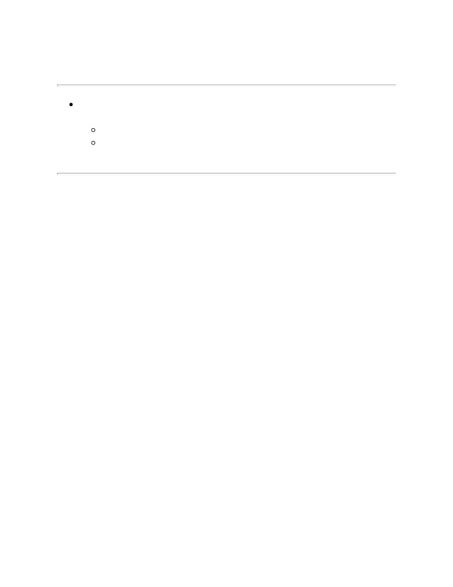

Annotation
«Английский шутя» включает в себя около двухсот английских и
американских анекдотов, текст которых не подвергся никакому
упрощению и, таким образом, содержит большое количество широко
употребляющейся лексики и множество разговорных оборотов
современного английского языка.
Книга адаптирована для осваивающих язык следующим образом:
каждый анекдот повторяется дважды: сначала идет английский текст с
«подсказками»
— с вкрапленным в него дословным русским
переводом и лексико-грамматическим комментарием
(то есть
адаптированный), а затем — тот же текст, но уже неадаптированный,
без подсказок.
Начинающие осваивать английский язык могут при этом читать
сначала текст с подсказками, а затем тот же анекдот — без подсказок.
Совершенствующие свой английский могут поступать наоборот:
читать текст без подсказок, по мере необходимости подглядывая в
подсказки.
Запоминание слов и выражений происходит при этом за счет их
повторяемости, без зубрежки. Кроме того, читатель привыкает к
логике английского языка, начинает его «чувствовать».
Это книга избавит вас от стресса первого этапа освоения языка —
от механического поиска каждого слова в словаре и от бесплодного
гадания, что же все-таки значит фраза, все слова из которой вы уже
нашли.
Книга рассчитана на совершеннолетнего читателя.
От редактора fb2. Есть два способа оформления транскрипции:
UTF-LATIN и ASCII-IPA. Для корректного отображения UTF-LATIN
необходимы полноценные юникодные шрифты, например, DejaVu или
Arial Unicode MS. Если по каким либо причинам вас это не
устраивает, то воспользуйтесь ASCII-IPA версией той же самой книги
(отличается только кодированием транскрипции). Но это сопряженно
с небольшими трудностями восприятия на начальном этапе. Более
подробно об ASCII-IPA читайте в Интернете:

Английский шутя. Английские и американские анекдоты для
начального чтения
Как читать эту книгу
Английский шутя. Английские и американские анекдоты для
начального чтения
Английский шутя. Английские и
американские анекдоты для
начального чтения
Как читать эту книгу
Уважаемые читатели! Откройте, пожалуйста, любую страницу
этой книги. Вы видите, что сначала идет адаптированный анекдот — с
вкрапленным в него дословным русским переводом и небольшим
лексико-грамматическим комментарием. Затем следует тот же
анекдот, но уже неадаптированный, без подсказок.
Если вы только начали осваивать английский язык, то вам сначала
нужно читать текст с подсказками, затем
— тот же текст без
подсказок. Если при этом вы забыли значение какого-либо слова, но в
целом все понятно, то необязательно искать это слово в тексте с
подсказками. Оно вам еще встретится. Смысл неадаптированного
текста как раз в том, что какое-то время — пусть короткое — вы
«плывете без доски». После того, как вы прочитаете
неадаптированный
анекдот,
нужно
читать
следующий
адаптированный анекдот. И так далее. Возвращаться назад — с целью
повторения — не нужно. Просто продолжайте читать дальше.
Сначала на вас хлынет поток неизвестных слов и форм. Не
бойтесь: вас же никто по ним не экзаменует. По мере чтения (пусть
это произойдет хоть в середине или даже в конце книги) все
«утрясется», и вы будете, пожалуй, удивляться:
«Ну зачем опять
дается перевод, зачем опять приводится исходная форма слова, все
ведь и так понятно!» Когда наступает такой момент, «когда и так
понятно», вы можете читать наоборот: сначала неадаптированную
часть, а потом заглядывать в адаптированную. (Этот же способ чтения
можно рекомендовать и тем, кто осваивает язык не с нуля.)
После каждого неадаптированного анекдота вы найдете
«копилку» с несколькими часто употребляющимися, разговорными
фразами — либо взятыми непосредственно из этого анекдота, либо
содержащими ту же лексику. Это может служить подспорьем для тех
из вас, кто одновременно с чтением осваивает и разговорный
английский — то есть для тех, кто постоянно общается на английском
языке. Что делать с этими фразами, как их запомнить? Лучше всего не
зазубривать их, а для каждой фразы мысленно представить себе
ситуацию, в которой вы могли бы ее произнести. После чего ее надо
произнести — но только выразительно и не шепотом, а в полный
голос. Затем постарайтесь представить себе еще одну ситуацию,
другую ситуацию для этой же фразы — и опять скажите ее, уже с
другой интонацией. Двух ситуаций часто бывает достаточно, чтобы
запомнить фразу. Во всяком случае это лучше, чем ее сто раз
повторить просто так.
Язык по своей природе — средство, а не цель, поэтому он лучше
всего усваивается не тогда, когда его специально учат, а когда им
естественно пользуются
— либо в живом общении, либо
погрузившись в занимательное чтение. Тогда он учится сам собой,
подспудно.
Наша память тесно связана с тем, что мы чувствуем в какой-либо
конкретный момент, зависит от нашего внутреннего состояния, от
того, насколько мы «разбужены» сейчас (а не от того, например,
сколько раз мы повторим какую-нибудь фразу или сколько выполним
упражнений). Вы можете десять раз повторить, например, английскую
фразу «Я вас люблю» — и не запомнить ее, зато она сразу прекрасно
отложится в памяти, если вам ее скажет носитель языка (и не в
учебных целях). Поэтому и реплика персонажа книги гораздо легче
запомнится, чем (пусть точно такая же) фраза из учебника. Ведь мы
сопереживаем, когда читаем.
Кроме того, для запоминания нужна не сонная, механическая
зубрежка или вырабатывание каких-то навыков, а новизна
впечатлений. Чем несколько раз повторить слово, лучше повстречать
его в разных сочетаниях и в разных смысловых контекстах. Основная
масса общеупотребительной лексики при том чтении, которое вам
предлагается, запоминается без зубрежки, естественно — за счет
повторяемости слов. Поэтому, прочитав отрывок, не нужно
стараться заучить слова из него. «Пока не усвою, не пойду дальше» —
этот принцип здесь не подходит. Чем интенсивнее вы будете читать,
чем быстрее бежать вперед — тем лучше для вас. В данном случае,
как ни странно, чем поверхностнее, чем расслабленнее, тем лучше. И
тогда объем материала сделает свое дело, количество перейдет в
качество. Таким образом, все, что требуется от вас, — это просто
почитывать, думая не об иностранном языке, который по каким-либо
причинам приходится учить, а о содержании читаемого. Для меня это
не подходит, — подумаете вы. Я так ничего не запомню. Поверьте, что
если вы действительно будете читать эту книгу интенсивно, то метод
сработает. Если же вы будете читать ее не один месяц, то тогда
действительно ничего не выйдет. Ведь вы будете использовать вещь,
нарушая инструкцию.
Главная беда всех учащих долгие годы один какой-либо язык в
том, что они занимаются им понемножку, а не погружаются с
головой. Язык - не математика, его надо не учить, к нему надо
привыкать. Здесь дело не в логике и не в памяти, а в навыке. Он скорее
похож в этом смысле на спорт, которым нужно заниматься в
определенном режиме, так как в противном случае не будет
результата. Если сразу и много читать, то свободное чтение по-
английски - вопрос трех - четырех месяцев (начиная «с нуля»). А если
учить помаленьку, то это только себя мучить и буксовать на месте.
Язык в этом смысле похож на ледяную горку - на нее надо быстро
забежать. Пока не забежите - будете скатываться. Если вы достигли
такого момента, что свободно читаете, то вы уже не потеряете этот
навык и не забудете лексику, даже если возобновите чтение на этом
языке лишь через несколько лет. А если не доучили - тогда все
выветрится.
А что делать с грамматикой? Собственно для понимания текста,
снабженного такими подсказками, знание грамматики уже не нужно
— и так все будет понятно. А затем происходит привыкание к
определенным формам — и грамматика усваивается тоже подспудно.
Ведь осваивают же язык люди, которые никогда не учили его
грамматики, а просто попали в соответствующую языковую среду. Это
говорится не к тому, чтобы вы держались подальше от грамматики
(грамматика — очень интересная вещь, занимайтесь ею тоже), а к
тому, что приступать к чтению данной книги можно и без
грамматических познаний.
Эта книга поможет вам преодолеть важный барьер: вы наберете
лексику и привыкнете к логике языка, сэкономив много времени и
сил. Но прочитав ее, не нужно останавливаться, продолжайте читать
по-английски (теперь уже просто поглядывая в словарь)!
Составитель книги, Илья Михайлович Франк, будет благодарен за
отзывы, особенно конкретно-критические, которые можно присылать
дополнительные материалы по данному методу чтения.
Другие книги, адаптированные по этому же методу:
«Ирландские волшебные сказки» (на английском языке), «Английский
язык с Крестным Отцом», «Немецкий шутя», «Немецкий язык с
Эрихом Кестнером: Эмиль и сыщики»,
«Эрих Кестнер: Двойная
Лоттхен», «Людвиг Тома: Хулиганские истории», «Сто немецких
стихотворений», «Испанские волшебные сказки», «Французский язык
с Маленьким Принцем», «Итальянский язык с Пиноккьо».
Английский шутя. Английские и
американские анекдоты для
начального чтения
A shoplifter (магазинный вор) was caught (был пойман) red-handed
(на месте преступления: "красноруким, с красными руками") trying to
steal a watch from an exclusive jewelry store (при попытке украсть
наручные часы из эксклюзивного ювелирного магазина; exclusive [ɪks
ˈklu:sɪv]). "Listen (послушайте)," said the shoplifter, "I know you don't
want any trouble either (я знаю, вы также /как и я/ не хотите никаких
неприятностей). What do you say I just buy the watch and we forget
about this?
(что вы скажете — я просто покупаю часы и мы
забываем об этом)"
The manager agreed and wrote up the sales slip
(менеджер
согласился и заполнил бланк с ценой). The crook (воришка) looked at the
slip (посмотрел на бланк) and said, "This is a little more than I intended
to spend (это несколько больше, чем я намеревался потратить). Can
you show me something less expensive? (вы не могли бы показать мне
что-нибудь менее дорогое)"
A shoplifter was caught red-handed trying to steal a watch from an
exclusive jewelry store. "Listen," said the shoplifter, "I know you don't
want any trouble either. What do you say I just buy the watch and we
forget about this?"
The manager agreed and wrote up the sales slip. The crook looked at
the slip and said, "This is a little more than I intended to spend. Can you
show me something less expensive?"
This is a little more than I intended to spend. Can you show me
something less expensive?
"But why (но почему)," demanded (спросил) the puzzled judge
(сбитый с толку судья) of the burglar (у грабителя) standing before
(стоящего перед /ним/), "did you break into (вы влезали в; to break —
ломать) the same store three nights running? (один и тот же магазин
три ночи подряд; to run — бежать; здесь — следовать)"
"Well, Judge, it's like this
(это было так)," was the reply (был
ответ). "I picked out a dress for my wife (я взял: «подобрал, подцепил»
платье для моей жены; to pick — выбирать, подбирать, отбирать)
and I had to change it twice (а затем мне пришлось поменять его
дважды)."
"But why," demanded the puzzled judge of the burglar standing
before, "did you break into the same store three nights running?"
"Well, Judge, it's like this," was the reply. "I picked out a dress for my
wife and I had to change it twice."
I picked out a dress for my wife and I had to change it twice.
Sherlock Holmes and his friend Watson (Шерлок Холмс и его друг
Ватсон) were on a camping and hiking trip (были в палаточном походе;
to hike — путешествовать, ходить пешком, бродяжничать).
They had gone to bed (они легли спать) and were lying there (и
лежали "там") looking up at the sky (смотря /вверх/ на небо).
Holmes said, "Watson, look up. What do you see?
(Ватсон,
посмотрите наверх. Что вы видите)"
"Well, I see thousands of stars (я вижу тысячи звезд)."
"And what does that mean to you? (и что это значит, по-вашему, о
чем вам это говорит)"
"Well, I guess it means we will have another nice day tomorrow (мне
кажется, это значит, что у нас завтра будет очередной хороший
денек). What does it mean to you, Holmes?"
"To me, it means someone has stolen our tent (что кто-то стащил
нашу палатку /to steel-stole-stolen — красть/)."
Sherlock Holmes and his friend Watson were on a camping and
hiking trip.
They had gone to bed and were lying there looking up at the sky.
Holmes said, "Watson, look up. What do you see?"
"Well, I see thousands of stars."
"And what does that mean to you?"
"Well, I guess it means we will have another nice day tomorrow.
What does it mean to you, Holmes?"
"To me, it means someone has stolen our tent."
And what does that mean to you?
On a rural road (на проселочной дороге) a state trooper (конный
полицейский) pulled this farmer over (остановил /машину/ фермера)
and said: "Sir, do you realize (сэр, вы понимаете /знаете/) your wife fell
out of the car several miles back? (что ваша супруга выпала из машины
несколько миль "назад" /to fall-fell-fallen — падать/)"
To which the farmer replied (на что фермер ответил), "Thank God,
I thought I had gone deaf! (слава Богу, я думал, я "стал глухим", оглох)"
On a rural road a state trooper pulled this farmer over and said: "Sir,
do you realize your wife fell out of the car several miles back?"
To which the farmer replied, "Thank God, I thought I had gone deaf!"
Thank God!
Old farmer Johnson was dying (старый фермер Джонсон умирал).
The family was standing around his bed
(семья стояла вокруг его
постели). With a low voice he said to his wife (тихим голосом он сказал
своей жене): "When I'm dead I want you to marry farmer Jones (когда я
умру, я хочу, чтобы ты вышла за фермера Джонса)."
Wife (жена): "No, I can't marry anyone after you (нет, я не могу
выйти ни за кого после тебя)."
Johnson: "But I want you to (но я хочу, чтобы ты это сделала)."
Wife: "But why? (но почему)"
Johnson: "Jones once cheated me in a horse deal! (Джонс однажды
надул меня при покупке лошади; deal — сделка)"
Old farmer Johnson was dying. The family was standing around his
bed. With a low voice he sad to his wife: "When I'm dead I want you to
marry farmer Jones."
Wife: "No, I can't marry anyone after you."
Johnson: "But I want you to."
Wife: "But why?"
Johnson: "Jones once cheated me in a horse deal!"
But I want you to.
Newly wed wife to her husband (молодая жена своему мужу):
"That is why I can't stand you (вот почему я не могу выносить
тебя) - you are so unpredictable (ты такой непредсказуемый; to predict
— предсказывать). On Monday you liked the potatoes (в понедельник
ты любил картошку), Tuesday (во вторник) you liked the potatoes,
Wednesday (в среду) you liked the potatoes, Thursday (в четверг) you
said (ты сказал) you loved the potatoes preparation (тебе понравилось
приготовление картошки = как она приготовлена), Friday (в пятницу)
you liked the potatoes, Saturday (в субботу) you liked the potatoes and
now (а сейчас) all of a sudden (вдруг) on Sunday (в воскресенье) you say
that you don't like potatoes."
Newly wed wife to her husband:
"That is why I can't stand you — you are so unpredictable. On
Monday you liked the potatoes, Tuesday you liked the potatoes,
Wednesday you liked the potatoes, Thursday you said you loved the
potatoes preparation, Friday you liked the potatoes, Saturday you liked the
potatoes and now all of a sudden on Sunday you say that you don't like
potatoes."
That is why I can't stand you — you are so unpredictable.
A man in a bar sees a friend at a table, drinking by himself (человек в
баре видит за столиком приятеля, пьющего в одиночку).
Approaching (подойдя, приблизившись к) the friend he comments
(замечает), "You look terrible (ты ужасно выглядишь). What's the
problem? (в чем проблема, что случилось)"
"My mother died in August (моя мать умерла в августе)," he said,
"and left me (оставила мне)
$25,000."
"Gee, that's tough
(ого, вот это сурово; taugh
— жесткий,
плотный, упругий; тяжело)," he replied (ответил).
"Then in September
(затем в сентябре)," the friend continued
(продолжал), "My father died, leaving me $90,000."
"Wow. Two parents gone in two months (ух-ты, двое родителей за
два месяца). No wonder you're depressed
(неудивительно, что ты
подавлен)."
"And last month (в прошлом месяце) my aunt (тетя) died, and left
me $15,000."
"Three close family members lost in three months? (три близких
члена семьи потеряны за три месяца) How sad (как печально)."
"Then this month
(а в этом месяце)," continued the friend,
"absolutely nothing! (абсолютно ничего)"
A man in a bar sees a friend at a table, drinking by himself.
Approaching the friend he comments, "You look terrible. What's the
problem?"
"My mother died in August," he said, "and left me $25,000."
"Gee, that's tough," he replied.
"Then in September," the friend continued, "My father died, leaving
me $90,000."
"Wow. Two parents gone in two months. No wonder you're
depressed."
"And last month my aunt died, and left me $15,000."
"Three close family members lost in three months? How sad."
"Then this month," continued the friend, "absolutely nothing!"
You look terrible. What's the problem?
Gee, that's tough!
No wonder you're depressed.
The patient shook his doctor's hand in gratitude (пациент пожал
руку доктора с благодарностью /to shake-shook-shaken — трясти/)
and said (и сказал), "Since we are the best of friends (так как мы лучшие
друзья), I would not insult you by offering payment (я не буду обижать
вас, предлагая плату). But I would like you to know that I have
mentioned you in my will (но я хочу, чтобы вы знали, что я упомянул
вас в своем завещании)."
"That is very kind of you (это очень мило с вашей стороны)," said
the doctor emotionally (взволнованно, растроганным голосом), and then
added (добавил), "Can I see that prescription I just gave you? (можно я
посмотрю тот рецепт, что я вам дал только что) I'd like to make a
little change… (я бы хотел сделать небольшое изменение)"
The patient shook his doctor's hand in gratitude and said, "Since we
are the best of friends, I would not insult you by offering payment. But I
would like you to know that I have mentioned you in my will."
"That is very kind of you," said the doctor emotionally, and then
added, "Can I see that prescription I just gave you? I'd like to make a little
change…"
That is very kind of you.
The man told his doctor that he wasn't able to do (человек сказал
своему врачу, что он не может делать) all the things around the house
that he used to do (все вещи по дому, которые он раньше делал: «имел
обыкновение делать»). When the examination was complete
(когда
осмотр был завершен), he said, "Now, Doc, I can take it (ну, док, я
справлюсь с этим: «я могу взять это»). Tell me in plain English what is
wrong with me (скажи мне на ясном английском = открыто, что со
мной не так; plain
— ясный, понятный; простой; ровный
/о
местности/; равнина)."
"Well, in plain English," the doctor replied, "you're just lazy (ты
просто ленивый)."
"Okay," said the man. "Now give me the medical term so I can tell my
wife (теперь назови мне медицинский термин, чтобы я мог сказать
моей жене)."
The man told his doctor that he wasn't able to do all the things around
the house that he used to do. When the examination was complete, he said,
"Now, Doc, I can take it. Tell me in plain English what is wrong with me."
"Well, in plain English," the doctor replied, "you're just lazy."
"Okay," said the man. "Now give me the medical term so I can tell my
wife."
Now, Doc, I can take it.
What is wrong with him?
You're just lazy.
As the doctor completed an examination of the patient (когда доктор
закончил осмотр пациента; complete [kǝmˈpli:t]; patient [ˈpeɪʃ(ǝ)nt]),
he said (он сказал), "I can't find a cause for your complaint (я не могу
найти причину вашей жалобы; complaint
[kǝmˈpleɪnt]). Frankly
(откровенно /говоря/), I think it's due to drinking (я думаю, это из-за
выпивания; due — должный, обязанный, ожидаемый)."
"In that case (в таком случае)," said the patient, "I'll come back
when you're sober
(я вернусь, когда вы будете трезвым, когда
протрезвеете)".
As the doctor completed an examination of the patient, he said, "I
can't find a cause for your complaint. Frankly, I think it's due to drinking."
"In that case," said the patient, "I'll come back when you're sober".
Frankly, I think it's due to drinking.
A patient came to his dentist (пациент пришел к своему дантисту)
with problems with his teeth (с проблемами с зубами).
Patient: Doctor, I have yellow teeth (у меня желтые зубы), what do
I do? (что мне делать)
Dentist: Wear a brown tie! (носите коричневый галстук; to wear
[wɛǝ(r)])
A patient came to his dentist with problems with his teeth.
Patient: Doctor, I have yellow teeth, what do I do?
Dentist: Wear a brown tie!
What do I do?
Patient: My hair keeps falling out
(мои волосы продолжают
выпадать). What can you give me (что вы можете мне дать) to keep
it in? (чтобы сохранить их)
Doctor: A shoebox (коробку от ботинок).
Patient: My hair keeps falling out. What can you give me to keep it
in?
Doctor: A shoebox.
My hair keeps falling out.
Doctor: What seems to be the trouble?
(что представляется
проблемой)
Patient: Doctor, I keep getting the feeling
(доктор, у меня
постоянно такое чувство:
«продолжаю получать чувство») that
nobody can hear what I say (что никто не слышит, что я говорю).
Doctor: What seems to be the trouble?
Doctor: What seems to be the trouble?
Patient: Doctor, I keep getting the feeling that nobody can hear what I
say.
Doctor: What seems to be the trouble?
What seems to be the trouble?
Doctor: You're in good health
(вы совершенно здоровы: "вы в
добром здравии"; health [helƟ]). You'll live to be eighty (вы доживете
до 80).
Patient: But, doctor, I am 80 right now (но доктор, мне сейчас 80).
Doctor: See, what did I tell you (видите, что я вам говорил).
Doctor: You're in good health. You'll live to be eighty.
Patient: But, doctor, I am 80 right now.
Doctor: See, what did I tell you.
You're in good health.
See, what did I tell you.
Patient: Doctor, I have a serious memory problem (у меня серьезная
проблема с памятью; serious [ˈsɪrɪǝs]; memory [ˈmemǝrɪ]). I can't
remember anything! (я ничего не могу запомнить, вспомнить)
Doctor: So, since when did you have this problem? (так, с какого
времени у вас эта проблема)
Patient: What problem? (какая проблема)
Patient: Doctor, I have a serious memory problem. I can't remember
anything!
Doctor: So, since when did you have this problem?
Patient: What problem?
I can't remember anything!
A man, after being hurt
(человек, после того, как получил
повреждения, травму: to hurt
— причинить боль, повредить,
ушибить), calls 911 for help (звонит 911 за помощью).
Man: Operator, operator, call me an ambulance! (вызовите мне
скорую помощь / назовите меня скорой помощью — игра слов: to call
— вызывать/называть; ambulance [ˈæmbjulǝns])
Operator: Okay, sir, you're an ambulance! (вы — скорая помощь)
A man, after being hurt, calls 911 for help.
Man: Operator, operator, call me an ambulance!
Operator: Okay, sir, you're an ambulance!
Call me an ambulance!
A drummer, sick of all the drummer jokes (ударник, уставший от
всех шуток про ударников), decides to change his instrument (решает
сменить инструмент). After some thought
(после некоторого
раздумья), he decides on the accordion (он выбирает аккордеон). So he
goes to the music store (и он идет в музыкальный магазин) and says to
the owner (и говорит хозяину), "I'd like to look at the accordions, please
(я хочу взглянуть на аккордеоны, пожалуйста)."
The owner gestures (указывает) to a shelf in the corner (на полку в
углу) and says, "All our accordions are over there (все наши аккордеоны
вон там)."
After browsing
(после беглого рассматривания; browse
—
молодые побеги; to browse — ощипывать листья, молодые побеги;
пролистывать, небрежно просматривать), the drummer says, "I think
I'd like the big red one in the corner (я думаю, мне подойдет большой
красный в углу)."
The store owner looks at him (смотрит на него) and says, "You're a
drummer, aren't you? (вы ударник, не так ли)"
The drummer, crestfallen
(упавший духом: crest
— гребешок /
петуха/ + to fall — падать), says, "How did you know? (как вы узнали)"
The store owner says, "That 'big red accordion' is the radiator (тот
большой красный аккордеон — радиатор; radiator [rædɪˈeɪtǝ(r)])."
A drummer, sick of all the drummer jokes, decides to change his
instrument.
After some thought, he decides on the accordion. So he goes to the
music store and says to the owner, "I'd like to look at the accordions,
please."
The owner gestures to a shelf in the corner and says, "All our
accordions are over there."
After browsing, the drummer says, "I think I'd like the big red one in
the corner."
The store owner looks at him and says, "You're a drummer, aren't
you?"
The drummer, crestfallen, says, "How did you know?"
The store owner says, "That 'big red accordion' is the radiator."
I'd like to look at the accordions, please.
How did you know?
A guy walks into the doctor's office and says (человек заходит в
кабинет врача и говорит), "Doc, I haven't had a bowel
(кишка,
кишечник) movement (движение) in a week! (доктор, у меня нет стула
неделю)" The doctor gives him a prescription (дает ему рецепт) for a
mild laxative (мягкого слабительного; laxative [ˈlæksǝtɪv]) and tells
him, "If it doesn't work, let me know (если не поможет, дайте мне
знать)."
A week later
(спустя неделю), the guy is back
(человек
возвращается): "Doc, still (по-прежнему) no movement!"
The doctor says, "Hmm, guess (/мне/ кажется) you need (вам
нужно) something stronger
(что-то сильнее)," and prescribes
(выписывает) a powerful laxative (сильное слабительное; power —
мощь).
Still
(все же, тем не менее) another week later
(спустя еще
неделю: "спустя другую неделю") the poor (несчастный) guy is back:
"Doc, STILL nothing! (по-прежнему ничего)"
The doctor, worried (обеспокоенный), says, "We'd better get some
more information about you
(нам лучше получить побольше
информации о вас) to try to figure out what's going on
(чтобы
попытаться выяснить, что происходит). What do you do for a living?
(что вы делаете "для проживания" = чем вы зарабатываете на
жизнь)"
"I'm a musician (я музыкант)."
The doctor looks up (поднимает глаза) and says, "Well, that's it! (ну,
понятно) Here's (здесь: "вот")
$10.00. Go get something to eat! (идите
купите что-нибудь поесть)"
A guy walks into the doctor's office and says, "Doc, I haven't had a
bowel movement in a week!" The doctor gives him a prescription for a
mild laxative and tells him, "If it doesn't work, let me know."
A week later the guy is back: "Doc, still no movement!"
The doctor says, "Hmm, guess you need something stronger," and
prescribes a powerful laxative.
Still another week later the poor guy is back: "Doc, STILL nothing!"
The doctor, worried, says, "We'd better get some more information
about you to try to figure out what's going on. What do you do for a
living?"
"I'm a musician."
The doctor looks up and says, "Well, that's it! Here's $10.00. Go get
something to eat!"
That's it!
What do you do for a living?
"Do you believe in life after death? (вы верите в жизнь после
смерти)" the boss (начальник) asked one of his employees (спросил
одного из его служащих; employee [emplɔɪˈi:]).
"Yes, Sir
(да, сэр)," the new recruit replied
(новый работник
ответил; recruit [rɪˈkru:t]).
"Well, then, that makes everything just fine (ну, это "делает все
просто прекрасным")," the boss went on (продолжал). "After you left
early yesterday (после того, как вы ушли рано вчера; to leave-left-left —
покидать, уходить) to go to your grandmother's funeral (чтобы пойти
на похороны вашей бабушки; funeral [ˈfjun(ǝ)r(ǝ)l]), she stopped in to
see you (она заглянула, зашла вас повидать)."
"Do you believe in life after death?" the boss asked one of his
employees.
"Yes, Sir," the new recruit replied.
"Well, then, that makes everything just fine," the boss went on. "After
you left early yesterday to go to your grandmother's funeral, she stopped
in to see you."
That makes everything just fine.
A musical director was having a lot of trouble with one drummer
(дирижер имел много неприятностей с одним ударником). He talked
and talked and talked (он говорил, говорил и говорил) with the drummer,
but his performance simply didn't improve (но его исполнение просто не
улучшалось; performance [pǝ(r)ˈfɔ:mǝns]).
Finally (наконец), before the whole orchestra, he said (перед всем
оркестром он сказал; orchestra [ˈɔ:kɪstrǝ]), "When a musician just can't
handle his instrument (когда музыкант просто не умеет обращаться
со своим инструментом; instrument [ˈɪnstrument]) and doesn't improve
when given help (и не совершенствуется, когда получает помощь),
they take away the instrument (/они/ забирают /прочь/ инструмент),
and give him two sticks, and make him a drummer (и дают ему две
палочки и делают его ударником)."
A stage whisper
("театральный" шепот) was heard from the
percussion section (был услышан cо стороны ударников; percussion —
столкновение; percussion instrument — ударный инструмент): "And if
he can't handle even that (а если он не может владеть даже этим; to
handle — оперировать; справляться), they take away one of his sticks
(забирают одну из его палочек) and make him a conductor (и делают
его дирижером)."
A musical director was having a lot of trouble with one drummer. He
talked and talked and talked with the drummer, but his performance
simply didn't improve.
Finally, before the whole orchestra, he said, "When a musician just
can't handle his instrument and doesn't improve when given help, they take
away the instrument, and give him two sticks, and make him a drummer."
A stage whisper was heard from the percussion section: "And if he
can't handle even that, they take away one of his sticks and make him a
conductor."
He can't handle even that.
For the first time in many years (в первый раз за много лет), an old
man traveled from his rural town to the city (пожилой человек приехал
из cвоего провинциального городка в город) to attend a movie
(посетить кино). After buying his ticket (после покупки билета, купив
билет), he stopped to purchase some popcorn (он остановился купить
попкорна; to purchase [ˈpǝ:rtʃǝs] - приобретать).
Handing the attendant (давая служащему; attendant [ǝˈtendǝnt])
$1.50, he couldn't help but comment
(он не смог удержаться от
замечания; to comment [ˈkɔment]), "The last time I came to the movie
(последний раз, когда я был в кино), popcorn was only 15 cents (попкорн
был только 15 центов)."
"Well, sir (ну, сэр)," the attendant replied (ответил) with a grin (с
усмешкой), "You're really going to enjoy yourself (вы действительно
развлечетесь). We have sound now… (теперь у нас есть звук = теперь
кино звуковое)"
For the first time in many years, a an old man traveled from his rural
town to the city to attend a movie. After buying his ticket, he stopped to
purchase some popcorn.
Handing the attendant $1.50, he couldn't help but comment, "The last
time I came to the movies, popcorn was only 15 cents."
"Well, sir," the attendant replied with a grin, "You're really going to
enjoy yourself. We have sound now…"
You're really going to enjoy yourself.
A man really loved a woman (один человек действительно = очень
сильно любил одну женщину), but he was just too shy (но он был
слишком стеснительным) to propose to her
(чтобы сделать ей
предложение). Now he was up in his years (сейчас он был уже в годах)
and neither of them had ever been married (и никто из них никогда /ever
— когда-либо/ не состоял в браке; neither [ˈnaɪðǝ(r)]; to marry —
вступать в брак). Of course, they dated about once a week (конечно, они
ходили на свидание раз в неделю) for the past six years (все последние
шесть лет), but he was so timid (робкий; timid [ˈtɪmɪd]) he just never got
around
(он просто так и не собрался) to suggesting marriage
(предложить брак; suggest [sǝˈdʒest]; marriage [ˈmǝrɪdʒ]) much less
living together (еще меньше — жить вместе = а сожительствовать
уж и подавно /не решился предложить/).
But one day (но однажды), he became determined to ask her the
question (он «стал» /достаточно/ решительным, чтобы задать ей
этот вопрос = он решился задать ей этот вопрос). So he calls her on
the phone (он звонит ей по телефону), "June."
"Yes, this is June (да, это Джун)."
"Will you marry me? (ты выйдешь за меня)"
"Of course I will! (конечно, выйду) Who's this? (кто это)"
A man really loved a woman, but he was just too shy to propose to
her. Now he was up in his years and neither of them had ever been married.
Of course, they dated about once a week for the past six years, but he was
so timid he just never got around to suggesting marriage much less living
together.
But one day, he became determined to ask her the question. So he
calls her on the phone, "June."
"Yes, this is June."
"Will you marry me?"
"Of course I will! Who's this?"
Will you marry me?
Jack was living in Arizona (Джек жил в Аризоне) during a heat
wave (в период сильной жары: «тепловой волны») when the following
took place
(когда имело место следующее: to take place
—
происходить: «брать место»).
"It's just too hot to wear clothes today (сегодня слишком жарко,
чтобы носить одежду; just — точно, как раз, именно; совсем, прямо,
просто)," complained (пожаловался) Jack as he stepped out of the
shower (когда вышел из душа). "Honey (душечка: «мед»), what do you
think the neighbors would think (как ты думаешь, что подумали бы
соседи) if I mowed the lawn like this? (если бы я косил луг вот так)"
"Probably that I married you for your money (наверное, что я
вышла за тебя из-за твоих денег)."
Jack was living in Arizona during a heat wave when the following
took place.
"It's just too hot to wear clothes today," complained Jack as he
stepped out of the shower. "Honey, what do you think the neighbors would
think if I mowed the lawn like this?"
"Probably that I married you for your money."
It's just too hot to wear clothes today.
Sue and Bob, a pair of tight wads
(пара скупердяев; tight
—
плотный, тугой; wad — связка, пучок; пачка бумажных денег), lived
in the Midwest (жили на Среднем Западе), and had been married years
(и уже были женаты /долгие/ годы). Bob had always wanted to go
flying
(Боб всегда хотел полетать). The desire deepened (желание
становилось глубже) each time a barnstormer (каждый раз, когда
летчик-спортсмен, выступающий с летными шоу в провинции; barn -
амбар + to storm - стремительно проноситься; штурмовать) flew
into town to offer rides (прилетал в город предложить покататься;
ride
— поездка; to ride — ехать верхом). Bob would ask (бывало
предлагал), and Sue would say, "No way (ни в коем случае), ten dollars is
ten dollars (десять долларов есть десять долларов)."
The years went by (прошли годы), and Bob figured he couldn't wait
much longer (понял, что не может ждать больше), so he got Sue out
to the show (он брал Сью на представление), explaining (объясняя), it's
free to watch (смотреть /можно/ бесплатно), let's (давай) at least (по
крайней мере) watch.
And once he got there (и однажды, когда он пришел туда) the
feeling became very strong (это чувство /желание полетать/ стало
очень сильным). Sue and Bob started an argument (начали дискуссию,
спор).
The Pilot, between flights
(пилот между полетами), overheard
(подслушал /to hear-heard-heard/) that, and said, "I'll tell you what (вот
что я вам скажу), I'll take you up flying (я возьму вас полетать), and if
you don't say a word the ride is on me (и если вы не произнесете ни
слова, поездка на мне), but if you utter one sound (но, если вы издадите
/хоть/ один звук), you pay ten dollars (вы платите 10 долларов).
So off they flew (и они взлетели). The Pilot doing as many rolls
(пилот проделывал столько "бочек": roll — свиток, сверток; авиац.
«бочка» — двойной переворот через крыло) and dives (и пикирований;
dive — ныряние; to dive — нырять) as he could — heading to the ground
(сколько мог — направляясь в землю) as fast as the plane could go (так
быстро, как самолет мог лететь) and pulling out of the dive at just the
very last second (и выходил из пикирования прямо в самую последнюю
секунду). Not a word (ни слова). Finally he admitted defeat (наконец он
признал поражение) and went back the airport (и вернулся в аэропорт).
"I'm surprised, why didn't you say anything? (я удивлен, почему вы
ничего не сказали)"
"Well I almost said something (ну, я чуть не сказал что-то) when
Sue fell out (когда Сью выпала), but ten dollars is ten dollars."
Sue and Bob, a pair of tight wads, lived in the Midwest, and had been
married years. Bob had always want to go flying. The desire deepen each
time a barn stormer flew into town to offer rides. Bob would ask, and Sue
would say, "No way, ten dollars is ten dollars."
The years went pay, and Bob figured he didn't have much longer, so
he got Sue out to the show, explaining, it's free to watch, let's at least
watch.
And once he got there the feeling became very strong. Sue and Bob
started an argument.
The Pilot, between flights, overheard, listened to they problem, and
said, "I'll tell you what, I'll take you up flying, and if you don't say a word
the ride is on me, but if you utter one sound, you pay ten dollars.
So off they flew. The Pilot doing as many rolls and dives as he could
— heading to the ground as fast as the plane could go, and pulling out of
the dive at just the very last second. Not a word. Finally he admited defeat
and went back the airport.
"I'm surprised, why didn't you say anything?"
"Well I almost said something when Sue fell out, but ten dollars is ten
dollars."
No way.
I'm surprised, why didn't you say anything?
At a local coffee bar
(в местной кофейне), a young woman
(молодая женщина) was expounding on her idea (разъясняла, излагала
свою идею; expounding [ǝksˈpaundɪŋ]) of the perfect mate to some of her
friends (об идеальном муже кому-то из своих подруг).
"The man I marry (человек, за которого я выйду) must be a shining
light amongst company (должен быть светочем: «сияющим светом» в
обществе: «среди общества»). He must be musical (он должен быть
музыкальным). Tell jokes (рассказывать анекдоты). Sing (петь). And
stay home at night! (и оставаться дома ночью, вечером)"
An old granny overheard and spoke up (старушка услышала и
заговорила), "Honey, if that's all you want, get a TV! (дорогая, если это
все, что ты хочешь, купи телевизор)"
At a local coffee bar, a young woman was expounding on her idea of
the perfect mate to some of her friends.
"The man I marry must be a shining light amongst company. He must
be musical. Tell jokes. Sing. And stay home at night!"
An old granny overheard and spoke up, "Honey, if that's all you want,
get a TV!"
Honey, if that's all you want, get a TV!
A boy is about to go on his first date (парень собирается идти на
свое первое свидание), and is nervous about what to talk about
(и
волнуется, о чем говорить). He asks his father for advice (он просит у
своего отца совета; advice [ǝdˈvaɪs]).
The father replies, "My son, there are three subjects that always work
(мой сын, есть три темы, которые всегда "работают"; subject
[ˈsʌbdʒɪkt]).
These are food, family, and philosophy
(это еда, семья и
философия; philosophy [fiˈlɔsǝfɪ])."
The boy picks up his date (встречается со своей "девушкой" /date
означает и свидание, и человека, с которым у вас свидание/) and they
go to a soda fountain (и они идут к автомату с газировкой; fountain
[ˈfauntɪn]). Ice cream (мороженое; ice — лед, cream — сливки) sodas in
front of them (перед ними), they stare at each other for a long time (они
смотрят (пристально) друг на друга долго), and the boy's nervousness
builds (и нервозность парня растет). He remembers his father's advice
(он вспоминает отцовский совет), and chooses the first topic
(и
выбирает первую тему).
He asks (спрашивает) the girl, "Do you like spinach? (ты любишь
шпинат; spinach [ˈspɪnɪdʒ])" She says "No," and the silence returns (и
тишина возвращается; silence [ˈsaɪlens]).
After a few more uncomfortable minutes (несколькими неуютными
= неловкими минутами позже; uncomfortable [ʌnˈkʌmf(ǝ)tǝbl]; minute
[ˈmɪnɪt]), the boy thinks of his father's suggestion (думает об отцовском
совете; to suggest [sǝˈdʒest] - предлагать, советовать) and turns to
the second item on the list (и переходит ко второму пункту списка;
item [ˈaɪtǝm]). He asks, "Do you have a brother? (у тебя есть брат)"
Again (опять), the girl says "No" and there is silence once again (и снова
тишина).
The boy then plays his last card
(затем разыгрывает свою
последнюю карту). He thinks of his father's advice and asks the girl the
following (следующий) question: "If you had a brother, would he like
spinach? (если бы у тебя был брат, он бы любил шпинат)"
A boy is about to go on his first date, and is nervous about what to
talk about. He asks his father for advice.
The father replies, "My son, there are three subjects that always work.
These are food, family, and philosophy."
The boy picks up his date and they go to a soda fountain. Ice cream
sodas in front of them, they stare at each other for a long time, as the boy's
nervousness builds.
He remembers his father's advice, and chooses the first topic.
He asks the girl, "Do you like spinach?" She says "No," and the
silence returns.
After a few more uncomfortable minutes, the boy thinks of his
father's suggestion and turns to the second item on the list. He asks, "Do
you have a brother?" Again, the girl says "No" and there is silence once
again.
The boy then plays his last card. He thinks of his father's advice and
asks the girl the following question: "If you had a brother, would he like
spinach?"
Do you like spinach?
When I was younger I hated going to weddings (когда я была
моложе, я ненавидела "хождение" на свадьбы); it seemed
(мне
казалось) that all of my aunts (что все мои тетушки; aunt [a:nt]) and
the grandmotherly types (и "бабушки", женщины типа бабушек) used to
come up to me
(подходили ко мне; to use
— использовать,
употреблять; иметь обыкновение /что-либо делать — только по
отношению к прошлому/), poke me in the ribs (тыкали мне в ребра) and
cackle (кудахтали), "You're next (ты следующая)."
They stopped that kind of thing (они перестали /делать/ подобные
вещи) after I started doing the same thing to them at funerals (после того,
как я начала делать то же, ту же вещь с ними на похоронах).
When I was younger I hated going to weddings; it seemed that all of
my aunts and the grandmotherly types used to come up to me, poke me in
the ribs and cackle, "You're next."
They stopped that kind of thing after I started doing the same thing to
them at funerals.
You're next.
A bum asks a man for $2 (попрошайка просит у человека 2$).
The man asked, "Will you buy booze? (ты купишь спиртного)"
The bum said (сказал), "No."
The man asked, "Will you gamble it away? (проиграешь /в карты/)"
The bum said, "No."
Then the man asked, "Will you come home with me (пойдешь домой
со мной) so my wife can see (так моя жена может увидеть) what
happens to a man who doesn't drink or gamble? (что происходит с
человеком, который не пьет и: «или» не играет в карты)"
A bum asks a man for $2.
The man asked, "Will you buy booze?"
The bum said, "No."
The man asked, "Will you gamble it away?"
The bum said, "No."
Then the man asked, "Will you come home with me so my wife can
see what happens to a man who doesn't drink or gamble?"
A man dies and goes to Heaven (мужчина умирает и отправляется
в рай: «в небеса»; Heaven [ˈhevn]). He gets to meet God (он попадает
на встречу с Богом) and asks God if he can ask him a few questions (и
просит у Бога разрешения задать ему несколько вопросов).
"Sure," God says (конечно, говорит Бог), "Go right ahead (начинай,
давай /действуй/: "иди прямо вперед").
"OK," the man says. "Why did you make women so pretty? (зачем
ты сделал женщин такими хорошенькими)"
God says, "So you would like them (чтобы они вам нравились)."
"OK," the guy says. "But how come you made them so beautiful? (но
как "случилось", что ты сделал их такими красивыми)"
"So you would LOVE them (чтобы вы их (по)любили)," God replies
(отвечает).
The man ponders a moment (задумался на секунду; to ponder —
обдумывать) and then asks, "But why did you make them such airheads?
(такими легкомысленными: "воздушноголовыми")"
God says, "So they would love you! (чтобы они (по)любили вас)"
A man dies and goes to Heaven. He gets to meet God and asks God if
he can ask him a few questions.
"Sure," God says, "Go right ahead".
"OK," the man says. "Why did you make women so pretty?"
God says, "So you would like them."
"OK," the guy says. "But how come you made them so beautiful?"
"So you would LOVE them," God replies.
The man ponders a moment and then asks, "But why did you make
them such airheads?"
God says, "So they would love you!"
Go right ahead.
A New York Divorce Lawyer
(нью-йоркский адвокат по
бракоразводным процессам; divorce [dɪˈvɔ(r)s]) died and arrived at the
Pearly Gates (умер и попал к жемчужным воротам = к вратам рая).
Saint Peter asks him (Святой Петр спрашивает его), "What have you
done to merit entrance into Heaven?
(что ты сделал, чтобы
удостоиться входа в рай)" The Lawyer thought a moment (подумал
секунду), then said, "A week ago, I gave a quarter to a homeless person on
the street
(неделю назад я дал четвертак (25 пенсов) бездомному
человеку на улице)." Saint Peter asked Gabriel to check this out
(проверить это) in the record (в записи, архиве; record [ˈrekɔ(r)d]), and
after a moment
(через секунду) Gabriel affirmed that this was true
(подтвердил, что это правда).
Saint Peter said, "Well, that's fine (ну, это здорово, прекрасно), but
it's not really quite enough to get you into Heaven (но этого на самом
деле не вполне достаточно, чтобы взять тебя в рай; quite — вполне,
довольно)."
The Lawyer said, "Wait Wait! There's more!
(подождите,
подождите, вот еще) Three years ago (три года назад) I also (также)
gave a homeless person a quarter." Saint Peter nodded (кивнул) to Gabriel,
who after a moment nodded back (кивнул в ответ), affirming this, too,
had been verified (подтверждая, что это также проверено; to verify
[ˈverɪfaɪ]).
Saint Peter then whispered (шепнул) to Gabriel, "Well, what do you
suggest we do with this fellow? (что ты предлагаешь нам сделать с
этим парнем)"
Gabriel gave the Lawyer a sidelong glance (косой взгляд), then said
to Saint Peter,
"Let's give him back his 50 cents and tell him to go to Hell! (давай
отдадим ему обратно его 50 центов и скажем ему отправляться к
черту: «в ад»)"
A new York Divorce Lawyer died and arrived at the Pearly Gates.
Saint Peter asks him, "What have you done to merit entrance into
Heaven?"
The Lawyer thought a moment, then said, "A week ago, I gave a
quarter to a homeless person on the street."
Saint Peter asked Gabriel to check this out in the record, and after a
moment Gabriel affirmed that this was true.
Saint Peter said, "Well, that's fine, but it's not really quite enough to
get you into Heaven."
The Lawyer said, "Wait Wait! There's more! Three years ago I also
gave a homeless person a quarter." Saint Peter nodded to Gabriel, who
after a moment nodded back, affirming this, too, had been verified.
Saint Peter then whispered to Gabriel, "Well, what do you suggest we
do with this fellow?"
Gabriel gave the Lawyer a sidelong glance, then said to Saint Peter,
"Let's give him back his 50 cents and tell him to go to Hell."
Go to Hell!
Three men died in a car accident
(три человека погибли в
автомобильной аварии) and met Jesus himself at the Pearly Gates (и
встретили самого Иисуса у жемчужных ворот).
The Lord spoke unto them saying (Бог обратился к ним, говоря;
unto = to /высок., поэтич./), "I will ask you each a simple question (я
задам вам каждому простой вопрос). If you tell the truth I will allow
you into heaven (если вы скажете правду, я пущу вас в рай; to allow —
позволять), but if you lie… (но если вы солжете) Hell is waiting for
you (ад вас дожидается, ждет вас)."
To the first (первого) man the Lord asked, "How many times did you
cheat on your wife? (сколько раз ты обманывал свою жену)"
The first man replied, "Lord, I was a good husband (я был хорошим
мужем). I never (никогда) cheated on my wife."
The Lord replied, "Very good! (очень хорошо) Not only will I allow
you in (я не только позволю тебе войти), but for being faithful to your
wife (но за верность жене; faithful — верный; faith — вера) I will give
you a huge mansion (огромный особняк) and a limo (лимузин) for your
transportation."
To the second (второго) man the Lord asked, "How many times did
you cheat on your wife?"
The second man replied, "Lord, I cheated on my wife twice
(дважды)."
The Lord replied, "I will allow you to come in, but for your
unfaithfulness (неверность), you will get a four-bedroom house and a
BMW (ты получишь дом с четырьмя спальнями и БMВ)."
To the third (третьего) man the Lord asked, "So, how many times
did you cheat on your wife?"
The third man replied, "Lord, I cheated on my wife about 8 times
(около восьми раз)."
The Lord replied, "I will allow you to come in, but for your
unfaithfulness, you will get a one-room apartment
(однокомнатную
квартиру), and a Yugo for your transportation."
A couple hours later (пару часов спустя) the second and third men
saw (увидели /to see — saw — seen/) the first man crying his eyes out
(горько рыдающим: "выплакивающим свои глаза").
"Why (почему) are you crying?" the two men asked. "You got the
mansion and limo!"
The first man replied, "I'm crying because I saw my wife a little
while ago (я плачу, потому что видел свою жену некоторое время
назад), and she was riding a skateboard! (и она ехала на скейтборде:
skate — конек; to skate — скользить /на коньках/; board — доска)"
Three men died in a car accident and met Jesus himself at the Pearly
Gates.
The Lord spoke unto them saying, "I will ask you each a simple
question. If you tell the truth I will allow you into heaven, but if you lie…
Hell is waiting for you."
To the first man the Lord asked, "How many times did you cheat on
your wife?"
The first man replied, "Lord, I was a good husband. I never cheated
on my wife."
The Lord replied, "Very good! Not only will I allow you in, but for
being faithful to your wife I will give you a huge mansion and a limo for
your transportation."
To the second man the Lord asked, "How many times did you cheat
on your wife?"
The second man replied, "Lord, I cheated on my wife twice."
The Lord replied, "I will allow you to come in, but for your
unfaithfulness, you will get a four-bedroom house and a BMW."
To the third man the Lord asked, "So, how many times did you cheat
on your wife?"
The third man replied, "Lord, I cheated on my wife about 8 times."
The Lord replied, "I will allow you to come in, but for your
unfaithfulness, you will get a one-room apartment, and a Yugo for your
transportation."
A couple hours later the second and third men saw the first man
crying his eyes out.
"Why are you crying?" the two men asked. "You got the mansion and
limo!"
The first man replied, "I'm crying because I saw my wife a little
while ago, and she was riding a skateboard!"
I never cheated on my wife.
Why are you crying?
Three buddies die in a car crash
(три дружка умирают в
автомобильной аварии; to crush — раздавить), and they go to heaven to
an orientation (и они отправляются в рай для "ориентации"=чтобы их
направили, распределили по заслугам).
They are all asked, "When you are in your casket (когда вы в гробу)
and friends and family are mourning upon you
(и друзья и семья
оплакивают вас, скорбят над вами), what would you like to hear them
say about you? (чтобы вы хотели услышать от них о вас)"
The first guy says, "I would like to hear them say that I was a great
doctor of my time (что я был великим врачом своего времени), and a
great family man (и отличным семьянином)."
The second guy says, "I would like to hear that I was a wonderful
husband and school teacher which made a huge difference in our children
of tomorrow (что я был чудесным мужем и школьным учителем,
который сильно изменил /к лучшему/ наших детей завтрашнего дня:
"сделал огромную разницу, огромное отличие в наших детях
грядущего дня"; difference [ˈdɪferǝns])."
The last guy replies, "I would like to hear them say, "Look! He's
moving! (смотрите! Он шевелится!)"
Three buddies die in a car crash, and they go to heaven to an
orientation.
They are all asked, "When you are in your casket and friends and
family are mourning upon you, what would you like to hear them say
about you?"
The first guy says, "I would like to hear them say that I was a great
doctor of my time, and a great family man."
The second guy says, "I would like to hear that I was a wonderful
husband and school teacher which made a huge difference in our children
of tomorrow."
The last guy replies, "I would like to hear them say, "Look! He's
moving!"
Look! He's moving!
This guy dies and is sent to Hell (этот = один парень умирает и
послан в ад /to send-sent-sent/). Satan meets him and shows him the doors
to three rooms (сатана встречает его и показывает ему двери к трем
комнатам) and says he must choose one of the rooms to spend eternity in
(и говорит, что он должен выбрать одну из комнат, чтобы
проводить в ней вечность).
So Satan opens the first door (открывает первую дверь). In the
room there are people standing in cow manure up to their necks
(в
комнате люди, стоящие в коровьем навозе по шеи; manure [mǝˈnjuǝ]).
The guy says, "No, please show me the next room (нет, пожалуйста,
покажи мне следующую комнату)."
Satan shows him the next room and this has people with cow manure
up to their noses (до носов). And so he says no again (снова).
Finally
(наконец), Satan shows him the third and final
(и
последнюю) room. This time there are people in there with cow manure up
to their knees (по колено) drinking cups of tea and eating cakes (пьющие
"чашку" чая и "едящие" пирожки).
So the guy says, "I'll choose this room (я выберу эту комнату)."
Satan says O.K.
The guy is standing in there eating his cake and drinking his tea
thinking (думая), "Well, it could be worse (могло быть хуже)," when the
door opens. Satan pops his head around (всовывает голову), and says,
"O.K., tea-break is over (перерыв на чай закончен). Back on your
heads! (снова /встать/ на головы)"
This guy dies and is sent to Hell. Satan meets him and shows him the
doors to three rooms and says he must choose one of the rooms to spend
eternity in.
So Satan opens the first door. In the room there are people standing in
cow manure up to their necks. The guy says, "No, please show me the next
room."
Satan shows him the next room and this has people with cow manure
up to their noses. And so he says no again.
Finally, Satan shows him the third and final room. This time there are
people in there with cow manure up to their knees drinking cups of tea and
eating cakes.
So the guy says, "I'll choose this room." Satan says O.K.
The guy is standing in there eating his cake and drinking his tea
thinking, "Well, it could be worse", when the door opens. Satan pops his
head around, and says,
"O.K., tea-break is over. Back on your heads!"
It could be worse.
Recently a teacher, a garbage collector, and a lawyer wound up
together at the Pearly Gates (недавно учитель, мусорщик и адвокат
поднялись вместе к Жемчужным Вратам; to wind
— виться;
наматывать(ся) /to wind-wound-wound/; to wind up — поднимать при
помощи лебедки). St. Peter informed them (сообщил им) that in order to
get into Heaven (для того, чтобы попасть в рай), they would each have
to answer one question (каждый из них должен будет ответить на
один вопрос).
St. Peter addressed the teacher and asked (обратился к учителю и
спросил), "What was the name of the ship that crashed into the iceberg?
(как назывался корабль, который врезался в айсберг) They just made a
movie about it (о нем как раз сделали фильм)."
The teacher answered quickly (ответил быстро), "That would be
the Titanic (это, должно быть, Титаник)." St. Peter let him through the
gate (пропустил его в ворота /to let-let-let/).
St. Peter turned to the garbage man (повернулся к мусорщику) and,
figuring
(подумав; to figure
— изображать; считать, полагать)
Heaven didn't really need all the odors
(Раю точно уж:
"действительно" не были нужны все эти ароматы, запахи) that this
guy would bring with him (которые этот парень принес бы с собой),
decided to make the question a little harder (решил несколько усложнить
вопрос: "сделать вопрос немного жестче"): "How many people died on
the ship? (сколько человек погибло на корабле)"
Fortunately for him (к счастью для него), the trash man had just
seen the movie (мусорщик видел фильм; trash — мусор). "1,228," he
answered.
"That's right! (правильно) You may enter (можешь войти; to might
— мочь)."
St. Peter turned to the lawyer. "Name them (назови их /по именам/)."
Recently a teacher, a garbage collector, and a lawyer wound up
together at the Pearly Gates. St. Peter informed them that in order to get
into Heaven, they would each have to answer one question.
St. Peter addressed the teacher and asked, "What was the name of the
ship that crashed into the iceberg? They just made a movie about it."
The teacher answered quickly, "That would be the Titanic." St. Peter
let him through the gate.
St. Peter turned to the garbage man and, figuring Heaven didn't really
need all the odors that this guy would bring with him, decided to make the
question a little harder: "How many people died on the ship?"
Fortunately for him, the trash man had just seen the movie. "1,228,"
he answered.
"That's right! You may enter."
St. Peter turned to the lawyer. "Name them."
A police officer attempts to stop a car for speeding (офицер полиции
пытается остановить машину за превышение скорости) and the guy
gradually increases his speed until he's topping
100 mph (и человек
постепенно увеличивает скорость, пока она не превышает 100 миль в
час; mph = miles per hour; top
— вершина, верхушка; to top —
подняться на вершину, перевалить
/через гору/; превысить). He
eventually realizes he can't escape and finally pulls over (он в конце
концов понимает, что не может убежать и наконец
останавливается; to pull
— тянуть, тащить; to pull over
—
перетягивать, перетаскивать; здесь
— отъехать к обочине и
остановиться).
The cop approaches the car and says (полицейский подходит к
машине и говорит), "It's been a long day (был длинный день) and my
tour is almost over (и моя смена почти закончилась), so if you can give
me a good excuse for your behavior, I'll let you go (и если вы можете
представить мне целесообразное оправдание вашему поведению, я
отпущу вас; behavior [bɪˈheɪvjǝ])."
The guy thinks for a few seconds and then says (думает несколько
секунд и затем говорит), "My wife ran away with a cop about a week
ago (моя жена сбежала с полицейским около недели назад). I thought
you might be that officer trying to give her back! (я подумал, что вы,
возможно: «можете быть» тот офицер, пытающийся вернуть ее)"
A police officer attempts to stop a car for speeding and the guy
gradually increases his speed until he's topping 100 mph. He eventually
realizes he can't escape and finally pulls over.
The cop approaches the car and says, "It's been a long day and my
tour is almost over, so if you can give me a good excuse for your behavior,
I'll let you go."
The guy thinks for a few seconds and then says, "My wife ran away
with a cop about a week ago. I thought you might be that officer trying to
give her back!"
A rookie police officer was out for his first ride with an experienced
partner
(новичок-полицейский был на своем первом дежурстве: «в
своем первом рейде, выезде») с опытным напарником; experience —
опыт [ɪksˈpɪǝrɪǝns]). A call came in telling them to disperse some
people who were loitering (поступил сигнал, говорящий им разогнать
людей, которые слонялись без дела).
The officers drove to the street (приехали на улицу /to drive-drove-
driven/) and observed a small crowd standing on a corner (и заметили
небольшую толпу, стоящую на углу; to observe — наблюдать).
The rookie rolled down his window (опустил: «открутил вниз»
стекло) and said, "Let's get off the corner people (давайте-ка уйдем с
угла, народ)."
A few glances, but no one moved (несколько взглядов, но никто не
сдвинулся), so he barked again (снова рявкнул; to bark — лаять), "Let's
get off that corner… NOW! (сейчас же)"
Intimidated
(испугавшись), the group of people began to leave
(группа людей начала расходиться), casting puzzled stares
(бросая
озадаченные взгляды) in his direction (в его сторону).
Proud of his first official act (гордый своим первым служебным
действием, поступком), the young policeman turned to his partner and
asked (молодой полицейский повернулся к своему напарнику и спросил),
"Well, how did I do? (ну, как я проделал /это/)"
"Pretty good
(очень хорошо)," chuckled the vet
(захихикал
"бывалый"; vet = veteran), "especially since this is a bus stop (особенно
если учесть, что это автобусная остановка: "особенно поскольку это
автобусная остановка")."
A rookie police officer was out for his first ride with an experienced
partner. A call came in telling them to disperse some people who were
loitering.
The officers drove to the street and observed a small crowd standing
on a corner. The rookie rolled down his window and said, "Let's get off the
corner people."
A few glances, but no one moved, so he barked again, "Let's get off
that corner… NOW!"
Intimidated, the group of people began to leave, casting puzzled
stares in his direction.
Proud of his first official act, the young policeman turned to his
partner and asked, "Well, how did I do?"
"Pretty good," chuckled the vet, "especially since this is a bus stop."
Pretty good.
The Los Angeles Police Department (LAPD) (отделение полиции),
the FBI (- Federal Bureau of Investigation - ФБР /Федеральное бюро
расследований/), and the CIA (- Cental Intelligence Agency - ЦРУ /
Центральное разведывательное управление/) are all trying to prove that
they are the best at apprehending criminals (все пытаются доказать,
что они лучшие в поимке преступников; to apprehend — понимать,
схватывать; чувствовать; задерживать, арестовывать
[æprɪ
ˈhend]). The President decides to give them a test (президент решает
устроить для них тест, проверку). He releases a rabbit into a forest and
each of them has to catch it (он выпускает кролика в лес и каждая из
них /каждая организация/ должна поймать его).
The CIA goes in
(вступает). They place animal informants
throughout the forest
(они внедряют животных-информаторов по
всему лесу). They question all plant and mineral witnesses
(они
допрашивают всех растительных и минеральных свидетелей). After
three months of extensive investigations (после трех месяцев усиленных
поисков; extensive
— расширенный; investigation
— исследование,
расследование) they conclude that rabbits do not exist
(они делают
вывод: «заключают», что кроликов не существует).
The FBI goes in. After two weeks with no leads (ни к чему не
приведших), they burn the forest
(они поджигают, сжигают лес),
killing everything in it (убив всех в нем), including the rabbit (включая
кролика), and they make no apologies
(и не приносят никаких
извинений; apology [ǝˈpɔlǝdʒɪ]).
The LAPD goes in. They come out two hours later (выходят два
часа спустя) with a badly beaten bear (с сильно побитым медведем).
The bear is yelling (вопит): "Okay! Okay! I'm a rabbit! I'm a rabbit!
(я кролик)"
The Los Angeles Police Department (LAPD), the FBI, and the CIA
are all trying to prove that they are the best at apprehending criminals. The
President decides to give them a test. He releases a rabbit into a forest and
each of them has to catch it.
The CIA goes in. They place animal informants throughout the forest.
They question all plant and mineral witnesses. After three months of
extensive investigations they conclude that rabbits do not exist.
The FBI goes in. After two weeks with no leads they burn the forest,
killing everything in it, including the rabbit, and they make no apologies.
The LAPD goes in. They come out two hours later with a badly beaten
bear.
The bear is yelling: "Okay! Okay! I'm a rabbit! I'm a rabbit!"
A police officer pulls over the guy (полицейский останавливает
человека) who had been weaving in and out of the lanes (который
заезжал за полосы туда и обратно /to weave-wove-woven — качаться,
покачиваться, ехать зигзагами/).
He goes up (подходит) to the guy's window and says, "Sir, I need you
to blow into this breathalyzer tube (сэр, мне нужно, чтобы вы дохнули в
эту дыхательную пробирку)."
The man says, "Sorry (простите), officer, I can't do that (я не могу
этого сделать). I am an asthmatic (я астматик). If I do that I'll have a
really bad asthma attack
(если я это сделаю, у меня будет очень
сильный астматический приступ; attack [ǝˈtæk])."
"Okay, fine (хорошо). I need you to come down to the station to give
a blood sample (мне нужно, чтобы вы поехали в полицию и сдали
анализ крови)."
"I can't do that either
(это я тоже не могу сделать). I am a
hemophiliac (у меня гемофилия). If I do that, I'll bleed to death (если я
это сделаю, я истеку кровью «до смерти»)."
"Well, then we need an urine sample (хорошо, тогда нам нужен
анализ мочи)."
"I'm sorry, officer, I can't do that either. I am also a diabetic
(я
также диабетик). If I do that I'll get really low blood sugar (если я это
сделаю, у меня будет очень мало сахара в крови; low — низкий)."
"All right then I need you to come out here and walk this white line
(хорошо, тогда мне нужно, чтобы вы вышли сюда и прошли по этой
белой линии)."
"I can't do that, officer."
"Why not? (почему)"
"Because I'm too drunk to do that! (потому что я слишком пьян,
чтобы это сделать)"
A police officer pulls over this guy who had been weaving in and out
of the lanes. He goes up to the guy's window and says, "Sir, I need you to
blow into this breathalyzer tube."
The man says, "Sorry officer, I can't do that. I am an asthmatic. If I
do that I'll have a really bad asthma attack."
"Okay, fine. I need you to come down to the station to give a blood
sample."
"I can't do that either. I am a hemophiliac. If I do that, I'll bleed to
death."
"Well, then we need an urine sample."
"I'm sorry, officer, I can't do that either. I am also a diabetic. If I do
that I'll get really low blood sugar."
"All right then I need you to come out here and walk this white line."
"I can't do that, officer."
"Why not?"
"Because I'm too drunk to do that!"
Why not?
A man went to the Police Station (человек пришел в полицейский
участок) wishing to speak with the burglar (желая побеседовать с
грабителем) who had broken into his house the night before (который
влез в его дом накануне ночью).
"You'll get your chance in court (у вас будет эта возможность в
суде)," said the sergeant (сказал сержант).
"No, no no!" said the man. "I want to know (я хочу знать) how he got
into the house without waking my wife (как он попал в дом, не разбудив
моей жены). I've been trying to do that for years! (я пытался это
сделать /многие/ годы)"
A man went to the Police Station wishing to speak with the burglar
who had broken into his house the night before.
"You'll get your chance in court," said the sergeant.
"No, no no!" said the man. "I want to know how he got into the house
without waking my wife. I've been trying to do that for years!"
I've been trying to do that for years!
Two robbers were robbing a hotel (два вора грабили отель). The
first one said (первый сказал), "I hear sirens. Jump! (я слышу сирены.
Прыгай; siren [ˈsaɪǝrɪn])"
The second one (второй) said, "But we're on the 13th floor! (но мы
на 13-м этаже)"
The first one screamed back (прокричал в ответ), "This is no time
to be superstitious (нет времени быть суеверными)."
Two robbers were robbing a hotel. The first one said, "I hear sirens.
Jump!"
The second one said, "But we're on the 13th floor!"
The first one screamed back, "This is no time to be superstitious."
This is no time to be superstitious!
A client of a hospital where they made brain transplantations (клиент
госпиталя, где делали пересадку мозга) asked about the prices
(спрашивал о расценках).
The doctor said, "Well, this Ph.D. brain costs
(ну, этот мозг
доктора философии /Ph.D. — Doctor of philosophy/ стоит)
$10,000.
This brain belonged to a NASA top scientist (этот мозг принадлежал
главному ученому НАСА: Национального управления по аэронавтике и
исследованию космического пространства) and costs $15,000. Here we
have a policeman's brain as well. It costs $50,000 (здесь у нас также
есть мозг полицейского. Он стоит 50.000)."
The client asked, "What? How's that possible?
(Что? Как это
"возможно" = может быть)"
The doctor replied, "You see, it's totally unused (вы видите, он
абсолютно не использован)."
A client of a hospital where they made brain transplantations asked
about the prices.
The doctor said, "Well, this Ph.D. brain costs $10,000. This brain
belonged to a NASA top scientist and costs $15,000. Here we have a
policeman's brain as well. It costs $50,000."
The client asked, "What? How's that possible?"
The doctor replied, "You see, it's totally unused."
What? How's that possible?
John was driving when a policeman pulled him over (Джон вел
машину, когда полицейский его остановил). He rolled down his window
and said to the officer (он опустил стекло и сказал офицеру), "Is there a
problem, Officer? (какая-то проблема, офицер)"
"No problem at all (абсолютно никаких проблем). I just observed
your safe driving
(я просто наблюдал за вашим безопасным
(осторожным) вождением) and am pleased to award you a $5,000 Safe
Driver Award (и рад наградить вас Премией за безопасное вождение в
5000 долларов). Congratulations (поздравляю). What do you think you're
going to do with the money? (что вы думаете делать с деньгами)"
John thought for a minute (подумал минутку) and said, "Well, I
guess I'll go get that driver's license (ну, я думаю, я пойду получу /все
же/ водительские права)."
John was driving when a policeman pulled him over. He rolled down
his window and said to the officer, "Is there a problem, Officer?"
"No problem at all. I just observed your safe driving and am pleased
to award you a $5,000 Safe Driver Award. Congratulations. What do you
think you're going to do with the money?"
John thought for a minute and said, "Well, I guess I'll go get that
driver's license."
Is there a problem?
What do you think you're going to do with the money?
Well, I guess I'll get the driver's license.
A blonde phoned police to report that thieves had been in her car
(блондинка позвонила в полицию заявить, что воры побывали в ее
машине). "They've stolen the dashboard, the steering wheel, the brake
pedal, even the accelerator (они украли приборную доску, руль /to steer
— управлять/, педаль тормоза, даже акселератор /to steal-stole-
stolen/)," she cried out (выкрикнула).
However (однако), before the police investigation could start (перед
тем, как полицейское расследование могло начаться), the phone rang a
second time (телефон зазвонил второй раз /to ring-rang-rung/) and the
same voice (и тот же голос) came over the line (появился на линии).
"Never mind, I got in the back seat by mistake (забудьте, не обращайте
внимания; never — никогда; to mind — помнить, заботиться; the mind
- разум; я села на заднее сиденье по ошибке)."
A blonde phoned police to report that thieves had been in her car.
"They've stolen the dashboard, the steering wheel, the brake pedal, even
the accelerator," she cried out.
However, before the police investigation could start, the phone rang a
second time and the same voice came over the line. "Never mind, I got in
the back seat by mistake."
Never mind.
I did that by mistake.
A policeman spots a woman driving and knitting at the same time
(полицейский замечает женщину, ведущую машину и вяжущую
одновременно; spot
— точка; to spot — определять, замечать).
Driving up beside her (подъехав к ней), he shouts out the window… (он
кричит из окна) "Pull over!
(остановитесь
— здесь игра слов:
остановиться — пуловер; to pull over — остановиться /на обочине/;
натягивать /например, свитер, пуловер/)"
"No," she shouts back (она кричит в ответ), "a pair of socks! (пара
носков)"
A policeman spots a woman driving and knitting at the same time.
Driving up beside her, he shouts out the window… "Pull over!"
"No," she shouts back, "a pair of socks!"
Police Chief (начальник полиции): As a recruit (как новичок), you'll
be faced with some difficult issues (вы встретитесь с некоторыми
трудными вопросами). What would you do if you had to arrest your
mother? (чтобы вы сделали, если бы вы должны были арестовать
вашу мать)
New Recruit: Call for backup! (вызвал бы подкрепление)
Police Chief: As a recruit, you'll be faced with some difficult issues.
What would you do if you had to arrest your mother?
New Recruit: Call for backup!
You'll be faced with some difficult issues.
Five-year-old Little Johnny was lost (пятилетний Крошка Джонни
потерялся), so he went up to a policeman and said (он подошел к
полицейскому и сказал),
"I've lost my dad! (я потерял моего папу)"
The policeman said, "What's he like? (игра слов: to be like smb or
smth — быть как, быть похожим на кого-то (что-то) и to like smb or
smth — любить)"
Little Johnny replied, "Beer and women! (пиво и женщин)"
Five year old Little Johnny was lost, so he went up to a policeman
and said,
"I've lost my dad!"
The policeman said, "What's he like?"
Little Johnny replied, "Beer and women!"
What's he like?
A Trooper (конный полицейский; trooper — кавалерист) pulls a car
over on a lonely back road and approaches the blonde lady driver
(останавливает машину на пустынной глухой (отдаленной) дороге и
подходит к блондинке-водителю).
"Mam, is there a reason that you're weaving all over the road? (мэм,
есть ли причина, по которой вы петляете, едете зигзагами всю
дорогу; to weave — ткать, плести)"
The woman replied, "Oh officer, thank goodness you're here!! (о,
офицер, слава Богу, вы здесь) I almost had an accident! (я почти попала
в аварию) I looked up and there was a tree right in front of me (я
посмотрела, и там было дерево, прямо напротив меня). I swerved to
the left (я свернула налево) and there was another tree in front of me (и
там было другое дерево напротив меня). I swerved to the right
(направо) and there was another tree in front of me!"
Reaching through the side window (посмотрев через боковое окно)
to the rear view mirror (в зеркало заднего вида), the officer replied,
"Ma'am… that's your air freshener
(мэм, это ваш освежитель
воздуха)."
A State Trooper pulls a car over on a lonely back road and approaches
the blonde lady driver.
"Mam, is there a reason that you're weaving all over the road?"
The woman replied, "Oh officer, thank goodness you're here!! I
almost had an accident! I looked up and there was a tree right in front of
me. I swerved to the left and there was another tree in front of me. I
swerved to the right and there was another tree in front of me!"
Reaching through the side window to the rear view mirror, the officer
replied, "Ma'am… that's your air freshener."
Oh officer, thank goodness you're here!! I almost had an accident!
Sitting on the side of the highway waiting to catch speeding drivers
(сидя на обочине автострады, поджидая водителей, превышающих
скорость /чтобы их ловить/), a State Police Officer sees a car puttering
along at 22 MPH (полицейский офицер штата видит машину еле-еле
двигающуюся со скоростью 22 мили в час; to putter — двигаться
медленно, вяло; возиться).
He thinks to himself (он думает /про себя/), "This driver is just as
dangerous as a speeder! (этот водитель так же опасен, как и тот,
что едет слишком быстро; speed — скорость)" So he turns on his
lights and pulls the driver over
(и он включает лампочки и
останавливает водителя).
Approaching the car (приблизившись к машине), he notices that
there are five old ladies (он замечает, что там пять старых леди), two
in the front seat and three in the back (две на передних сиденьях и три на
заднем), wide-eyed and white as ghosts (с широко раскрытыми глазами
и белые, как привидения).
The driver, obviously confused
(явно смешавшись; obvious
—
очевидный), says to him, "Officer, I don't understand, I was doing exactly
the speed limit!
(я не понимаю, я ехала точно согласно лимиту
скорости) What seems to be the problem?
(что представляется
проблемой = в чем, собственно, дело)"
"Ma'am," the officer replies, "You weren't speeding (вы не гнали, не
превысили скорости), but you should know that driving slower than the
speed limit can also be a danger to other drivers (но вы должны знать,
что вождение медленнее лимита скорости может тоже
представлять опасность для других водителей)."
"Slower than the speed limit? No sir, I was doing the speed limit
exactly twenty-two miles an hour! (нет, сэр, я ехала точно по лимиту
скорости,
22 мили в час)" the old woman says a bit proudly
(с
некоторой гордостью: «немножко гордо»).
The State Police officer, trying to contain a chuckle
(пытаясь
сдержать смешок), explains to her (объясняет ей) that "22" was the
route number (что "22" — это номер дороги), not the speed limit.
A bit embarrassed (несколько растерянная, смущенная), the woman
grinned (усмехнулась) and thanked (и поблагодарила) the officer for
pointing out her error (за указание на ее ошибку).
"But before I let you go (но перед тем, как я вас отпущу), Ma'am, I
have to ask… Is everyone in this car OK? (я должен спросить, все ли в
этой машине нормально себя чувствуют) These women
(эти
женщины) seem awfully shaken (кажутся крайне потрясенными) and
they haven't muttered a single peep this whole time (и они не издали ни
звука за все это время; to mutter — бормотать; peep — писк)," the
officer asks.
"Oh, they'll be all right in a minute officer (о, они будут в порядке
через минуту, офицер). We just got off Route 142 (мы только что
выехали с шоссе 142)."
Sitting on the side of the highway waiting to catch speeding drivers, a
State Police Officer see's a car puttering along at 22 MPH.
He thinks to himself, "This driver is just as dangerous as a speeder!"
So he turns on his lights and pulls the driver over. Approaching the car, he
notices that there are five old ladies, two in the front seat and three in the
back, wide eyed and white as ghosts. The driver, obviously confused, says
to him, "Officer, I don't understand, I was doing exactly the speed limit!
What seems to be the problem?"
"Ma'am," the officer replies, "You weren't speeding, but you should
know that driving slower than the speed limit can also be a danger to other
drivers."
"Slower than the speed limit? No sir, I was doing the speed limit
exactly twenty-two miles an hour!" the old woman says a bit proudly.
The State Police officer, trying to contain a chuckle, explains to her
that "22" was the route number, not the speed limit.
A bit embarrassed, the woman grinned and thanked the officer for
pointing out her error.
"But before I let you go, Ma'am, I have to ask… Is everyone in this
car OK? These women seem awfully shaken and they haven't muttered a
single peep this whole time," the officer asks.
"Oh, they'll be all right in a minute officer. We just got off Route
142."
What seems to be the problem?
A man speaks frantically into the phone
(человек говорит
взволнованно в телефон; frantic — неистовый, лихорадочный), "My
wife is pregnant (моя жена беременна), and her contractions are only
two minutes apart! (и у нее схватки с промежутком в две минуты;
apart — в стороне, отдельно, порознь)"
"Is this her first child?
(это ее первый ребенок)" — the doctor
queries (доктор спрашивает).
"No, you idiot! (нет, вы идиот; idiot [ˈɪdɪǝt])" the man shouts
(кричит). "This is her husband! (это ее муж)"
A man speaks frantically into the phone, "My wife is pregnant, and
her contractions are only two minutes apart!"
"Is this her first child?" the doctor queries.
"No, you idiot!" the man shouts. "This is her husband!"
No, you idiot!
A woman got on a bus holding a baby (женщина села в автобус,
держа на руках ребенка).
The bus driver said (водитель автобуса сказал), "That's the ugliest
baby I've ever seen (это самый уродливый ребенок, какого я когда-либо
видел)."
In a huff (в гневе; huff — вспышка гнева), the woman slammed her
fare into the fare box (женщина швырнула деньги в ящик для оплаты
проезда; fare
— плата за проезд; to slam — хлопнуть /дверью/;
швырнуть /со стуком/) and took an aisle seat near the rear of the bus (и
заняла сиденье около прохода в задней части автобуса; aisle [aɪl]).
The man seated next to her (человек, сидящий рядом с ней) sensed
that she was agitated (почувствовал, что она взволнована) and asked her
what was wrong (и спросил ее, что случилось).
"The bus driver insulted me (водитель автобуса оскорбил меня),"
she fumed (сказала, кипя от злости; fume — дым или пар /с сильным
запахом/; to fume — дымить, окуривать).
The man sympathized (посочувствовал) and said, "Why, he's a
public servant (да, ведь он «общественный служащий») and shouldn't
say things to insult passengers (и не должен говорить оскорбительные
для пассажиров вещи; "вещи, чтобы оскорблять пассажиров")."
"You're right (вы правы)," she said. "I think I'll go back up there and
give him a piece of my mind (думаю, я вернусь туда и скажу ему все,
что я думаю: "дам ему кусок моего разумения")."
"That's a good idea (хорошая идея)," the man said. "Here, let me hold
your monkey (давайте, я подержу вашу обезьянку)."
A woman got on a bus holding a baby.
The bus driver said, "That's the ugliest baby I've ever seen."
In a huff, the woman slammed her fare into the fare box and took an
aisle seat near the rear of the bus.
The man seated next to her sensed that she was agitated and asked her
what was wrong.
"The bus driver insulted me," she fumed.
The man sympathized and said, "Why, he's a public servant and
shouldn't say things to insult passengers."
"You're right," she said. "I think I'll go back up there and give him a
piece of my mind."
"That's a good idea," the man said. "Here, let me hold your monkey."
What's wrong?
You are right.
The lifeguard told the mother to make her young son stop urinating in
the pool (спасатель сказал матери, чтобы она заставила своего сына
перестать писать в бассейн; to urinate [ˈjuǝrɪneɪt]).
"Everyone knows (все знают)," the mother lectured him (стала его
поучать, отчитывать), "that from time to time
(что время от
времени), young children urinate in a pool."
"Oh really? (неужели)" said the lifeguard, "from the diving board!?!?
(с трамплина: "с ныряльной доски"; to dive
— прыгать в воду,
нырять)"
The lifeguard told the mother to make her young son stop urinating in
the pool.
"Everyone knows," the mother lectured him, "that from time to time,
young children will urinate in a pool."
"Oh really?" said the lifeguard, "from the diving board!?!?"
Oh really?
The local sheriff was looking for a deputy (местный шериф искал
заместителя), so Homer (и Гомер) - who was not exactly the sharpest
nail in the bucket (который не был самым острым гвоздем в ведре =
звезд с неба не хватал)
- went in to try out for the job
(пришел
попробоваться на этот пост).
"Okay," the sheriff drawled (шериф протянул), "Homer, what is 1
and 1? (сколько будет 1 и 1)"
"11," he replied (он ответил).
The sheriff thought to himself (подумал про себя), "That's not what I
meant, but he's right (это не то, что я имел в виду, но он прав /to mean-
meant-meant/)."
"What two days of the week start with the letter 'T'? (какие два дня
недели начинаются с буквы "Т" /имеются в виду Tuesday — вторник и
Thursday — четверг/)"
"Today and tomorrow (сегодня и завтра)."
He was again surprised (он был опять удивлен) that Homer supplied
a correct answer (дал: «предоставил» правильный ответ) that he had
never thought of himself (до которого он сам никогда не додумывался).
"Now Homer, listen carefully (слушай внимательно): Who killed
(кто убил) Abraham Lincoln?"
Homer looked a little surprised himself
(посмотрел несколько
удивленно "сам" = в свою очередь), then thought really hard (затем
действительно серьезно подумал) for a minute (с минуту) and finally
admitted (и, наконец, признался), "I don't know (я не знаю)."
"Well, why don't you go home and work on that one for a while? (ну,
почему бы тебе не пойти домой и не поработать над этим пока что,
какое-то время)"
So, Homer wandered over to the pool hall (вышел в холл бюро)
where his pals (где его приятели) were waiting to hear the results of the
interview
(ждали, "чтобы услышать" результаты собеседования).
Homer was exultant (ликующий; exultant [ɪɡˈzʌlt(ǝ)nt]).
"It went great! (прошло замечательно) First day on the job and I'm
already working on a murder case!
(в первый день работы я уже
работаю над делом об убийстве)"
The local sheriff was looking for a deputy, so Homer — who was not
exactly the sharpest nail in the bucket — went in to try out for the job.
"Okay," the sheriff drawled, "Homer, what is 1 and 1?"
"11," he replied.
The sheriff thought to himself, "That's not what I meant, but he's
right."
"What two days of the week start with the letter 'T'?"
"Today and tomorrow."
He was again surprised that Homer supplied a correct answer that he
had never thought of himself.
"Now Homer, listen carefully: Who killed Abraham Lincoln?"
Homer looked a little surprised himself, then thought really hard for a
minute and finally admitted, "I don't know."
"Well, why don't you go home and work on that one for a while?"
So, Homer wandered over to the pool hall where his pals were waiting
to hear the results of the interview. Homer was exultant.
"It went great! First day on the job and I'm already working on a
murder case!"
That's not what I meant.
It went great!
A prisioner in jail received a letter from his wife (заключенный в
тюрьме получил письмо от своей жены):
"I have decided to plant some lettuce in the back garden (я решила
посадить салат в огороде; lettuce [ˈletɪs]). When is the best time to
plant them? (когда лучшее время сажать его)"
The prisioner, knowing that the prison guards (зная, что тюремные
охранники) read all the mail (читают всю почту), replied in a letter
(ответил в письме):
"Dear Wife (милая жена), whatever you do (что бы ты ни делала),
DO NOT touch the back garden! (не трогай огород) That is where I hid
all the gold (там я спрятал все золото /to hide-hid-hidden/)."
A week or so later (неделю или около того спустя), he received
another (другое) letter from his wife:
"You wouldn't believe what happened
(ты не поверишь, что
случилось). Some men came with shovels (несколько мужчин пришли с
лопатами) to the house (к дому), and dug up the whole back garden (и
перекопали весь огород /to dig-dug-dug/)."
The prisoner wrote (написал /to write-wrote-written/) another letter:
"Dear wife, NOW is the best time to plant the lettuce! (сейчас —
лучшее время сажать салат)"
A prisioner in jail received a letter from his wife:
"I have decided to plant some lettuce in the back garden. When is the
best time to plant them?"
The prisioner, knowing that the prison guards read all the mail,
replied in a letter:
"Dear Wife, whatever you do, DO NOT touch the back garden! That
is where I hid all the gold."
A week or so later, he received another letter from his wife:
"You wouldn't believe what happened. Some men came with shovels
to the house, and dug up the whole back garden."
The prisoner wrote another letter:
"Dear wife, NOW is the best time to plant the lettuce!"
You wouldn't believe what happened!
A police car pulls up in front of grandma Bessie's house
(полицейская машина останавливается напротив дома бабушки
Бесси), and grandpa Morris gets out (и дедушка Моррис выходит).
The polite policeman explained that this elderly gentleman said that
he was lost in the park…
(вежливый, обходительный полицейский
объяснил, что этот пожилой господин сказал, что он потерялся в
парке) and couldn't find his way home (и не мог найти дорогу домой).
"Oy Morris," said grandma, "You've been going to that park for over
30 years! (ты ходил в этот парк больше 30 лет) So how could you get
lost? (как ты мог потеряться)"
Leaning close to grandma (наклоняясь близко к бабушке), so that the
policeman couldn't hear (так, чтобы полицейский не мог слышать),
Morris whispered (прошептал)," I wasn't lost… I was just too tired to
walk home (я был слишком усталым, чтобы идти домой /пешком/)."
A police car pulls up in front of grandma Bessie's house, and grandpa
Morris gets out. The polite policeman explained that this elderly
gentleman said that he was lost in the park and couldn't find his way home.
"Oy Morris," said grandma, "You've been going to that park for over
30 years! So how could you get lost?"
Leaning close to grandma, so that the policeman couldn't hear, Morris
whispered, "I wasn't lost… I was just too tired to walk home."
I was just too tired to walk.
A rabbi and a priest are driving one day (раввин и священник едут
однажды /на автомобилях/) and, by a freak accident
("по иронии
судьбы", по причудливой случайности), have a head-on collision with
tremendous force ("имеют" лобовое столкновение со страшной силой;
tremendous — жуткий, потрясающий). Both cars are totally demolished
(обе машины совершенно разбиты; to demolish — разрушать), but
amazingly (но удивительно), neither of the clerics has a scratch on him
(ни у кого из священнослужителей нет даже царапины).
After they crawl out of their cars (после того, как они выползают
из своих машин), the rabbi sees the priest's collar and says (раввин видит
воротничок священника и говорит), "So you're a priest
(так вы
священник). I'm a rabbi (я раввин).
Just look at our cars (посмотрите на наши машины).
There is nothing left, yet we are here, unhurt (/от них/ ничего не
осталось, а мы здесь, невредимы; to hurt — причинить боль, ранить).
This must be a sign from God! (это должен быть = это, должно
быть, знак Божий)"
Pointing to the sky, he continues
(показывая на небо, он
продолжает), "God must have meant that we should meet (Бог, должно
быть, подразумевал, что мы встретимся) and share our lives in peace
and friendship for the rest of our days on earth (и разделим = проведем
"наши жизни" в мире и дружбе до конца наших дней на Земле)."
The priest replies, "I agree with you completely (я согласен с вами
полностью).
This must surely (конечно) be a sign from God!"
The rabbi is looking at his car and exclaims (смотрит на свою
машину и восклицает), "And look at this! (а посмотрите на это)
Here's another miracle! (вот другое = еще одно чудо)
My car is completely demolished, but this bottle of wine did not
break (моя машина совершенно разбита, но эта бутылка вина не
разбилась).
Surely, God wants us to drink this wine and to celebrate our good
fortune
(конечно, Господь хочет, чтобы мы выпили это вино и
отметили нашу благую судьбу; to celebrate — праздновать)."
The priest nods in agreement (кивает в знак согласия).
The rabbi hands (дает, передает) the bottle to the priest, who drinks
half the bottle (пьет полбутылки) and hands the bottle back (обратно) to
the rabbi.
The rabbi takes (берет) the bottle and immediately puts the cap on
(тут же надевает крышку), then hands it back to the priest.
The priest, baffled (сбитый с толку), asks (спрашивает), "Aren't
you having any, rabbi? (а разве вы не будете немного, рабби)"
The rabbi replies, "Nah… I think I'll wait for the police (нет, я
думаю, я подожду полицию)."
A rabbi and a priest are driving one day and, by a freak accident, have
a head-on collision with tremendous force. Both cars are totally
demolished, but amazingly, neither of the clerics has a scratch on him.
After they crawl out of their cars, the rabbi sees the priest's collar and
says, "So you're a priest. I'm a rabbi.
Just look at our cars.
There is nothing left, yet we are here, unhurt.
This must be a sign from God!"
Pointing to the sky, he continues, "God must have meant that we
should meet and share our lives in peace and friendship for the rest of our
days on earth."
The priest replies, "I agree with you completely.
This must surely be a sign from God!"
The rabbi is looking at his car and exclaims, "And look at this!
Here's another miracle!
My car is completely demolished, but this bottle of wine did not
break.
Surely, God wants us to drink this wine and to celebrate our good
fortune."
The priest nods in agreement.
The rabbi hands the bottle to the priest, who drinks half the bottle and
hands the bottle back to the rabbi.
The rabbi takes the bottle and immediately puts the cap on, then
hands it back to the priest.
The priest, baffled, asks, "Aren't you having any, rabbi?"
The rabbi replies, "Nah… I think I'll wait for the police."
I agree with you completely.
Aren't you having any?
Juggler (жонглер), driving to his next performance (ехавший на
свое очередное выступление), was stopped by the police
(был
остановлен полицией). "What are those knives doing in your car? (что
эти ножи делают в вашей машине)" asked the officer
(спросил
офицер).
"I juggle them in my act (я жонглирую ими в моем номере)."
"Oh yeah?" says the cop (говорит полицейский). "Let's see you do it
(посмотрим = покажи, как ты это делаешь)."
So the juggler starts tossing and juggling the knives (и жонглер
начинает подбрасывать ножи и жонглировать ими).
A guy driving by (человек, проезжающий мимо) sees this (видит
это) and says, "Wow, am I glad I quit drinking (я рад, что я бросил
пить). Look at the test they're making you do now! (посмотри на тест,
который они заставляют тебя пройти теперь)"
Juggler, driving to his next performance, was stopped by the police.
"What are those knives doing in your car?" asked the officer.
"I juggle them in my act."
"Oh yeah?" says the cop. "Let's see you do it."
So the juggler starts tossing and juggling the knives.
A guy driving by sees this and says, "Wow, am I glad I quit drinking.
Look at the test they're making you do now!"
Wow, am I glad I quit drinking.
A policeman stops a lady and asks for her license. He says, "Lady, it
says here (здесь говорится) that you should be wearing glasses (что вы
должны носить очки)."
The woman answered (женщина ответила), "Well, I have contacts
(ну, у меня контакты = контактные линзы)."
The policeman replied, "I don't care who you know! (мне все равно,
кого вы знаете, с кем вы знакомы) You're getting a ticket!
(вы
получаете штрафной талон)"
A policeman stops a lady and asks for her license. He says, "Lady, it
says here that you should be wearing glasses."
The woman answered, "Well, I have contacts."
The policeman replied, "I don't care who you know! You're getting a
ticket!"
Well, I have contacts.
Three ladies were discussing the travails of getting older (три дамы
обсуждали трудности старения = связанные со старением; travail —
тяжелый труд; усилие, напряжение
[ˈtræveɪl]). One said
(одна
сказала), "Sometimes I catch myself with a jar of mayonnaise in my hand
(иногда я обнаруживаю: «ловлю» себя с банкой майонеза в руке),
while standing in front of the refrigerator
(стоящей напротив
холодильника), and I can't remember whether I need to put it away (и я не
могу вспомнить, должна ли я убрать его), or start making a sandwich
(или начать делать сандвич)."
The second (вторая) lady chimed in with (вступила /в разговор/;
chime
— перезвон колоколов; to chime
— выбивать /мелодию/,
отбивать /часы/, звучать согласно), "Yes, sometimes I find myself on
the landing of the stairs
(да, иногда я нахожу себя на лестничной
площадке) and can't remember whether I was on my way up or on my way
down (и не могу вспомнить была ли я "на пути" наверх или "на пути"
вниз)."
The third one responded (третья ответила), "Well, ladies, I'm glad
I don't have that problem
(ну, леди, я рада, что у меня нет этой
проблемы). Knock on wood (постучу, /надо/ постучать по дереву)," as
she rapped her knuckles on the table (тут она постучала костяшками
пальцев по столу), and then said, "That must be the door (это должно
быть дверь), I'll get it! (я открою)"
Three ladies were discussing the travails of getting older. One said,
"Sometimes I catch myself with a jar of mayonnaise in my hand, while
standing in front of the refrigerator, and I can't remember whether I need
to put it away, or start making a sandwich."
The second lady chimed in with, "Yes, sometimes I find myself on the
landing of the stairs and can't remember whether I was on my way up or
on my way down."
The third one responded, "Well, ladies, I'm glad I don't have that
problem. Knock on wood," as she rapped her knuckles on the table, and
then said, "That must be the door, I'll get it!"
I'll get it!
As a senior citizen was driving down the freeway (когда пожилой
гражданин ехал по автостраде), his car phone rang (его телефон
зазвонил
/to ring-rang-rung/). Answering, he heard his wife's voice
urgently warning him (взяв трубку: «отвечая», он услышал голос его
жены, настоятельно предупреждающей его), "Herman, I just heard on
the news that there's a car going the wrong way on 280 (Герман, я сейчас
слышала в новостях, что "есть" машина, едущая по встречной полосе
на шоссе 280). Please be careful! (пожалуйста, будь осторожен)"
"Heck (черт)," said Herman, "It's not just one car (это не одна
машина). It's hundreds of them! (их сотни)"
As a senior citizen was driving down the freeway, his car phone rang.
Answering, he heard his wife's voice urgently warning him, "Herman, I
just heard on the news that there's a car going the wrong way on 280.
Please be careful!"
"Heck," said Herman, "It's not just one car. It's hundreds of them!"
Please be careful!
An 80-year-old couple were having problems remembering things
(одна восьмидесятитилетняя пара "имела проблемы" = испытывала
затруднения с запоминанием "вещей"), so they decided to go to their
doctor (и они решили пойти к их врачу) to get checked out ("стать
проверенными" = чтобы их проверили) to make sure nothing was wrong
with them (чтобы убедиться, что у них все в порядке; nothing —
ничто, ничего; wrong — неправильно). When they arrived at the doctor's
(когда они пришли к доктору; to arrive — прибывать), they explained
(они объяснили) to the doctor about the problems they were having with
their memory
(о проблемах, которые они переживали со своей
памятью).
After checking the couple out (после проверки пары), the doctor tells
them that they were physically okay
(доктор говорит им, что
физически они в порядке) but might start writing things down and make
notes to help them remember things (но могут начать записывать
"вещи" и писать записки, чтобы помочь им запомнить /некоторые/
вещи). The couple thanked the doctor and left
(пара поблагодарила
доктора и ушла /to leave-left-left — покидать/).
Later that night while watching TV
(позже тем же вечером,
смотря телевизор), the old man got up from his chair (старик встал со
стула) and his wife asks (и его жена спрашивает), "Where are you
going? (куда ты идешь)"
He replies, "To the kitchen (на кухню)."
She asks, "Will you get me a bowl of ice cream? (ты не принесешь
мне порцию мороженого; bowl — чашка)"
He replies, "Sure (конечно)."
She then asks him, "Don't you think you should write it down so you
can remember it? (ты не думаешь, что тебе нужно это записать,
чтобы ты смог это запомнить)"
He says, "No, I can remember that (нет, я могу это запомнить)."
She then (затем) says, "Well, I also would like some strawberries on
top (ну, еще, я хотела бы несколько клубничек сверху). You'd better
write that down 'cause I know you'll forget that (тебе бы лучше это
записать, потому что я знаю, ты это забудешь)."
He says, "I can remember that, you want a bowl of ice cream with
strawberries."
She replies, "Well, I also would like whip cream on top (взбитые
сливки наверху; whip — кнут, хлыст; to whip — хлестать; взбивать).
I know you will forget that so you better write it down."
With irritation in his voice (с раздражением в голосе), he says, "I
don't need to write that down (мне не нужно то записывать), I can
remember that." He then fumes into the kitchen (он затем испаряется на
кухню).
After about
20 minutes (через, примерно, двадцать минут) he
returns from the kitchen and hands her a plate of bacon and eggs (он
возвращается из кухни и протягивает ей тарелку с беконом и
яйцами).
She stares at the plate for a moment and says (она смотрит на
тарелку с секунду и говорит), "You forgot my toast (ты забыл мой
тост)."
An 80 year old couple were having problems remembering things, so
they decided to go to their doctor to get checked out to make sure nothing
was wrong with them. When they arrived at the doctor's, they explained to
the doctor about the problems they were having with their memory.
After checking the couple out, the doctor tells them that they were
physically okay but might want to start writing things down and make
notes to help them remember things. The couple thanked the doctor and
left.
Later that night while watching TV, the old man got up from his chair
and his wife asks, "Where are you going?"
He replies, "To the kitchen."
She asks, "Will you get me a bowl of ice cream?"
He replies, "Sure."
She then asks him, "Don't you think you should write it down so you
can remember it?"
He says, "No, I can remember that."
She then says, "Well, I also would like some strawberries on top. You
had better write that down 'cause I know you'll forget that."
He says, "I can remember that, you want a bowl of ice cream with
strawberries."
She replies, "Well, I also would like whip cream on top. I know you
will forget that so you better write it down."
With irritation in his voice, he says, "I don't need to write that down, I
can remember that." He then fumes into the kitchen.
After about 20 minutes he returns from the kitchen and hands her a
plate of bacon and eggs.
She stares at the plate for a moment and says, "You forgot my toast."
Will you get me a bowl of ice cream?
Don't you think you should write it down so you can remember it?
Three old men are sitting on the porch of a retirement home (три
старика сидят на веранде дома для престарелых). The first says
(первый говорит), "Fellas (парни /небрежно/; fellow — парень), I got
real problems (у меня серьезные проблемы). I'm seventy years old (мне
семьдесят). Every morning at seven o'clock I get up and I try to urinate
(каждое утро в семь часов я встаю и пытаюсь помочиться). All day
long I try to urinate. They give me all kinds of medicine but nothing helps
(мне дают все виды лекарств = самые разные лекарства, но ничего
не помогает)."
The second (второй) old man says, "You think you have problems
(ты думаешь, у тебя проблемы). I'm eighty years old
(мне
восемьдесят). Every morning at 8:00 (каждое утро в восемь) I get up
and try to move my bowels (я встаю и пытаюсь покакать: «двинуть
мои кишки»). I try all day long. They give me all kinds of stuff but
nothing helps (они дают мне все типы лекарств; stuff — материал,
вещество, часто употребляется в значении "все такое"; но ничего не
помогает)."
Finally the third old man speaks up
(наконец, третий старик
заговаривает), "Fellas, I'm ninety years old (мне девяносто). Every
morning at 7:00 sharp (ровно; sharp - острый; точно, ровно) I urinate.
Every morning at 8:00 I move my bowels. Every morning at 9:00 sharp I
wake up (просыпаюсь)."
Three old men are sitting on the porch of a retirement home. The first
says, "Fellas, I got real problems. I'm seventy years old. Every morning at
seven o'clock I get up and I try to urinate. All day long I try to urinate.
They give me all kinds of medicine but nothing helps."
The second old man says, "You think you have problems. I'm eighty
years old. Every morning at 8:00 I get up and try to move my bowels. I try
all day long. They give me all kinds of stuff but nothing helps."
Finally the third old man speaks up, "Fellas, I'm ninety years old.
Every morning at 7:00 sharp I urinate. Every morning at 8:00 I move my
bowels. Every morning at 9:00 sharp I wake up."
I got real problems.
They give me all kinds of medicine but nothing helps.
Every morning at 9:00 sharp I wake up.
A couple goes out to dinner to celebrate their
50th wedding
anniversary (пара идет на ужин отметить свою пятидесятилетнюю
годовщину свадьбы; anniversary [ǝnɪˈvǝ:(r)s(ǝ)rɪ]). On the way home,
she notices a tear in his eye (по дороге домой она замечает слезу в его
глазу) and asks if he's getting sentimental because they're celebrating 50
wonderful years together
(и спрашивает, не потому ли он
расчувствовался, что они отмечают 50 чудесных лет вместе).
He replies, "No, I was thinking about the time before we got married
(нет, я думал о времени перед тем, как мы поженились). Your father
threatened me with a shotgun (твой отец угрожал мне ружьем: to shoot
/shot-shot/ - стрелять + gun — ружье) and said he'd have me thrown in
jail for 50 years (и сказал, что он бросит меня в тюрьму на 50 лет /to
throw-threw-thrown/) if I didn't marry you (если я не женюсь на тебе).
Tomorrow I would've been a free man! (завтра я был бы свободным
человеком)"
A couple goes out to dinner to celebrate their
50th wedding
anniversary. On the way home, she notices a tear in his eye and asks if he's
getting sentimental because they're celebrating
50 wonderful years
together.
He replies, "No, I was thinking about the time before we got married.
Your father threatened me with a shotgun and said he'd have me thrown in
jail for 50 years if I didn't marry you. Tomorrow I would've been a free
man!"
I was thinking about the time before we got married.
An elderly widow and widower were dating for about five years
(пожилая вдова и вдовец встречались около пяти лет). The man
finally decided to ask her to marry (мужчина наконец решил просить ее
руки). She immediately said "yes"
(она тут же сказала "да";
immediately [ɪˈmi:djǝtlɪ] - немедленно).
The next morning when he awoke (на следующее утро, когда он
проснулся; to awake), he couldn't remember what her answer was! (он не
мог припомнить, каков был ее ответ) "Was she happy? (она была
счастлива = рада) I think so, wait, no, she looked at me funny…
(кажется, подождите, нет, она смотрела на меня странно; fun —
веселье, забава; funny — забавно; странно)"
After about an hour of trying to remember to no avail (после часа
бесполезных попыток вспомнить; avail — польза [ǝˈveɪl]), he gave her
a call (он позвонил ей). Embarrassed, he admitted that he didn't remember
her answer to the marriage proposal (смущенный, он признался, что не
помнит ее ответа на предложение; proposal [prǝˈpǝuz(ǝ)l]).
"Oh," she said, "I'm so glad you called
(я так рада, что вы
позвонили). I remembered saying 'yes' to someone, but I couldn't
remember who it was (я помню, что сказала "да" кому-то, но я не
могла вспомнить, кто это был)."
An elderly widow and widower were dating for about five years. The
man finally decided to ask her to marry. She immediately said "yes".
The next morning when he awoke, he couldn't remember what her
answer was! "Was she happy? I think so, wait, no, she looked at me
funny…"
After about an hour of trying to remember to no avail, he gave her a
call. Embarrassed, he admitted that he didn't remember her answer to the
marriage proposal.
"Oh," she said, "I'm so glad you called. I remembered saying 'yes' to
someone, but I couldn't remember who it was."
I'm so glad you called.
Two elderly couples were enjoying friendly conversation
(две
пожилые четы наслаждались дружеской беседой) when one of the
men asked the other (когда один из мужчин спросил другого), "Fred,
how was the memory clinic you went to last month? (ну и как "клиника
памяти" — т.е.: восстановления памяти), в которую ты ходил в
прошлом месяце)"
"Outstanding (замечательно; outstanding — выдающийся)," Fred
replied. "They taught us all the latest psychological techniques
—
visualization, association
— it made a huge difference for me (нас
научили нас всем последним психологическим приемам: визуализации,
ассоциации — это "сделало" огромную разницу для меня = это мне
очень помогло; psychological [saɪkǝˈlɔdʒɪkǝl] techniques [tekˈni:ks])."
"That's great! What was the name of the clinic? (как называлась
клиника)"
Fred went blank
(был озадачен; blank
— озадаченный,
смущенный). He thought and thought, but couldn't remember (он думал и
думал, но не мог вспомнить).
Then a smile broke across his face (затем улыбка появилась /to
break — здесь: проступить/ на его лице) and he asked, "What do you
call that flower with the long stem and thorns? (как ты называешь = как
называется тот цветок, с длинным стеблем и шипами)"
"You mean a rose? (ты имеешь в виду розу)"
"Yes, that's it! (точно, вот именно: «это /есть/ оно»)"
He turned to his wife… (он повернулся к жене) "Rose, what was the
name of that clinic? (Роза, как называлась та клиника)"
Two elderly couples were enjoying friendly conversation when one of
the men asked the other, "Fred, how was the memory clinic you went to
last month?"
"Outstanding," Fred replied. "They taught us all the latest
psychological techniques — visulization, association — it made a huge
difference for me."
"That's great! What was the name of the clinic?"
Fred went blank. He thought and thought, but couldn't remember.
Then a smile broke across his face and he asked, "What do you call that
flower with the long stem and thorns?"
"You mean a rose?"
"Yes, that's it!"
He turned to his wife… "Rose, what was the name of that clinic?"
It made a huge difference for me.
That's great!
Yes, that's it!
A little boy at a wedding looks at his mom and says (маленький
мальчик на свадьбе смотрит на свою маму и говорит), "Mommy, why
does the girl wear white? (мама, почему на девушке белое; to wear —
носить)"
His mom replies, "The bride (невеста) is in white because she's
happy (потому что она счастлива) and this is the happiest day of her
life (и это самый счастливый день в ее жизни)."
The boy thinks about this
(размышляет над этим), and then
(затем) says, "Well then (ну, а тогда), why is the boy wearing black?
(почему на молодом человеке черное)"
A little boy at a wedding looks at his mom and says, "Mommy, why
does the girl wear white?"
His mom replies, "The bride is in white because she's happy and this
is the happiest day of her life."
The boy thinks about this, and then says, "Well then, why is the boy
wearing black?"
This is the happiest day of my life.
The newly wed wife (молодая жена: newly — недавно, только
что; to wed — отдавать замуж; вступать в брак) said to her husband
(сказала своему мужу) when he returned from work (когда он вернулся
с работы), "I have great news for you (у меня для тебя потрясающая
новость). Pretty soon (совсем скоро), we're going to be three in this
house instead of two (нас будет трое в этом доме вместо двоих)."
Her husband ran to her (подбежал к ней /to run-ran-run/) with a
smile on his face
(с улыбкой на лице) and delight in his eyes
(и
восторгом в глазах).
He was glowing of happiness (он светился от счастья) and kissing
his wife when she said (и целовал жену, когда она сказала), "I'm glad
that you feel this way
(я рада, что ты так это воспринял) since
tomorrow morning (так как завтра утром) my mother moves in with us
(моя мать переезжает к нам)."
The newly wed wife said to her husband when he returned from work,
"I have great news for you. Pretty soon, we're going to be three in this
house instead of two."
Her husband ran to her with a smile on his face and delight in his
eyes. He was glowing of happiness and kissing his wife when she said,
"I'm glad that you feel this way since tomorrow morning my mother
moves in with us."
I have great news for you.
I'm glad that you feel this way.
A police officer in a small town (офицер полиции в маленьком
городке) stopped a motorist who was speeding down Main Street
(остановил автомобилиста, который слишком быстро ехал по
главной улице).
"But, officer," the man began (начал /to begin-began-begun/), "I can
explain… (я могу объяснить)"
"Just be quiet ("тихо")," snapped the officer (оборвал; to snap —
щелкать, защелкиваться, хлопать; резко обрывать
/кого-то/,
обрывать /разговор/). "I'm going to let you cool your heels in jail (я
собираюсь дать тебе "остудить твои пятки" в тюрьме, в камере)
until the chief gets back (пока не вернется начальник)."
"But, officer, I just wanted to say… (но, офицер, я как раз хотел
сказать)"
"And I said to keep quiet! (а я сказал, помолчи) You're going to jail!
(ты отправляешься в тюрьму)"
A few hours later the officer looked in (несколько часов спустя
офицер заглянул) on his prisoner (к своему заключенному; prison —
тюрьма) and said, "Lucky for you ("удачно для тебя") that the chief's at
his daughter's wedding (что начальник на свадьбе своей дочери). He'll
be in a good mood when he gets back (он будет в хорошем настроении,
когда вернется)."
"Don't count on it (не рассчитывай на это)," answered the fellow in
the cell (ответил парень в камере). "I'm the groom (я жених)."
A police officer in a small town stopped a motorist who was speeding
down Main Street.
"But, officer," the man began, "I can explain…"
"Just be quiet," snapped the officer. "I'm going to let you cool your
heels in jail until the chief gets back."
"But, officer, I just wanted to say…"
"And I said to keep quiet! You're going to jail!"
A few hours later the officer looked in on his prisoner and said,
"Lucky for you that the chief's at his daughter's wedding. He'll be in a
good mood when he gets back."
"Don't count on it," answered the fellow in the cell. "I'm the groom."
Keep (be) quiet!
I just wanted to say…
Don't count on it.
There is an envelope
(конверт; envelope
[ˈǝnvɪlǝup]) on the
windshield (на лобовом стекле: wind — ветер + shield — щит) with a
note of apology (с извинительной запиской) and two tickets to a music
concert (и двумя билетами на "музыкальный концерт"). The note reads
(записка гласит), "I apologize for taking your car
(я извиняюсь за
"взятие" = за то, что взял вашу машину), but my wife was having a
baby (но моя жена начала рожать) and I had to hot-wire your ignition
(мне пришлось включить ваше зажигание; hot — горячий; wire —
проволока; провод) to rush her to the hospital (чтобы примчать ее в
госпиталь). Please forgive the inconvenience (пожалуйста, извините за
неудобство; inconvenience [ɪnkǝnˈvɪnɪens]). Here are two tickets for
tonight's concert of Garth Brooks (здесь два билета на сегодняшний
вечерний концерт Гарта Брукса), the country-and-western music star
(звезду стиля кантри-и-вестерн)."
Their faith in humanity restored
(/после того, как/ их вера в
человечество восстановилась), the couple attends the concert
(пара
посещает концерт) and returns home late (и возвращается домой
поздно). They find their house has been robbed
(они находят,
обнаруживают, что их дом был ограблен). Valuable goods have been
taken (ценные вещи взяты) from throughout the house ("из всего дома"),
from basement to attic (от подвала: «фундамента» до чердака). And,
there is a note on the door reading (гласящая), "Well, you still have your
car (ну, у вас по-прежнему = все же еще есть ваша машина). I have to
put my newly born kid through college somehow, don't I? (я должен
провести моего новорожденного ребенка через колледж как-нибудь,
каким-либо способом, не так ли = мне же приходится думать, на
какие деньги я дам образование своему ребенку)"
There is an envelope on the windshield with a note of apology and
two tickets to a music concert. The note reads, "I apologize for taking your
car, but my wife was having a baby and I had to hot-wire your ignition to
rush her to the hospital. Please forgive the inconvenience. Here are two
tickets for tonight's concert of Garth Brooks, the country-and-western
music star."
Their faith in humanity restored, the couple attends the concert and
returns home late. They find their house has been robbed. Valuable goods
have been taken from throughout the house, from basement to attic. And,
there is a note on the door reading, "Well, you still have your car. I have to
put my newly born kid through college somehow, don't I?"
I apologize for taking your car.
Please forgive the inconvenience.
A dietician (диетолог; dietician [dɪǝˈtɪʃn]) was once addressing a
large audience in Chicago
(однажды обращался к многочисленной
аудитории в Чикаго). "The material we put into our stomachs (веществ,
которые мы пихаем в наши желудки; stomach [ˈstʌmǝk]) is enough to
have killed most of us sitting here (достаточно, чтобы уже убить
большинство из нас, сидящих здесь), years ago (годы назад). Red meat
is awful (мясо с кровью ужасно). Vegetables can be disastrous (овощи
могут быть губительными; disastrous
[dɪˈza:strǝs]; disaster
—
бедствие), and none of us realizes (и никто из нас не отдает себе
отчета) the germs in our drinking water
(о бактериях в нашей
питьевой воде). But there is one thing that is the most dangerous of all
and we all eat it (но есть одна вещь, самая опасная из всех и мы все
это едим). Can anyone here tell me what lethal product I'm referring to?
(может кто-нибудь здесь сказать мне, о каком смертоносном
продукте я говорю) You, sir, in the first row (вы, сэр, в первом ряду)
please give us your idea (пожалуйста, "дайте" нам вашу идею = как вы
полагаете)."
The man lowered his head and said (человек опустил голову и
сказал), "Wedding cake (свадебный пирог)."
A dietician was once addressing a large audience in Chicago. "The
material we put into our stomachs is enough to have killed most of us
sitting here, years ago. Red meat is awful. Vegetables can be disastrous,
and none of us realizes the germs in our drinking water. But there is one
thing that is the most dangerous of all and we all eat it. Can anyone here
tell me what lethal product I'm referring to? You, sir, in the first row,
please give us your idea."
The man lowered his head and said, "Wedding cake."
It can be disastrous.
Please give us your idea.
Three guys were fishing in a lake one day (трое человек рыбачили
на озере однажды), when an angel appeared in the boat (когда ангел
возник в лодке).
When the three astonished
(изумленные) men had settled down
enough to speak (пришли в себя настолько, чтобы говорить; to settle
— поселиться, водвориться; успокоиться), the first guy asked the angel
humbly (робко), "I've suffered (мучаюсь) from back pain (болью в спине)
ever since I took shrapnel (с тех самых пор, как я получил осколки) in
the Vietnam War… (во Вьетнамской войне) Could you help me? (ты
мог бы помочь мне)"
"Of course
(конечно)," the angel said, and when he touched
(дотронулся) the man's back, the man felt relief
(почувствовал
облегчение /to feel-felt-felt/) for the first time in years (первый раз за
годы).
The second guy wore very thick glasses (второй парень носил очень
толстые очки /to wear-wore-wore/) and had a hard time reading and
driving (и ему было тяжело: "имел тяжелое время" читать и водить
машину). He asked if the angel could do anything about his poor eyesight
(не мог бы ангел сделать что-нибудь с его плохим:
«жалким»
зрением).
The angel smiled (улыбнулся), removed (снял) the man's glasses and
tossed them into the lake (швырнул их в озеро). When they hit the water
(когда они ударились о воду), the man's eyes cleared and he could see
everything distinctly (глаза человека "прояснились", и он смог видеть
все отчетливо).
When the angel turned to the third guy (к третьему), the guy put his
hands out defensively (выставил руки, защищаясь) - "Don't touch me!
(не трогай меня)" he cried (воскликнул), "I'm on a disability pension (я
на
инвалидном
пособии;
disability
[dɪzaˈbɪlɪtɪ]
-
нетрудоспособность)."
Three guys were fishing in a lake one day, when an angel appeared in
the boat.
When the three astonished men had settled down enough to speak, the
first guy asked the angel humbly, "I've suffered from back pain ever since
I took shrapnel in the Vietnam War… Could you help me?"
"Of course," the angel said, and when he touched the man's back, the
man felt relief for the first time in years.
The second guy wore very thick glasses and had a hard time reading
and driving. He asked if the angel could do anything about his poor
eyesight.
The angel smiled, removed the man's glasses and tossed them into the
lake. When they hit the water, the man's eyes cleared and he could see
everything distinctly.
When the angel turned to the third guy, the guy put his hands out
defensively — "Don't touch me!" he cried, "I'm on a disability pension."
Could you help me?
Don't touch me!
Two men went bear hunting (два человека пошли на медвежью
охоту). While one stayed in the cabin (пока один остался в хижине), the
other went out looking for a bear
(другой вышел в поисках: "ища"
медведя). He soon found a huge bear
(вскоре он нашел большого
медведя), shot at it (выстрелил в него /to shoot-shot-shot/) but only
wounded it (но только ранил его).
The enraged
(взбешенный; rage
— бешенство, ярость) bear
charged toward him
(пошел на него; to charge
— атаковать), he
dropped his rifle (бросил ружье; rifle [raɪfl]) and started running (и
побежал) for the cabin as fast as he could (так быстро, как мог). He ran
pretty fast (очень быстро) but the bear was just a little faster (но медведь
был все-таки немного быстрее) and gained on him with every step
(нагонял его с каждым шагом). Just as he reached the open cabin door
(как раз когда он добежал: «достиг» до открытой двери хижины), he
tripped and fell flat (споткнулся и упал плашмя /to fall-fell-fallen/).
Too close behind to stop (/будучи/ слишком близко "сзади", чтобы
остановиться), the bear tripped over him (споткнулся о него) and went
rolling (ввалился) into the cabin.
The man jumped up (подпрыгнул), closed (закрыл) the cabin door
and yelled to his friend inside (прокричал "своему другу внутри"),
"You skin this one (ты снимай шкуру с этого) while I go and get
another! (пока я пойду и возьму, добуду другого)"
Two men went bear hunting. While one stayed in the cabin, the other
went out looking for a bear. He soon found a huge bear, shot at it but only
wounded it.
The enraged bear charged toward him, he dropped his rifle and started
running for the cabin as fast as he could. He ran pretty fast but the bear
was just a little faster and gained on him with every step. Just as he
reached the open cabin door, he tripped and fell flat.
Too close behind to stop, the bear tripped over him and went rolling
into the cabin.
The man jumped up, closed the cabin door and yelled to his friend
inside,
"You skin this one while I go and get another!"
A father and son went fishing one day (отец и сын пошли на
рыбалку в один день). While they were out in the boat (пока они были в
лодке), the boy suddenly became curious about the world around him
(вдруг стал любопытным по отношению к миру вокруг него). He asked
his father (он спросил своего отца), "How does this boat float? (как эта
лодка держится на воде)"
The father replied, "Don't rightly know, son (точно не знаю, сынок;
rightly — правильно, верно, точно)."
A little later, the boy looked at his father and asked (немного позже
мальчик посмотрел на своего отца и спросил), "How do fish breath
underwater? (как рыба дышит под водой)"
Once again (еще раз, снова) the father replied, "Don't rightly know,
son."
A little later the boy asked his father, "Why is the sky blue? (почему
небо голубое)"
Again, the father replied, "Don't rightly know, son." Finally
(наконец), the boy asked his father, "Dad, do you mind my asking you all
of these questions? (папа, ты не против "моего задавания" тебе всех
этих вопросов)"
The father replied, "Of course not, you don't ask questions, you never
learn nothin' (конечно нет, /если/ не задаешь вопросов, никогда ничего
и не узнаешь)."
A father and son went fishing one day. While they were out in the
boat, the boy suddenly became curious about the world around him. He
asked his father, "How does this boat float?"
The father replied, "Don't rightly know, son."
A little later, the boy looked at his father and asked, "How do fish
breath underwater?"
Once again the father replied, "Don't rightly know, son."
A little later the boy asked his father, "Why is the sky blue?"
Again, the father replied, "Don't rightly know, son."
Finally, the boy asked his father, "Dad, do you mind my asking you
all of these questions?"
The father replied, "Of course not, you don't ask questions, you never
learn nothin'."
Don't rightly know.
Do you mind my asking you all of these questions?
Everybody on earth dies and goes to heaven (все на Земле умирают
и отправляются на небеса). God comes and says (Бог приходит и
говорит), "I want the men to make two lines (я хочу, чтобы мужчины
составили два ряда, построились в два ряда). One line for the men that
dominated their women on earth (доминировали, главенствовали над
своими женами на Земле) and the other line for the men that were
whipped (были покорены: «высечены») by their women. Also (также),
I want all the women to go with St. Peter."
Said and done (сказано — сделано), the next time, God looks (в
следующий раз Бог смотрит) the women are gone ("ушедшие") and
there are two lines. The line of the men that were whipped was 100 miles
long (длиной 100 миль), on the line of men that dominated women there
was only one man (был только один человек).
God got mad (разгневался /to get-got-got/: «стал рассерженным»;
mad — сумасшедший, безумный; рассерженный) and said, "You men
should be ashamed of yourselves (вы, мужчины, должны стыдится
самих себя). I created you in my image (я создал вас по своему образу),
and you were all whipped by your mates (вашими супругами). Look at the
only one of my sons (посмотрите на всего лишь одного из моих
сыновей) that stood up and made me proud (который был на высоте,
выстоял и "сделал меня гордым" /to stand-stood-stood/; to stand up —
вставать; оказываться прочным), learn from him! (учитесь у него)
Tell them my son how did you manage to be the only one on that line?
(скажи им, сын мой, как ты ухитрился быть единственным в этом
ряду)"
The man said, "I don't know (я не знаю). My wife told me to stand
here (моя жена сказала мне встать здесь /to tell-told-told/)."
Everybody on earth dies and goes to heaven. God comes and says "I
want the men to make two lines. One line for the men that dominated their
women on earth and the other line for the men that were whipped by their
women. Also, I want all the women to go with St. Peter."
Said and done, the next time God looks the women are gone and there
are two lines. The line of the men that were whipped was 100 miles long,
on the line of men that dominated women there was only one man.
God got mad and said, "You men should be ashamed of yourselves. I
created you in my image, and you were all whipped by your mates. Look
at the only one of my sons that stood up and made me proud, learn from
him! Tell them my son how did you manage to be the only one on that
line?"
The man said, "I don't know. My wife told me to stand here."
You should be ashamed of yourself.
Learn from him!
While sports fishing off the Florida coast (во время спортивной
рыбалки у побережья Флориды), a tourist capsized his boat (турист
опрокинул лодку). He could swim (он умел плавать /can-could/), but his
fear of alligators (но его боязнь крокодилов) kept him clinging to the
overturned craft
(заставляла его держаться за перевернутую
посудину; craft — судно).
Spotting an old beachcomber (заметив старого бродягу: beach —
пляж + to comb — чесать; beachcomber — житель тихоокеанских
островов, зарабатывающий на жизнь добыванием жемчуга и
подобными вещами) standing on the shore (стоящего на берегу), the
tourist shouted (закричал),"Are there any gators around here?!
(здесь
есть крокодилы)"
"Naw (не-е)," the man hollered back (откликнулся; to holler —
орать), "they ain't been around for years! (их нет здесь уже годы; ain’t
= have not, are not, is not)"
Feeling safe (почувствовав себя в безопасности), the tourist started
swimming leisurely toward the shore (начал плыть расслабленно по
направлению к берегу).
About halfway there (на полпути туда) he asked the guy, "How'd
you get rid of the gators? (как вы избавились от крокодилов)"
"We didn't do nothin' (мы ничего не делали)," the beachcomber said.
"The sharks got 'em (акулы их съели)."
While sports fishing off the Florida coast, a tourist capsized his boat.
He could swim, but his fear of alligators kept him clinging to the
overturned craft.
Spotting and old beachcomber standing on the shore, the tourist
shouted,"Are there any gators around here?!"
"Naw," the man hollered back, "they ain't been around for years!"
Feeling safe, the tourist started swimming leisurely toward the shore.
About halfway there he asked the guy, "How'd you get rid of the
gators?"
"We didn't do nothin'," the beachcomber said.
"The sharks got 'em."
How'd you get rid of the gators?
An avid duck hunter (заядлый: «страстный, жадный» охотник на
уток) was in the market for a new bird dog (пришел был в магазин за
новой собакой для охоты /на птицу/). His search ended (его поиск
окончился; to search — искать, просматривать) when he found a dog
(когда он нашел собаку /to find-found-found/) that could actually walk on
water to retrieve a duck (которая могла фактически идти по воде для
того, чтобы достать утку; to retrieve — извлекать, вынимать;
доставать и приносить охотнику дичь).
Shocked by his find (потрясенный своей находкой), he was sure
none of his friends would ever believe him (он был уверен, что никто из
его друзей никогда не поверит ему).
He decided to try
(он решил попробовать) to break the news
(поделиться новостью) to a friend of his (со своим другом), the eternal
pessimist
(вечным пессимистом) who refused to be impressed with
anything (который отказывался "быть впечатленным", поражаться
чему-либо). This, surely, would impress him
(это, конечно, его
впечатлит). He invited him to hunt with him and his new dog (он
пригласил его поохотиться с ним и с его новой собакой).
As they waited by the shore (когда они ждали на берегу), a flock of
ducks flew by (стая уток пролетела мимо /to fly-flew-flown/). They
fired, and a duck fell (они выстрелили, и утка упала /to fall-fell-fallen/).
The dog responded
(среагировала; to respond
— отвечать,
реагировать) and jumped into the water (прыгнула в воду). The dog,
however (однако), did not sink (не погрузилась /to sink-sank-sunk/) but
instead (вместо этого) walked across the water to retrieve the bird, never
getting more than his paws wet (не намочив ничего, кроме лап). This
continued all day long
(это продолжалось весь день); each time
(каждый раз) a duck fell, the dog walked across the surface
(по
поверхности) of the water to retrieve it.
The pessimist watched carefully
(наблюдал внимательно), saw
everything (видел все), but did not say a single word (но не сказал ни
единого слова).
On the drive home (по пути /в машине/ домой) the hunter asked his
friend, "Did you notice anything unusual about my new dog?
(ты
заметил что-нибудь необычное в моем новом псе)"
"I sure did (конечно, да)," responded the pessimist. "He can't swim
(он не умеет плавать)."
An avid duck hunter was in the market for a new bird dog. His search
ended when he found a dog that could actually walk on water to retrieve a
duck. Shocked by his find, he was sure none of his friends would ever
believe him.
He decided to try to break the news to a friend of his, the eternal
pessimist who refused to be impressed with anything. This, surely, would
impress him. He invited him to hunt with him and his new dog.
As they waited by the shore, a flock of ducks flew by. They fired, and
a duck fell. The dog responded and jumped into the water. The dog,
however, did not sink but instead walked across the water to retrieve the
bird, never getting more than his paws wet. This continued all day long;
each time a duck fell, the dog walked across the surface of the water to
retrieve it.
The pessimist watched carefully, saw everything, but did not say a
single word.
On the drive home the hunter asked his friend, "Did you notice
anything unusual about my new dog?"
"I sure did," responded the pessimist. "He can't swim."
Did you notice anything unusual about it?
Tom was so excited (был так взволнован) about his promotion (по
поводу своего продвижения по службе) to Vice President (до вице-
президента) of the company he worked for (компании, в которой он
работал) and kept bragging (продолжал хвастаться) about it (этим:
«об этом») to his wife (своей жене) for weeks (недели напролет).
Finally (наконец) she couldn't take it any longer
(она не могла
терпеть, выносить это дольше), and told him (и сказала ему /to tell-
told-told/), "Listen (послушай), it means nothing (это ничего не значит),
they even have a vice president of peas at the grocery store! («у них» есть
даже главный (вице-президент) по гороху в продуктовом магазине)."
"Really? (правда)" he said (сказал он /to say-said-said/). Not sure if
this was true or not (неуверенный в том, правда это или нет), Tom
decided to call (решил позвонить) the grocery store.
A clerk answers (секретарь отвечает) and Tom says, "Can I please
talk to the Vice President of peas? (пожалуйста, могу я поговорить с
вице-президентом по гороху)"
The clerk replies
(отвечает), "Canned or frozen?
(консервированному
или
замороженному; to freeze
—
замораживать)"
Tom was so excited about his promotion to Vice President of the
company he worked for and kept bragging about it to his wife for weeks.
Finally she couldn't take it any longer, and told him, "Listen, it means
nothing, they even have a vice president of peas at the grocery store!"
"Really?" he said. Not sure if this was true or not, Tom decided to call
the grocery store.
A clerk answers and Tom says, "Can I please talk to the Vice
President of peas?"
The clerk replies, "Canned or frozen?"
Listen, it means nothing.
Really?
Can I please talk to the Vice President?
Two men were digging a ditch (двое /людей/ копали ров) on a very
hot day (очень жарким днем).
One said to the other (один сказал другому), "Why are we down in
this hole digging a ditch (почему мы внизу в этой дыре, яме копаем
ров) when our boss is standing up there in the shade of a tree? (когда наш
начальник стоит там наверху в тени дерева)"
"I don't know (я не знаю)," responded the other (ответил другой).
"I'll ask him (я спрошу его)."
So he climbed out of the hole (он вылез из ямы) and went to his boss
(и подошел к начальнику). "Why (почему) are we digging in the hot sun
(на жарком солнце) and you're standing in the shade?"
"Intelligence (смекалка; сообразительность /- вот причина/)," the
boss said.
"What do you mean, 'intelligence'?
(что вы имеете в виду,
сообразительность)"
The boss said, "Well, I'll show you (ну давай, я покажу тебе). I'll
put my hand on this tree (я положу руку на это дерево) and I want you to
hit it with your fist as hard as you can (я хочу, чтобы ты ударил по ней /
твоим/ кулаком так сильно, как можешь)."
The ditch digger
("копальщик" рва) took a mighty swing (взял
мощный размах /to take-took-taken/) and tried (попытался) to hit the
boss' hand. The boss removed (отодвинул) his hand and the ditch digger
hit the tree.
The boss said, "That's intelligence!"
The ditch digger went back (вернулся /to go-went-gone/) to his hole.
His friend (друг) asked, "What did he say?"
"He said we are down here because of (из-за) intelligence."
"What's intelligence?" said the friend.
The ditch digger put his hand on his face (на свое лицо) and said,
"Take your shovel (возьми лопату) and hit my hand."
Two men were digging a ditch on a very hot day.
One said to the other, "Why are we down in this hole digging a ditch
when our boss is standing up there in the shade of a tree?"
"I don't know," responded the other. "I'll ask him."
So he climbed out of the hole and went to his boss. "Why are we
digging in the hot sun and you're standing in the shade?"
"Intelligence," the boss said.
"What do you mean, 'intelligence'?"
The boss said, "Well, I'll show you. I'll put my hand on this tree and I
want you to hit it with your fist as hard as you can."
The ditch digger took a mighty swing and tried to hit the boss' hand.
The boss removed his hand and the ditch digger hit the tree.
The boss said, "That's intelligence!"
The ditch digger went back to his hole. His friend asked, "What did
he say?"
"He said we are down here because of intelligence."
"What's intelligence?" said the friend.
The ditch digger put his hand on his face and said, "Take your shovel
and hit my hand."
What do you mean?
Three Englishmen were in a bar (три англичанина были в баре) and
spotted an Irishman (заметили ирландца). So, one of the Englishmen
walked over (один из англичан подошел) to the Irishman, tapped him on
the shoulder (хлопнул его по плечу), and said, "Hey, I hear (я слышу) your
St. Patrick was a drunken loser
(был пьяница-неудачник; to lose —
терять; проигрывать)."
"Oh really, hmm, didn't know that (правда? Я этого не знал)."
Puzzled (озадаченный), the Englishman walked back to his buddies
(вернулся к приятелям). "I told him St. Patrick was a loser, and he didn't
care (а его это не задело; ему было все равно; to care — заботиться,
волноваться)."
The second Englishman remarked (заметил), "You just don't know
how to set him off… (ты просто не знаешь как вывести его из себя)
watch and learn (смотри и учись)." So, the second Englishman walked
over to the Irishman, tapped him on the shoulder and said, "Hey, I hear
your St. Patrick was lying (был лживым), idiotic (идиотичным), low-life
scum! (нищим, влачащим жалкое существование мерзавцем; scum —
пена, подонок)"
"Oh really, hmm, didn't know that."
Shocked beyond belief (невероятно потрясенный: beyond — за
пределом; belief — вера), the Englishman went back to his buddies.
"You're right (ты прав). He's unshakable! (он не "потрясаем"; его не
расшевелить; to shake — трясти, встряхивать)"
The third Englishman remarked, "Boys (парни), I'll really tick him
off… just watch (я действительно его "заведу"… только смотрите)."
So the third Englishman walked over to the Irishman, tapped him on the
shoulder and said, "I hear St. Patrick was an Englishman!"
"Yeah, that's what your buddies were trying (пытались) to tell me."
Three Englishmen were in a bar and spotted an Irishman. So, one of
the Englishmen walked over to the Irishman, tapped him on the shoulder,
and said, "Hey, I hear your St. Patrick was a drunken loser."
"Oh really, hmm, didn't know that."
Puzzled, the Englishman walked back to his buddies. "I told him St.
Patrick was a loser, and he didn't care."
The second Englishman remarked, "You just don't know how to set
him off… watch and learn." So, the second Englishman walked over to the
Irishman, tapped him on the shoulder and said, "Hey, I hear your St.
Patrick was lying, cheating, idiotic, low-life scum!"
"Oh really, hmm, didn't know that."
Shocked beyond belief, the Englishman went back to his buddies.
"You're right. He's unshakable!"
The third Englishman remarked, "Boys, I'll really tick him off… just
watch." So the third Englishman walked over to the Irishman, tapped him
on the shoulder and said, "I hear St. Patrick was an Englishman!"
"Yeah, that's what your buddies were trying to tell me."
Oh really, hmm, didn't know that.
Watch and learn!
You're right.
A visitor from Holland (гость из Голландии) was chatting with his
American friend (беседовал со своим американским другом) and was
jokingly explaining about the red, white and blue in the Netherlands flag
(и шутя объяснял "о" красном, белом и голубом на флаге
Нидерландов).
"Our flag symbolizes our taxes (наш флаг символизирует наши
налоги)," he said. "We get red when we talk about them (мы краснеем,
когда говорим о них), white when we get our tax bill (белеем, когда
получаем налоговую квитанцию), and blue after we pay them (и синеем;
становимся грустными после того, как их заплатим — игра слов: blue
— синий, голубой и blue — грустный, печальный)."
"That's the same with us (то же и с нами)," the American said,
"only we see stars, too (только мы еще видим звезды; сравните: I saw
stars = у меня звезды посыпались из глаз)."
A visitor from Holland was chatting with his American friend and
was jokingly explaining about the red, white and blue in the Netherlands
flag.
"Our flag symbolizes our taxes," he said. "We get red when we talk
about them, white when we get our tax bill, and blue after we pay them."
"That's the same with us," the American said, "only we see stars, too."
A family was visiting an Indian reservation
(семья посещала
индейскую резервацию) when they happen upon an old tribesman (когда
они случайно натыкаются на старика из племени; tribe — племя)
laying face down in the middle оf the road (лежащего лицом вниз
посреди дороги) with his ear pressed firmly against the blacktop (с ухом,
крепко прижатым к асфальту; blacktop — щебеночно-асфальтовое
покрытие).
The father of the family asked the old tribesman what he was doing
(отец семейства спросил старика, что он делает).
The tribesman began to speak… (начал говорить /to begin-began-
begun/) "woman (женщина), late thirties (под сорок лет), three kids
(трое детей), one barking dog (лающая собака) in late model, four door
station wagon (в четырехдверном фургоне последней модели), traveling
at 65 m.p.h (едущим со скоростью 65 миль в час)."
"That's amazing! (невероятно)" exclaimed (воскликнул) the father.
"You can tell all of that by just listening to the ground? (вы можете
все это сказать, просто слушая землю)"
"No," said the old tribesman. "They just ran over me five minutes
ago! (они просто переехали меня пять минут назад)"
A family was visiting an Indian reservation when they happen upon
an old tribesman laying face down in the middle of the road with his ear
pressed firmly against the blacktop.
The father of the family asked the old tribesman what he was doing.
The tribesman began to speak…"woman, late thirties, three kids, one
barking dog in late model, four door station wagon, traveling at 65 m.p.h."
"That's amazing!" exclaimed the father.
"You can tell all of that by just listening to the ground?"
"No," said the old tribesman. "They just ran over me five minutes
ago!"
That's amazing!
A prominent Polish scientist
(выдающийся польский ученый)
conducted very important experiment
(проводил очень важный
эксперимент; experiment [ɪksˈperɪment]). He trained a flea to jump (он
учил блоху прыгать) upon giving her a verbal command "Jump!" (давая
ей устную команду — "прыжок")
In a first stage (на первой стадии) of experiment he removed flea's
leg (удалил блошиную лапку), told (сказал /to tell-told-told/) her to jump,
and the flea jumped. So he wrote in his scientific notebook (записал в
своей "научной" тетрадке) "Upon removing one leg all flea organs
function properly (после удаления одной лапки все блошиные органы
функционируют должным образом)."
So, he removed the second
(вторую) leg, asked
(попросил,
скомандовал) the flea to jump, she obeyed (подчинилась), so he wrote
again (снова): "Upon removing the second (второй) leg all flea organs
function properly."
Thereafter (после этого) he removed all the legs but one (все лапки,
кроме одной), the flea jumped when ordered (когда ей было приказано),
so he wrote again: "Upon removing the next (следующей) leg all flea
organs function properly."
Then he removed the last (последнюю) leg. Told flea to jump, and
nothing happened (ничего не произошло). He did not want (он не хотел)
to take a chance (полагаться на случай), so he repeated (повторил) the
experiment several times (несколько раз), and the legless (безногая) flea
never (никогда = вовсе не) jumped. So he wrote the conclusion (вывод):
"Upon removing the last leg the flea loses sense of hearing (теряет слух:
"чувство слуха")."
A prominent Polish scientist conducted very important experiment.
He trained a flea to jump upon giving her a verbal command "Jump!"
In a first stage of experiment he removed flea's leg, told her to jump,
and the flea jumped. So he wrote in his scientific notebook: "Upon
removing one leg all flea organs function properly."
So, he removed the second leg, asked the flea to jump, she obeyed, so
he wrote again: "Upon removing the second leg all flea organs function
properly."
Thereafter he removed all the legs but one, the flea jumped when
ordered, so he wrote again: "Upon removing the next leg all flea organs
function properly."
Then he removed the last leg. Told flea to jump, and nothing
happened. He did not want to take a chance, so he repeated the experiment
several times, and the legless flea never jumped. So he wrote the
conclusion: "Upon removing the last leg the flea loses sense of hearing."
The Irish girl knelt (ирландская девушка стала на колени /to kneel-
knelt-knelt/) in the confessional
(на исповеди:
«в исповедальне»; to
confess
— признавать/ся/; исповедовать/ся/) and said, "Bless me,
Father, for I have sinned (благословите меня = отпустите грехи, отче,
ибо я согрешила)."
"What is it ("что это" = что ты сделала, что случилось), child?
(дитя)"
The girl said, "Father, I have committed the sin of vanity
(я
совершила грех тщеславия). Twice a day (дважды в день) I gaze at
myself in the mirror
(я разглядываю себя в зеркало; to gaze
—
пристально глядеть) and tell myself how beautiful I am (и говорю себе,
как я прекрасна)."
The priest turned
(священник повернулся), took a good look
(внимательно посмотрел: "взял хороший взгляд" /to take-took-taken/)
at the girl, and said, "My dear (моя дорогая), I have good news (у меня
хорошие новости). That isn't a sin — it's only a mistake (это не грех —
это только ошибка)."
The Irish girl knelt in the confessional and said, "Bless me, Father,
for I have sinned."
"What is it, child?"
The girl said, "Father, I have committed the sin of vanity. Twice a day
I gaze at myself in the mirror and tell myself how beautiful I am."
The priest turned, took a good look at the girl, and said, "My dear, I
have good news. That isn't a sin — it's only a mistake."
What is it?
An aged farmer and his wife (фермер в возрасте и его жена) were
leaning against the edge of their pig-pen (стояли, прислонившись к краю
их свинарника; pen — небольшой загон для скота) when the old woman
wistfully recalled
(когда старая женщина грустно
= с грустью
вспомнила) that the next week would mark their golden wedding
anniversary (что на следующей неделе будет золотая годовщина их
свадьбы; to mark — выделять, отмечать).
"Let's have a party, Homer (давай устроим вечеринку, Гомер)," she
suggested (она предложила). "Let's kill a pig (давай убьем = зарежем
свинью)."
The farmer scratched his grizzled head (поскреб свою седую голову).
"Gee, Ethel," he finally answered ("Но Этель", он наконец ответил), "I
don't see why the pig should take the blame for something that happened
fifty years ago (я не понимаю, почему свинья должна расплачиваться:
"взять вину” за то, что случилось 50 лет назад)."
An aged farmer and his wife were leaning against the edge of their
pig-pen when the old woman wistfully recalled that the next week would
mark their golden wedding anniversary.
"Let's have a party, Homer," she suggested. "Let's kill a pig."
The farmer scratched his grizzled head. "Gee, Ethel," he finally
answered, "I don't see why the pig should take the blame for something
that happened fifty years ago."
Let's have a party.
A man is driving down a country road (человек едет по проселочной
дороге), when he spots a farmer standing in the middle of a huge field of
grass (когда он замечает фермера, стоящего посреди большого поля
травы). He pulls the car over to the side of the road (он направляет
машину к обочине дороги) and notices that the farmer is just standing
there, doing nothing, looking at nothing
(и замечает, что фермер
просто стоит там, не делая ничего, смотря "ни на что").
The man gets out of the car (выходит из машины), walks all the way
out to the farmer and asks him
(проходит весь путь к фермеру =
доходит до фермера, подходит прямо к фермеру и спрашивает его),
"Ah excuse me mister, but what are you doing? (простите, мистер, но
что вы делаете)"
The farmer replies (отвечает), "I'm trying to win a Nobel Prize (я
пытаюсь получить Нобелевскую премию; to win — выиграть)."
"How? (как)" asks the man, puzzled (озадаченный).
"Well, I heard they give (ну, я слышал /to hear-heard-heard/, что
дают) the Nobel Prize … to people who are out standing in their field
(игра слов: out standing
— стоящий "снаружи", "на улице" и
outstanding
— выдающийся; field:
1) поле,
2) область
/знаний,
деятельности и т.д./)".
A man is driving down a country road, when he spots a farmer
standing in the middle of a huge field of grass. He pulls the car over to the
side of the road and notices that the farmer is just standing there, doing
nothing, looking at nothing.
The man gets out of the car, walks all the way out to the farmer and
asks him, "Ah excuse me mister, but what are you doing?"
The farmer replies, "I'm trying to win a Nobel Prize."
"How?" asks the man, puzzled.
"Well, I heard they give the Nobel Prize to people who are out
standing in their field."
Ah excuse me mister, but what are you doing?
A Texan farmer goes to Australia for a vacation (техасский фермер
едет в Австралию в отпуск). There he meets an Aussie farmer (там он
встречает австралийского фермера) and gets talking (и начинает
разговаривать). The Aussie shows off (показывает, хвастается) his
big wheat field (своим большим пшеничным полем) and the Texan says
(говорит), "Oh! We have wheat fields that are at least twice as large (у
нас пшеничные поля, по крайней мере, вдвое больше)."
Then they walk around the ranch a little
(потом они немного
проходят по ферме) and the Aussie shows off his herd of cattle (свое
стадо скота). The Texan immediately
(тут же) says, "We have
longhorns (- порода коров, первоначально разводившаяся в Англии,
теперь преимущественно в США, в юго-западных штатах: long —
длинный + horn — рог) that are at least twice as large as your cows (по
крайней мере, вдвое больше твоих коров)."
The conversation (беседа) has, meanwhile (к тому времени), almost
died (почти угасла) when the Texan sees a herd of kangaroos (стадо
кенгуру) hopping through the field (прыгающих через поле). He asks,
"And what are those?"
The Aussie asks with an incredulous look
(с недоверчивым
взглядом; incredulous [ɪnˈkredjulǝs]), "Don't you have any grasshoppers
in Texas? (Разве у вас в Техасе нет кузнечиков)"
A Texan farmer goes to Australia for a vacation. There he meets an
Aussie farmer and gets talking. The Aussie shows off his big wheat field
and the Texan says, "Oh! We have wheat fields that are at least twice as
large."
Then they walk around the ranch a little and the Aussie shows off his
herd of cattle. The Texan immediately says, "We have longhorns that are at
least twice as large as your cows."
The conversation has, meanwhile, almost died when the Texan sees a
herd of kangaroos hopping through the field. He asks, "And what are
those?"
The Aussie asks with an incredulous look, "Don't you have any
grasshoppers in Texas?"
We have wheat fields that are at least twice as large.
A bus load of politicians (автобус, полный политиков; load — груз;
to load — грузить) were driving down a country road one afternoon
(ехали по сельской дороге однажды после полудня), when all of a
sudden (когда вдруг), the bus ran off the road (съехал с дороги /to run-
ran-run/) and crashed into a tree in an old farmer's field (и врезался в
дерево на поле старого фермера).
Seeing what happened, the old farmer went over to investigate (видя,
что случилось, старый фермер подошел "исследовать" /to go-went-
gone/). He then proceeded (затем он принялся; proceed [prǝˈsi:d]) to dig
a hole and bury the politicians (рыть яму и хоронить политиков).
A few days later
(несколько дней спустя), the local sheriff
(местный шериф) came out
(появился, выехал на место
происшествия), saw the crashed bus (увидел врезавшийся автобус /to
see-saw-seen/), and asked the old farmer, "Were they all dead? (они все
были мертвы)"
The old farmer replied (ответил), "Well, some of them said they
weren't (ну, некоторые из них сказали, что нет = что не были), but
you know (но вы знаете) how them politicians lie
(как врут эти
политики)."
A bus load of politicians were driving down a country road one
afternoon, when all of a sudden, the bus ran off the road and crashed into a
tree in an old farmer's field.
Seeing what happened, the old farmer went over to investigate. He
then proceeded to dig a hole and bury the politicians.
A few days later, the local sheriff came out, saw the crashed bus, and
asked the old farmer, "Were they all dead?"
The old farmer replied, "Well, some of them said they weren't, but
you know how them politicians lie."
But you know how them politicians lie.
Grandpa was celebrating his 100th birthday (дедушка отмечал свой
100-й день рождения) and everybody complimented him on how athletic
and well-preserved he appeared (и каждый делал ему комплименты по
поводу того, каким спортивным и хорошо сохранившимся он
предстал; to appear — появляться, оказываться).
"Gentlemen, I will tell you the secret of my success (господа, я
скажу вам секрет моего успеха)," he cackled (прокудахтал). "I have
been in the open air day after day for some 75 years now (я был на
открытом воздухе день за днем вот уже около 75 лет)."
The celebrants
(собравшиеся гости:
«празднующие») were
impressed (были впечатлены) and asked how he managed to keep up his
rigorous fitness regime (как он сумел сохранить такой строгий режим
занятий зарядкой, спортом; fitness — пригодность; хорошая форма).
"Well, you see, my wife and I were married 75 years ago (видите ли,
моя жена и я поженились 75 лет назад). On our wedding night (в нашу
брачную ночь), we made a solemn pledge (мы дали торжественное
обещание; pledge — обет, обещание). Whenever we had a fight (когда
бы мы ни поссорились; fight — бой; спор, ссора), the one who was
proved wrong would go outside and take a walk (тот, кто окажется:
«будет доказан» неправым, выходит из дому прогуляться)."
Grandpa was celebrating his
100th birthday and everybody
complimented him on how athletic and well-preserved he appeared.
"Gentlemen, I will tell you the secret of my success," he cackled. "I
have been in the open air day after day for some 75 years now."
The celebrants were impressed and asked how he managed to keep up
his rigorous fitness regime.
"Well, you see, my wife and I were married 75 years ago. On our
wedding night, we made a solemn pledge. Whenever we had a fight, the
one who was proved wrong would go outside and take a walk."
I’ll take a walk.
It was three o'clock in the morning (было три часа утра), and the
receptionist (дежурная, портье) at a posh hotel (в шикарном отеле) was
just dozing off (дремала, засыпала), when a little old lady came running
towards her, screaming (когда маленькая старушка подбежала к ней,
крича). "Please come quickly!
(пожалуйста, идите быстрее)" she
yelled (она вопила), "I just saw a naked man outside my window!!! (я
только что видела голого мужчину за своим окном /to see-saw-seen/)"
The receptionist immediately (немедленно) rushed up (помчалась
наверх) to the old lady's room (в комнату старой леди).
"Where is he? (где он)" asked the receptionist.
"He's over there (он вон там)," replied (ответила) the little old
lady, pointing to an apartment building opposite the hotel (показывая на
жилой дом напротив отеля). The receptionist looked over (поглядела
туда) and could see a man with no shirt on
(и "смогла увидеть"
мужчину без рубашки), moving around his apartment
(передвигающегося по своей квартире).
"It's probably a man who's getting ready to go to bed (это, вероятно,
человек, готовящийся пойти спать:
«в кровать»)," she said
reassuringly (она сказала успокаивающе). "And how do you know he's
naked, you can only see him from the waist up? (а как вы узнали, что он
голый, вы можете видеть его только выше пояса)"
"The dresser, honey! (туалетный столик, дорогая)" screamed the
old lady. "Try standing on the dresser!
(попробуйте встать на
туалетный столик)"
It was three o'clock in the morning, and the receptionist at a posh
hotel was just dozing off, when a little old lady came running towards her,
screaming. "Please come quickly!" she yelled, "I just saw a naked man
outside my window!!!" The receptionist immediately rushed up to the old
lady's room.
"Where is he?" asked the receptionist.
"He's over there," replied the little old lady, pointing to an apartment
building opposite the hotel. The receptionist looked over and could see a
man with no shirt on, moving around his apartment.
"It's probably a man who's getting ready to go to bed," she said
reassuringly. "And how do you know he's naked, you can only see him
from the waist up?"
"The dresser, honey!" screamed the old lady. "Try standing on the
dresser!"
I’m going to bed.
An airline captain (командир самолета) was breaking in a very
pretty new blonde stewardess (обучал очень хорошенькую блондинку —
новую стюардессу; to break in
— дрессировать, укрощать;
дисциплинировать). The route they were flying (маршрут, по которому
они летели) had a stay-over in another city (имел остановку в другом
городе), so upon their arrival (так что, по их прибытии), the captain
showed (показал) the stewardess the best place for airline personnel to eat
(лучшее место для персонала, где поесть), shop (сделать покупки) and
stay overnight (и остановиться на ночь).
The next morning (на следующее утро) as the pilot was preparing
the crew (когда пилот готовил экипаж) for the day's route (к дневному
маршруту), he noticed (заметил) the new stewardess was missing (не
хватает новой стюардессы). He knew which room she was in at the
hotel (он знал, в каком номере она была /to know-knew-known/) and
called her up (позвонил ей) wondering what happened to her (недоумевая,
что с ней случилось).
She answered the phone
(она взяла трубку:
«ответила по
телефону»), sobbing (всхлипывая), and said she couldn't get out of her
room (и сказала, что не может выйти из своего номера).
"You can't get out of your room?" the captain asked, "Why not?
("почему нет")"
The stewardess replied, "There are only three doors in here (здесь
только три двери)," she cried (плакала), "one is the bathroom (одна —
ванная), one is the closet (одна - /стенной/ шкаф), and one has a sign on
it that says (а на одной вывеска, табличка, которая гласит),
'Do Not Disturb'! (не беспокоить)"
An airline captain was breaking in a very pretty new blonde
stewardess. The route they were flying had a stay-over in another city, so
upon their arrival, the captain showed the stewardess the best place for
airline personnel to eat, shop and stay overnight.
The next morning as the pilot was preparing the crew for the day's
route, he noticed the new stewardess was missing. He knew which room
she was in at the hotel and called her up wondering what happened to her.
She answered the phone, sobbing, and said she couldn't get out of her
room.
"You can't get out of your room?" the captain asked, "Why not?"
The stewardess replied, "There are only three doors in here," she
cried, "one is the bathroom, one is the closet, and one has a sign on it that
says,
'Do Not Disturb'!"
Do Not Disturb!
A young man hired by a supermarket reported for his first day of
work (молодой человек, нанятый супермаркетом, явился для своего
первого дня работы; to report — доложить, рапортовать; явиться,
предстать). The manager greeted him with a warm handshake and a
smile (менеджер встретил его теплым рукопожатием и улыбкой),
gave him a broom (дал ему метлу) and said (и сказал), "Your first job
will be to sweep out the store (твое первое задание будет подмести в
магазине)."
"But I'm a college graduate (но я выпускник колледжа)," the young
man replied indignantly (ответил возмущенно).
"Oh, I'm sorry (сожалею). I didn't know that (я этого не знал)," said
the manager. "Here, give me the broom (давай-ка мне сюда метлу) - I'll
show you how (я покажу тебе, как)."
A young man hired by a supermarket reported for his first day of
work. The manager greeted him with a warm handshake and a smile, gave
him a broom and said, "Your first job will be to sweep out the store."
"But I'm a college graduate," the young man replied indignantly.
"Oh, I'm sorry. I didn't know that," said the manager. "Here, give me
the broom — I'll show you how."
Oh, I'm sorry. I didn't know that.
I'll show you how.
Little Susan was mother's helper (крошка Сьюзан была маминой
помощницей). She helped to set the table (она помогала накрывать на
стол) when company was due for dinner (должны были обедать).
Presently everything was on (вскоре все было на /столе/), the guest came
in (вошел гость), and everyone sat down (и все сели /to sit-sat-sat/).
Then mother noticed
(заметила) something was missing
(чего-то
недостает).
"Susan," she said (сказала), "You didn't put a knife and fork (ты не
положила нож и вилку) at Mr. Smith's place
(на место мистера
Смита)."
"I thought he wouldn't need them (я подумала, они не будут ему
нужны)," explained (объяснила) Susan. "Daddy (папа) says he always
eats like a horse! (он всегда ест, как лошадь)"
Little Susan was mother's helper. She helped to set the table when
company was due for dinner. Presently everything was on, the guest came
in, and everyone sat down. Then mother noticed something was missing.
"Susan," she said, "You didn't put a knife and fork at Mr. Smith's
place."
"I thought he wouldn't need them," explained Susan. "Daddy says he
always eats like a horse!"
Something is missing.
A blonde was walking along a river (блондинка шла вдоль реки)
when she noticed (когда она заметила) another (другую) blonde on the
opposite bank (на противоположном берегу).
She yells (она кричит), " How do I get to the other side of the river?
(как мне попасть на другую сторону реки)"
The second (вторая) blonde replies (отвечает), "You are on the
other side… (ты на другой стороне)"
A blonde was walking along a river when she noticed another blonde
on the opposite bank.
She yells, "How do I get to the other side of the river?"
The second blonde replies, "You are on the other side…"
How do I get to the other side of the river?
Two women were in a hair salon
(две женщины были в
парикмахерской) talking about their home lives (разговаривая о своих
домашних "жизнях") when the subject of flighty husbands came up
(когда возникла тема ветреных мужей).
"It's unbelievable (это невероятно)," one woman said. "I can never
figure out where he goes at night (я никогда не могу разгадать, куда он
ходит ночью, вечером)."
"I know exactly what you mean (я в точности знаю, что ты
имеешь в виду)," said the other woman. "One second he's in the house (в
одно мгновенье он дома), and the next he's gone without a trace (а в
следующее он исчез без следа)."
"Well," says a woman eavesdropping nearby
(подслушивающая
рядом). "I always know where my husband is (я всегда знаю, где мой
муж)."
"How do you manage that? (как вам это удается)" the other two
women ask (спрашивают).
"Easy (легко)," she replies (отвечает). "I'm a widow (я вдова)."
Two women were in a hair salon talking about their home lives when
the subject of flighty husbands came up.
"It's unbelievable," one woman said. "I can never figure out where he
goes at night."
"I know exactly what you mean," said the other woman. "One second
he's in the house, and the next he's gone without a trace."
"Well," says a woman eavesdropping nearby. "I always know where
my husband is."
"How do you manage that?" the other two women ask.
"Easy," she replies. "I'm a widow."
It's unbelievable!
I know exactly what you mean.
How do you manage that?
When I was a youngster (когда я был юнцом)," complained the
frustrated father (жаловался расстроенный отец), "I was disciplined (я
был наказываем; disciplin [ˈdɪsɪplɪn]) by being sent to my room without
supper ("отсыланием", тем, что меня отсылали в мою комнату без
ужина /to send-sent-sent/). But my son has his own color TV, phone,
computer and CD player (но у моего сына есть его собственный
цветной телевизор, телефон, компьютер, и СD плеер)."
"So what do you do? (и что же ты делаешь)" asked his friend
(спросил его друг).
"I send him to MY room! (я посылаю его в мою комнату)"
When I was a youngster," complained the frustrated father, "I was
disciplined by being sent to my room without supper. But my son has his
own color TV, phone, computer and CD player."
"So what do you do?" asked his friend.
"I send him to MY room!"
So what do you do?
A customer was bothering the waiter in a restaurant (посетитель
надоедал официанту в ресторане). First (во-первых), he asked that the
air conditioning be turned up
(он попросил увеличить работу
кондиционера; to turn — поворачивать) because he was too hot (потому
что ему было слишком жарко), then he asked it be turned down
(уменьшить) ‘cause he was too cold (слишком холодно), and so on for
about half an hour (и так /продолжалось/ около получаса).
Surprisingly
(неожиданно; вопреки ожиданиям; to surprise
—
поражать, удивлять), the waiter was very patient (официант был очень
терпеливым; patient [ˈpeɪʃ(ǝ)nt]), he walked back and forth (он ходил
взад-вперед) and never once got angry (и ни разу не разозлился: "не
стал сердитым"). So finally (в конце концов), a second customer asked
him (другой: "второй" посетитель спросил его) why he didn't throw out
the pest (почему он не выгонит: «не выбросит» этого зануду; pest —
мор, чума; бич, язва).
"Oh, I really don't care or mind (о, я совершенно не беспокоюсь и не
забочусь)," said the waiter with a smile (с улыбкой). "We don't even have
an air conditioner (у нас вообще: "даже" нет кондиционера)."
A customer was bothering the waiter in a restaurant. First, he asked
that the air conditioning be turned up because he was too hot, then he
asked it be turned down ‘cause he was too cold, and so on for about half an
hour.
Surprisingly, the waiter was very patient, he walked back and forth
and never once got angry. So finally, a second customer asked him why he
didn't throw out the pest.
"Oh, I really don't care or mind," said the waiter with a smile. "We
don't even have an air conditioner."
Oh, I really don't care or mind.
A man visits his aunt in the nursing home (человек навещает свою
тетушку в доме для престарелых; to nurse - нянчить; ухаживать за
больным). It turns out that she is taking a nap (при этом оказывается,
что она дремлет; nap — короткий сон, дремота), so he just sits down
in a chair in her room
(так что он просто садится на стул в ее
комнате), flips through a few magazines (просматривает несколько
журналов; to flip — щелкать, ударять слегка; смахнуть /пепел с
сигареты/), and munches on some peanuts sitting in a bowl on the table
(жует понемногу арахис, находящийся в вазочке на столе).
Eventually (наконец), the aunt wakes up (тетушка просыпается),
and her nephew realizes (и ее племянник понимает) he's absentmindedly
finished the entire bowl (он по рассеянности прикончил целую вазочку;
absent — отсутствующий; mind — ум).
"I'm so sorry, auntie, I've eaten all of your peanuts!
(извините,
тетушка, я съел весь ваш арахис)"
"That's okay, dearie
(все нормально, дорогой)," the aunt replied
(ответила). "After I've sucked the chocolate off (после того, как я
обсосала шоколад), I don't care for them anyway (меня они все равно не
интересуют)."
A man visits his aunt in the nursing home. It turns out that she is
taking a nap, so he just sits down in a chair in her room, flips through a
few magazines, and munches on some peanuts sitting in a bowl on the
table.
Eventually, the aunt wakes up, and her nephew realizes he's
absentmindedly finished the entire bowl.
"I'm so sorry, auntie, I've eaten all of your peanuts!"
"That's okay, dearie," the aunt replied. "After I've sucked the
chocolate off, I don't care for them anyway."
I’ll take a nap.
A man walks into a bar (человек входит в бар) and asks the
bartender (и спрашивает бармена), "If I show you a really good trick,
(если я покажу тебе действительно классный фокус), will you give me
a free drink? (ты дашь мне бесплатную выпивку)"
The bartender considers it (обдумывает это), then agrees (затем
соглашается). The man reaches into his pocket (лезет в свой карман)
and pulls out a tiny rat (вытаскивает крошечную крысу). He reaches
into his other pocket
(в другой карман) and pulls out a tiny piano
(пианино). The rat stretches
(вытягивается), cracks his knuckles
(щелкает суставами пальцев), and proceeds to play the blues
(принимается играть блюз).
After (после того, как) the man finished (закончил) his drink, he
asked the bartender, "If I show you an even better ("даже лучше") trick,
will you give me free drinks for the rest of the evening?
(весь
оставшийся вечер)"
The bartender agrees, thinking that no trick could possibly be better
than the first
(думая, что ни один фокус не может быть лучше
первого). The man reaches into his pocket and pulls out a tiny rat. He
reaches into his other pocket and pulls out a tiny piano. The rat stretches,
cracks his knuckles, and proceeds to play the blues. The man reaches into
another pocket and pulls out a small frog (лягушку), who (кто; которая)
begins (начинает) to sing along (подпевать) with the rat's music.
While the man is enjoying (наслаждается) his beverages (напитки;
beverage
[ˈbevǝrɪdʒ]), a stranger
(незнакомец) confronts
("встает
напротив") him and offers (предлагает) him $100,000.00 for the frog.
"Sorry," the man replies
(отвечает), "he's not for sale
(она не для
продажи)."
The stranger increases (увеличивает) the offer to $250,000.00 cash
(наличными). "No," he insists (настаивает), "he's not for sale."
The stranger again increases the offer, this time to $500,000.00 cash.
The man finally (наконец) agrees, and turns the frog over (и передает
лягушку) to the stranger in exchange for the money (в обмен на деньги).
"Are you insane?
(вы ненормальный)" the bartender demanded
(спрашивает). "That frog could have been worth millions to you (могла
бы принести вам миллионы; worth - стоящий, имеющий ценность),
and you let him go for a mere (а вы отдали ее всего-то за)
$500,000!"
"Don't worry about it (не волнуйтесь "об этом")," the man answered
(ответил). "The frog was really nothing special (лягушка не была чем-
то особенным). You see
(видите ли), the rat's a ventriloquist
(чревовещательница)."
A man walks into a bar and asks the bartender, "If I show you a really
good trick, will you give me a free drink?"
The bartender considers it, then agrees. The man reaches into his
pocket and pulls out a tiny rat. He reaches into his other pocket and pulls
out a tiny piano. The rat stretches, cracks his knuckles, and proceeds to
play the blues.
After the man finished his drink, he asked the bartender, "If I show
you an even better trick, will you give me free drinks for the rest of the
evening?"
The bartender agrees, thinking that no trick could possibly be better
than the first. The man reaches into his pocket and pulls out a tiny rat. He
reaches into his other pocket and pulls out a tiny piano. The rat stretches,
cracks his knuckles, and proceeds to play the blues. The man reaches into
another pocket and pulls out a small frog, who begins to sing along with
the rat's music.
While the man is enjoying his beverages, a stranger confronts him
and offers him $100,000.00 for the frog. "Sorry," the man replies, "he's not
for sale."
The stranger increases the offer to $250,000.00 cash. "No," he insists,
"he's not for sale."
The stranger again increases the offer, this time to $500,000.00 cash.
The man finally agrees, and turns the frog over to the stranger in exchange
for the money.
"Are you insane?" the bartender demanded. "That frog could have
been worth millions to you, and you let him go for a mere $500,000!"
"Don't worry about it," the man answered. "The frog was really
nothing special. You see, the rat's a ventriloquist."
Don't worry about it.
A man is in a bar (человек в баре) and falling off his stool (падает
со стула) every couple of minutes
(каждые две минуты). He is
obviously (явно, очевидно) drunk (пьян). So (поэтому) the bartender
says to another man in the bar (говорит другому человеку в баре): "Why
don't you be a good Samaritan and take him home (почему бы тебе не
быть добрым самаритянином и не отвести его домой)."
The man takes the drunk out the door (выводит пьяного за дверь)
and to his car (к его машине) and he stumbles (спотыкается) at least ten
times (по крайней мере десять раз). They drive along (едут) and the
drunk points out (показывает, указывает на) his house (его дом) to the
man.
He stops the car and the drunk stumbles up the steps (спотыкаясь,
поднимается по лестнице) to his house with the man.
The drunk's wife (жена) greets (встречает) them at the door: "Why
(здесь: что ж), thank you for bringing him (спасибо, что привели его)
home for me, but where is his wheel chair? (но где же его инвалидное
кресло)"
A man is in a bar and falling off his stool every couple of minutes. He
is obviously drunk. So the bartender says to another man in the bar: "Why
don't you be a good Samaritan and take him home."
The man takes the drunk out the door and to his car and he stumbles
at least ten times. They drive along and the drunk points out his house to
the man. He stops the car and the drunk stumbles up the steps to his house
with the man.
The drunk's wife greets them at the door: "Why, thank you for
bringing him home for me, but where's his wheel chair?"
Take him home, please.
A serious drunk (сильно пьяный) walked into a bar (зашел в бар)
and, after staring for some time
(после некоторого времени
пристального смотрения) at the only woman seated at the bar (на
единственную женщину, сидевшую в баре; to seat
— сидеть,
усесться), walked over (подошел) to her and kissed her (поцеловал). She
jumped up (вскочила) and slapped him (ударила, дала пощечину; slap —
пощечина, шлепок). He immediately (немедленно, тут же) apologized
(извинился) and explained (объяснил), "I'm sorry (простите). I thought
(я думал) you were my wife (вы моя жена). You look exactly like her
(вы выглядите в точности как она)."
"Why you worthless (никчемный; worth — ценность, стоимость),
insufferable
(невыносимый, невозможный; to suffer
— страдать;
терпеть, сносить), wretched
(жалкий), no good drunk!
(негодный
пьяница)" she screamed (завопила, закричала).
"Funny (забавно)," he muttered (пробормотал), "you even sound
exactly like her (вы даже "звучите" точно как она)."
A serious drunk walked into a bar and, after staring for some time at
the only woman seated at the bar, walked over to her and kissed her. She
jumped up and slapped him. He immediately apologized and explained,
"I'm sorry. I thought you were my wife. You look exactly like her."
"Why you worthless, insufferable, wretched, no good drunk!" she
screamed.
"Funny," he muttered, "you even sound exactly like her."
I'm sorry.
You look exactly like her.
Funny.
Two guys were in a bar (два парня были в баре), and they were both
watching the television (оба смотрели телевизор) when the news came
on (когда начались новости /to come-came-come — приходить/). It
showed (показали) a guy on a bridge (парня на мосту) who was about to
jump (который собирался прыгнуть), obviously suicidal
(очевидно
самоубийца; suicidal
— самоубийственный [sjuɪˈsaɪdl]; suicide
—
самоубийство).
"I'll bet you $10 he'll jump (ставлю 10 долларов — он прыгнет; to
bet — держать пари)," said the first guy (сказал первый).
"Bet you $10 he won't," said the second guy (ставлю 10 долларов —
он этого не сделает).
Then (затем, потом), the guy on the television closed his eyes
(закрыл глаза) and threw himself off the bridge (бросился с моста /to
throw-threw-thrown
— бросать, кидать/). The second guy hands
(вручает, передает) the first guy the money (деньги).
"I can't take your money (я не могу взять /твои/ деньги)," said the
first guy. "I cheated you (я надул тебя). The same story (та же самая
история) was on the five o'clock news (была в пятичасовых новостях)."
"No, no. Take it (нет-нет, возьми /их/)," said the second guy. "I saw
the five o'clock news too (я тоже видел пятичасовые новости). I just
didn't think (просто я не думал) the guy was dumb enough (настолько
туп) to jump again! (чтобы прыгнуть снова)"
Two guys were in a bar, and they were both watching the television
when the news came on. It showed a guy on a bridge who was about to
jump, obviously suicidal.
"I'll bet you $10 he'll jump," said the first guy.
"Bet you $10 he won't," said the second guy.
Then, the guy on the television closed his eyes and threw himself off
the bridge. The second guy hands the first guy the money.
"I can't take your money," said the first guy. "I cheated you. The same
story was on the five o'clock news."
"No, no. Take it," said the second guy. "I saw the five o'clock news
too. I just didn't think the guy was dumb enough to jump again!"
I'll bet you $10 he'll jump.
A circus owner (владелец цирка) walked into a bar (зашел в бар) to
see (посмотреть, увидеть; здесь: и увидел) everyone crowded about a
table (все столпились около стола) watching a little show (наблюдая
маленькое шоу). On the table (на столе) was an upside down pot (был
перевернутый горшок) and a duck tap dancing on it (утка, отбивающая
чечетку на нем; tap — легкий стук, слабый удар; подметка, набойка
на каблуке; чечетка). The circus owner was so impressed
(был
настолько впечатлен) that he offered (предложил) to buy the duck from
its owner (купить утку у ее владельца). After some wheeling and dealing
(после делового разговора; to wheel and deal — обделывать делишки,
судить-рядить) they settled for $10,000 (они сошлись на 10000$; to
settle — устанавливать) for the duck and the pot (за утку и горшок).
Three days later
(три дня спустя) the circus owner runs back
(прибегает назад) to the bar in anger (в гневе), "Your duck is a ripoff!
(совершенно негодная:
«бросовая вещь»; to rip
— разрезать,
отрывать; to rip off — сдирать) I put (я поставил /to put-put-put —
класть, ставить/) him on the pot before a whole audience (перед всей
публикой; audience [ˈɔ:djǝns]), and he didn't dance a single step! (совсем
не танцевала; не сделала ни единого шага)"
"So?
(так, здесь: да?)" asked
(спросил) the duck’s former
(прежний) owner, "did you remember (вы не забыли; to remember —
помнить) to light the candle under the pot?
(зажечь свечу под
горшком)"
A circus owner walked into a bar to see everyone crowded about a
table watching a little show. On the table was an upside down pot and a
duck tap dancing on it. The circus owner was so impressed that he offered
to buy the duck from its owner. After some wheeling and dealing, they
settled for $10,000 for the duck and the pot.
Three days later the circus owner runs back to the bar in anger, "Your
duck is a ripoff! I put him on the pot before a whole audience, and he
didn't dance a single step!"
"So?" asked the duck’s former owner, "did you remember to light the
candle under the pot?"
It is a ripoff!
A man went into a bar in a high rise (человек вошел в бар в
приподнятом настроении). He saw another man take a pill (он видел,
как другой принимает таблетку), take a drink (запивает), walk to the
window (подходит к окну) and jump out (выпрыгивает). He flew around
(покружил:
«полетал вокруг»
/to fly-flew-flown/) for a minute
(с
минуту) and zipped (молнией влетел: to zip — застегивать на молнию;
промелькнуть) back into the bar.
As the amazed
(пораженный) newcomer
(вновь прибывший)
watched (смотрел, наблюдал), the man repeated this (повторил это)
twice more (еще дважды). Finally (в конце концов) the man asked
(человек спросил) if he could have a pill (можно ли ему съесть пилюлю
= таблетку). The flier (летун) said it was his last one (сказал, что у
него есть, осталась одна последняя).
The man offered (предложил) five hundred dollars (500 долларов)
to no avail
(безрезультатно), so he made a final offer
(он сделал
последнее предложение) of a thousand dollars (1000 долларов). The man
said that it was all he had on him (это все, что у него есть: «имеет при
себе»).
The flier reluctantly gave in
(неохотно уступил; to give in —
уступать; сдаваться), took the cash
(взял деньги), surrendered
(уступил) the pill, and turned back to the bar
(вернулся к барной
стойке). The man took the pill, took a drink, went to the window, and
jumped out only to fall to his death
(только чтобы разбиться
насмерть). The bartender walked over (приблизился) to the flier at the
bar and, wiping a glass (вытирая стакан), said, "You sure are mean (ты
точно противный, злой = какой же ты противный) when you're drunk
(когда ты пьян), Superman (Супермен)."
A man went into a bar in a high rise. He saw another man take a pill,
take a drink, walk to the window and jump out. He flew around for a
minute and zipped back into the bar.
As the amazed newcomer watched, the man repeated this twice more.
Finally the man asked if he could have a pill. The flier said it was his last
one. The man offered five hundred dollars to no avail, so he made a final
offer of a thousand dollars. The man said that it was all he had on him.
The flier reluctantly gave in, took the cash, surrendered the pill, and
turned back to the bar. The man took the pill, took a drink, went to the
window, and jumped out only to fall to his death. The bartender walked
over to the flier at the bar and, wiping a glass, said, "You sure are mean
when you're drunk, Superman."
It is all I have on me.
You sure are mean when you're drunk!
A seaman meets a pirate in a bar (моряк встречает пирата в баре),
and talk turns (и разговор заходит; to turn — свернуть, повернуть/ся/)
to their adventures on the sea (об их приключениях в море). The seaman
notes (замечает) that the pirate has a peg-leg, a hook, and an eye patch
(что у пирата деревянная нога; peg — колышек; протез руки; «крюк»;
и повязка на глазу).
The seaman asks (спрашивает), "So, how did you end up with the
peg-leg? (и как же ты заработал деревянную ногу: «как ты кончил с
деревянной ногой»)"
The pirate replies (отвечает), "We were in a storm at sea (мы были
в море во время шторма), and I was swept (меня смыло /to sweep-
swept-swept — сносить, смывать (волной)/) overboard (за борт) into a
school (косяк, стая) of sharks (акул). Just as my men were pulling me out
(пока мои ребята меня вытаскивали), a shark bit my leg off (откусила
мою ногу /to bite-bit-bitten — кусать/; to bite off — откусить)."
"Wow!" said the seaman. "What about your hook? (а что случилось с
рукой; дословно: а что о твоем протезе)"
"Well (ну)," replied the pirate, "We were boarding an enemy ship (мы
брали на абордаж вражеский корабль) and were battling the other
sailors with swords (и сражались с теми моряками на саблях; sword —
меч, шпага, сабля). One of (один из) the enemies cut my hand off
(отрезал мою руку /to cut-cut-cut — резать/; to cut off — отрезать)."
"Incredible! (невероятно)" remarked (заметил) the seaman. "How
did you get the eye patch? (а как ты получил повязку на глаз)"
"A seagull dropping fell into my eye (чайка капнула мне в глаз;
drop — капля; здесь: помет; /to fall-fell-fallen — падать/)," replied the
pirate.
"You lost your eye to a seagull dropping? (ты потерял свой глаз из-
за помета чайки /to lose-lost-lost/)" the sailor asked incredulously
(недоверчиво).
"Well," said the pirate, "it was my first day with my hook (это был
мой первый день с моим протезом)."
A seaman meets a pirate in a bar, and talk turns to their adventures on
the sea. The seaman notes that the pirate has a peg-leg, a hook, and an eye
patch.
The seaman asks, "So, how did you end up with the peg-leg?"
The pirate replies, "We were in a storm at sea, and I was swept
overboard into a school of sharks. Just as my men were pulling me out, a
shark bit my leg off."
"Wow!" said the seaman. "What about your hook?"
"Well," replied the pirate, "We were boarding an enemy ship and were
battling the other sailors with swords. One of the enemy cut my hand off."
"Incredible!" remarked the seaman. "How did you get the eye patch?"
"A seagull dropping fell into my eye," replied the pirate.
"You lost your eye to a seagull dropping?" the sailor asked
incredulously.
"Well," said the pirate, "it was my first day with my hook."
Incredible!
A man had been drinking at the bar for hours (человек уже пил в
баре несколько часов) when he mentioned something about his girlfriend
(когда он сказал что-то о своей девушке), being out in the car (которая
была на улице в машине). The bartender
(бармен), concerned
(обеспокоенный) because it was so cold
(потому что было так
холодно), went to check on her
(пошел проведать ее; to check —
проверять). When he looked inside the car
(когда он заглянул в
машину), he saw the man's friend (он увидел друга того человека /to
see-saw-seen/), Dave, and his girlfriend kissing one another
(целующимися). The bartender shook his head (он покачал головой /to
shake-shook-shaken/) and walked back inside (и вернулся назад; inside —
внутрь).
He told the drunk (он сказал пьяному /to tell-told-told/) that he
thought it might be
(могла бы быть) a good idea to check on his
girlfriend
(что он думает, что это была бы неплохая идея
—
проверить его девчонку). The fellow (парень) staggered outside to the
car
(шатаясь, пошел на улицу, к машине), saw his buddy and his
girlfriend kissing
(увидел своего приятеля и свою девушку
целующимися), then walked back into the bar laughing (и вернулся в бар,
смеясь). "What's so funny?
(что смешного)" the bartender asked
(спросил).
"That stupid Dave! (этот тупой, дурак Дэйв)" the fellow chortled
(хохотнул, фыркнул), "He's so drunk, he thinks he's me! (он настолько
пьян, что думает, будто он - это я)"
A man had been drinking at the bar for hours when he mentioned
something about his girlfriend being out in the car. The bartender,
concerned because it was so cold, went to check on her. When he looked
inside the car, he saw the man's friend, Dave, and his girlfriend kissing one
another. The bartender shook his head and walked back inside.
He told the drunk that he thought it might be a good idea to check on
his girlfriend. The fellow staggered outside to the car, saw his buddy and
his girlfriend kissing, then walked back into the bar laughing. "What's so
funny?" the bartender asked.
"That stupid Dave!" the fellow chortled, "He's so drunk, he thinks he's
me!"
It might be a good idea to check on your girlfriend.
What's so funny?
A man walks into a bar and orders one shot (человек заходит в бар и
заказывает рюмашку). Then he looks into his shirt pocket
(затем
заглядывает в карман рубашки) and orders another shot (и заказывает
еще выпивку). After he finishes (после того, как он выпивает; to finish
— заканчивать), he looks into his shirt pocket again and orders another
shot.
The bartender is curious (любопытный = заинтригован) and asks
him (спрашивает его), "Every time (каждый раз) you order a shot, you
look in your shirt pocket. Why? (почему, зачем)"
The man replies (отвечает), "I have a picture of my wife in my
pocket (у меня в кармане фотография моей жены) and when she starts
to look good, I go home (и когда она начинает хорошо выглядеть, я иду
домой)."
A man walks into a bar and orders one shot. Then he looks into his
shirt pocket and orders another shot. After he finishes, he looks into his
shirt pocket again and orders another shot.
The bartender is curious and askes him, "Every time you order a shot,
you look in your shirt pocket. Why?"
The man replies, "I have a picture of my wife in my pocket and when
she starts to look good, I go home."
A man stumbles up (подходит, спотыкаясь) to the only other patron
in a bar (к единственному, кроме него, клиенту в баре) and asks if he
could buy him a drink (и спрашивает его, не мог бы он купить ему
выпить).
"Why of course (почему бы нет)," comes the reply
(следует
ответ).
The first (первый) man then asks (спрашивает), "Where are you
from? (откуда вы родом)"
"I'm from Ireland
(я из Ирландии)," replies the second man
(отвечает второй).
The first man responds (откликается), "You don't say, I'm from
Ireland too!
(Что вы говорите! Я тоже из Ирландии) Let's have
another round to Ireland (следующий бокал: "другую порцию, еще по
кругу" за Ирландию)."
"I'm curious (интересно; curious — любопытный)," the first man
then asks, "Where in Ireland are you from? (откуда /в Ирландии/ именно
вы родом)"
"Dublin (Дублин)," comes the reply.
"I can't believe it (не могу в это поверить)," says the first man. "I'm
from Dublin too! Let's have another drink to Dublin."
"Of course (конечно)," replies the second man.
Curiosity again strikes (любопытство снова зажигается) and the
first man asks, "What school did you go to? (в какой школе вы учились; в
какую школу вы ходили)"
"Saint Mary's (Девы Марии)," replies the second man, "I graduated
in '62 (я выпустился в 1962)."
"This is unbelievable!
(это невероятно; в это невозможно
поверить)" the first man says. "I went (я ходил /to go-went-gone/) to
Saint Mary's and I graduated in '62, too!"
About that time (в этот момент; около того времени) in comes
one of the regulars (входит один из постоянных посетителей) and sits
down at the bar (и садится к барной стойке).
"What's been going on? (что происходит, что случилось: «что
происходило»)" he asks the bartender.
"Nothing much (ничего особенного)," replies the bartender. "The
O'Kinly twins are drunk again (близнецы О'Кинли снова пьяны, опять
напились)."
A man stumbles up to the only other patron in a bar and asks if he
could buy him a drink.
"Why of course," comes the reply.
The first man then asks, "Where are you from?"
"I'm from Ireland," replies the second man.
The first man responds, "You don't say, I'm from Ireland too! Let's
have another round to Ireland."
"I'm curious," the first man then asks, "Where in Ireland are you
from?"
"Dublin," comes the reply.
"I can't believe it," says the first man. "I'm from Dublin too! Let's
have another drink to Dublin."
"Of course," replies the second man.
Curiosity again strikes and the first man asks, "What school did you
go to?"
"Saint Mary's," replies the second man, "I graduated in '62."
"This is unbelievable!" the first man says. "I went to Saint Mary's and
I graduated in '62, too!"
About that time in comes one of the regulars and sits down at the bar.
"What's been going on?" he asks the bartender.
"Nothing much," replies the bartender. "The O'Kinly twins are drunk
again."
You don't say.
I'm curious.
This is unbelievable!
What's been going on?
There once was a blind man who decided to visit Texas
(жил
однажды слепой человек, который решил поехать в Техас). When he
arrived on the plane (когда он прибыл в самолет), he felt the seats and
said (он потрогал сиденья /to feel-felt-felt — трогать, чувствовать,
ощущать/ и сказал), "Wow, these seats are big! (эти сиденья большие)"
The person next to him answered (человек сзади него: «ближайший
к нему» ответил), "Everything is big in Texas (в Техасе все большое)."
When he finally arrived in Texas (когда он, наконец, прибыл в
Техас), he decided to visit a bar (он решил сходить в бар). Upon arriving
in the bar (по приходе в бар), he ordered a beer (он заказал пиво) and got
a mug placed between his hands (и ему в ладони поместили кружку). He
exclaimed (воскликнул), "Wow these mugs are big!"
The bartender replied (ответил), "Everything is big in Texas."
After a couple of beers (после пары кружек пива), the blind man
asked the bartender where the bathroom was located (где находится,
расположена уборная). The bartender replied, "Second door to the right
(вторая дверь направо)." The blind man headed for the bathroom
(направился), but accidentally tripped over (случайно споткнулся) and
skipped (пропустил = прошел мимо) the second door. Instead, he entered
the third door (вместо этого он вошел в третью дверь), which led to
the swimming pool (которая вела к бассейну /to lead-led-led/), and fell
into the pool by accident (и случайно упал в бассейн /to fall-fell-fallen/).
Scared to death (испугавшись до смерти), the blind man started
shouting (начал кричать), "Don't flush, don't flush! (Не спускайте! Не
спускайте!; to flush — смывать сильной струей воды)"
There once was a blind man who decided to visit Texas. When he
arrived on the plane, he felt the seats and said, "Wow, these seats are big!"
The person next to him answered, "Everything is big in Texas."
When he finally arrived in Texas, he decided to visit a bar. Upon
arriving in the bar, he ordered a beer and got a mug placed between his
hands. He exclaimed, "Wow these mugs are big!" The bartender replied,
"Everything is big in Texas."
After a couple of beers, the blind man asked the bartender where the
bathroom was located. The bartender replied, "Second door to the right."
The blind man headed for the bathroom, but accidentally tripped over and
skipped the second door. Instead, he entered the third door, which led to
the swimming pool, and fell into the pool by accident. Scared to death, the
blind man started shouting, "Don't flush, don't flush!"
Second door to the right.
I am scared to death.
Tom had this problem (у Тома была эта =такая проблема) of
getting up late in the morning ("вставания поздно" = что он поздно
встает по утрам; to get up late — поздно вставать) and was always
late for work (всегда опаздывал на работу). His boss was mad at him
(его начальник злился на него) and threatened to fire him if he didn't do
something about it (и угрожал его уволить, если он что-то с этим не
сделает). So Tom went to his doctor (Том пошел к своему врачу /to go-
went-gone/) who gave him a pill (тот дал ему пилюлю, таблетку /to
give-gave-given/) and told him to take it (и сказал принять ее /to tell-
told-told/) before he went to bed (перед тем, как он пойдет спать,
перед сном). Tom slept well (Том хорошо спал /to sleep-slept-slept/) and
in fact beat the alarm in the morning by almost two hours
(и
действительно опередил утром будильник почти на два часа /to beat-
beat-beaten — бить, побеждать/). He had a leisurely breakfast (он не
спеша позавтракал: «у него был неспешный завтрак»; leisure —
досуг) and drove cheerfully to work (и поехал бодро на работу /to drive-
drove-driven — ехать, вести машину/).
"Boss," he said, "The pill actually worked!
(на самом деле
сработала)"
"That's all fine (это все хорошо)," said the boss, "But where were
you yesterday? (но где ты был вчера)"
Tom had this problem of getting up late in the morning and was
always late for work. His boss was mad at him and threatened to fire him
if he didn't do something about it. So Tom went to his doctor who gave
him a pill and told him to take it before he went to bed. Tom slept well and
in fact beat the alarm in the morning by almost two hours. He had a
leisurely breakfast and drove cheerfully to work.
"Boss," he said, "The pill actually worked!"
"That's all fine," said the boss, "But where were you yesterday?"
That's fine.
A young man asked an old rich man how he made his money
(молодой человек спросил старого богатого человека, как тот сделал
свои деньги).
The old guy (парень) fingered his worsted wool vest (дотронулся до
своего жилета из камвольной ткани) and said (и сказал), "Well, son, it
was 1932 (ну, сынок, это был 1932). The depth of the Great Depression
(разгар Великой Депрессии; depth — глубина). I was down to my last
nickel (я опустился, докатился до последнего пятицентовика).
I invested that nickel in an apple (я вложил этот пятицентовик в
яблоко). I spent the entire day (я провел целый день /to spend-spent-spent
— проводить (время)/) polishing the apple (полируя это яблоко) and, at
the end of the day, I sold the apple for ten cents (и в конце дня я продал
яблоко за десять центов /to sell-sold-sold/).
The next morning (на следующее утро), I invested those ten cents in
two apples. I spent the entire day polishing them and sold them at 5:00 pm
(в пять вечера) for 20 cents. I continued this system for a month (я
продолжал в том же духе, придерживался этой системы около
месяца), by the end of which (к концу которого) I'd accumulated a
fortune of $1.37 (я скопил богатство размером в $1.37)."
"And that's how you built an empire? (и так вы создали империю /to
build-built-built — сооружать, строить/)" the boy asked.
"Heavens, no! (Что ты: «Небеса!»)" the man replied. "Then my
wife's father died and left us two million dollars (потом умер отец моей
жены и оставил нам 2 миллиона долларов /to leave-left-left/)."
A young man asked an old rich man how he made his money.
The old guy fingered his worsted wool vest and said, "Well, son, it
was 1932. The depth of the Great Depression. I was down to my last
nickel.
I invested that nickel in an apple. I spent the entire day polishing the
apple and, at the end of the day, I sold the apple for ten cents.
The next morning, I invested those ten cents in two apples. I spent the
entire day polishing them and sold them at
5:00 pm for 20 cents. I
continued this system for a month, by the end of which I'd accumulated a
fortune of $1.37."
"And that's how you built an empire?" the boy asked.
"Heavens, no!" the man replied. "Then my wife's father died and left
us two million dollars."
Heavens!
A policeman was interrogating 3 blondes (полицейский допрашивал
трех блондинок) who were training to become detectives
(которые
проходили подготовку, чтобы стать детективами). To test their skills
(чтобы проверить их умение) in recognizing a suspect (в узнавании
подозреваемого), he shows (он показывает) the first blonde a picture
(фотографию) for 5 second (на 5 секунд) and then hides it (и затем
прячет ее).
"This is your suspect, how would you recognize him? (это твой
подозреваемый, как бы ты его узнала)"
The first blonde answers (отвечает), "That's easy (это легко), we'll
catch him fast because he only has one eye! (мы его поймаем быстро,
потому что у него только один глаз)"
The policeman says, "Well… uh… that's because the picture shows
his PROFILE (ну… а… это потому что фотография показывает
только его профиль)."
Slightly flustered (несколько обалдевший; to fluster — конфузить,
сбивать с толку, нервировать) by this ridiculous response (от этого
нелепого ответа), he flashes (показывает на одно мгновение; flash —
вспышка; to flash — сверкнуть; мелькнуть; показать на мгновение)
the picture for 5 seconds at the second blonde and asks her, "This is your
suspect, how would you recognize him?"
The second blonde giggles (хихикает), flips her hair (встряхивает
волосами) and says, "Ha! He'd be (его было бы) too easy (совсем:
«слишком» просто) to catch (поймать) because he only has one ear!
(ухо)"
The policeman angrily responds (злобно отвечает), "What's the
matter with you two?? (что это с вами двумя) Of course (конечно) only
one eye and one ear are SHOWING (видны) because it's a picture of his
profile!! Is that the best answer you can come up with? (это лучший
ответ, который вы способны дать)"
Extremely frustrated at this point
(чрезвычайно = уже совсем
расстроенный к этому моменту), he shows the picture to the third
blonde and in a very testy voice (очень раздраженным голосом) asks,
"This is your suspect, how would you recognize him?"
He quickly adds (быстро добавляет), "…think hard (как следует:
«крепко» подумай) before giving me a stupid answer (перед "даванием"
мне глупого ответа, перед тем, как дашь глупый ответ)."
The blonde looks (глядит) at the picture intently (пристально) for a
moment and says, "Hmmmm… the suspect wears contact lenses
(подозреваемый носит контактные линзы)."
The policeman is surprised
(удивленный) and speechless
(онемевший: «лишившийся речи»; speech — речь) because he doesn't
know himself (он сам не знал) if the suspect wears contacts or not (носит
подозреваемый линзы или нет).
"Well, that's an interesting (интересный) answer… wait here for a
few minutes (подождите здесь несколько минут) while I check his file
(пока я проверю его досье) and I'll get back to you on that (и вернусь к
вам с этим вопросом)."
He leaves the room (он выходит из комнаты) and goes to his office
(и идет в свой офис), checks the suspect's file in his computer, and comes
back with a beaming smile on his face (и возвращается с лучезарной
улыбкой на лице; beam — луч; to beam — излучать; сиять). "Wow! I
can't believe it… it's TRUE! (я не могу в это поверить, это правда) The
suspect does in fact wear contact lenses
(действительно носит
контактные линзы). Good work! (отличная работа) How were you able
to make such an astute observation? (как вы смогли сделать столь
проницательное наблюдение)"
"That's easy," the blonde replied. "He can't wear regular glasses (он
не может носить обычные очки) because he only has one eye and one
ear (потому что у него только один глаз и одно ухо)."
A policeman was interrogating
3 blondes who were training to
become detectives. To test their skills in recognizing a suspect, he shows
the first blonde a picture for 5 second and then hides it.
"This is your suspect, how would you recognize him?"
The first blonde answers, "That's easy, we'll catch him fast because he
only has one eye!"
The policeman says, "Well… uh… that's because the picture shows
his PROFILE."
Slightly flustered by this ridiculous response, he flashes the picture
for 5 seconds at the second blonde and asks her, "This is your suspect, how
would you recognize him?"
The second blonde giggles, flips her hair and says, "Ha! He'd be too
easy to catch because he only has one ear!"
The policeman angrily responds, "What's the matter with you two??
Of course only one eye and one ear are SHOWING because it's a picture of
his profile!! Is that the best answer you can come up with?"
Extremely frustrated at this point, he shows the picture to the third
blonde and in a very testy voice asks, "This is your suspect, how would
you recognize him?" He quickly adds, "…think hard before giving me a
stupid answer."
The blonde looks at the picture intently for a moment and says,
"Hmmmm… the suspect wears contact lenses."
The policeman is surprised and speechless because he really doesn't
know himself if the suspect wears contacts or not.
"Well, that's an interesting answer… wait here for a few minutes
while I check his file and I'll get back to you on that."
He leaves the room and goes to his office, checks the suspect's file in
his computer, and comes back with a beaming smile on his face. "Wow! I
can't believe it… it's TRUE! The suspect does in fact wear contact lenses.
Good work! How were you able to make such an astute observation?"
"That's easy," the blonde replied. "He can't wear regular glasses
because he only has one eye and one ear."
What's the matter with you?
Is that the best answer you can come up with?
Wow! I can't believe it…
Good work!
A man was in a bar (человек был в баре). Hoping to strike up a
conversation (надеясь завязать разговор) with a distinguished looking
fellow (с важно, изысканно выглядящим человеком) sitting nearby
(сидящим рядом), he said, "May I buy you a drink? (могу я купить вам
выпивку = угостить вас)"
"No," said the man cooly (холодно), "Don't drink (не пью). Tried it
once and I didn't like it (попрoбовал раз и не понравилось)."
"Would you like a cigar? (не желаете ли сигару)"
"No. Don't smoke (не курю). Tried tobacco once and I didn't like it."
"Would you like to join me in a game of gin rummy? (не хотите
присоединиться ко мне в карточной игре)"
"No. Don't like card games. Tried it once, and I didn't like it.
However (однако), my son will be dropping in after a bit (заглянет
через некоторое время). Perhaps (может быть) he will join you."
The first man settled back in his chair (откинулся в своем кресле; to
settle
— усаживаться, устраиваться) and said, "Your only son, I
presume? (ваш единственный сын, я полагаю)"
A man was in a bar. Hoping to strike up a conversation with a
distinguished looking fellow sitting nearby, he said, "May I buy you a
drink?"
"No," said the man coolly, "Don't drink. Tried it once and I didn't like
it."
"Would you like a cigar?"
"No. Don't smoke. Tried tobacco once and I didn't like it."
"Would you like to join me in a game of gin rummy?"
"No. Don't like card games. Tried it once, and I didn't like it.
However, my son will be dropping in after a bit. Perhaps he will join
you."
The first man settled back in his chair and said, "Your only son, I
presume?"
May I buy you a drink?
I tried it once and I didn't like it.
Would you like a cigar?
An industrial expert
(специалист в /области/ индустрии) went
around asking (ходил «вокруг», опрашивая) different people (разных
людей), "What do you like best about your job? (что вам больше всего
нравится в вашей работе)"
"The good pay (хорошая оплата)," one factory worker replied (один
фабричный рабочий ответил).
"What do you like least about your job? (что вам меньше всего
нравится в вашей работе)" asked the expert (спросил эксперт).
"The good pay," he said again (снова).
The expert was surprised (был удивлен). "What do you mean? (что
вы имеете в виду) You like it the best and you like it the least? (вам
нравится это больше всего и вам нравится это меньше всего)"
"Well, I like it because it pays me well (ну, она мне нравится,
потому что приносит мне хорошие деньги: «платит мне хорошо»), so
that's the good part
(поэтому это хорошая часть
= это плюс,
достоинство). But if it didn't pay so well (но если бы она не «платила»
так хорошо), I'd quit! (я бы ушел; to quit — оставлять, покидать;
увольняться, бросать работу) That would be better! (это было бы
лучше)"
An industrial expert went around asking different people, "What do
you like best about your job?"
"The good pay," one factory worker replied.
"What do you like least about your job?" asked the expert.
"The good pay," he said again.
The expert was surprised. "What do you mean? You like it the best
and you like it the least?"
"Well, I like it because it pays me well, so that's the good part. But if
it didn't pay so well, I'd quit! That would be better!"
What do you like best about your job?
What do you mean?
So that's the good part.
That would be better!
A newspaper was running a competition
(газета проводила
соревнование) to discover (чтобы выявить: «открыть») the most high
principled (самого высокопринципиального), sober (здравомыслящего:
«трезвого»), well-behaved (добропорядочного: to behave well — вести
себя хорошо) citizen (гражданина [ˈsɪtɪzn]). Among the entries came
one which read
(среди заявок пришла одна
/to come-came-come/,
которая гласила: «читала» /to read [ri:d]-read [red]-read [red]/):
"I don't smoke
(я не курю), touch intoxicants
(не употребляю
спиртные напитки; to touch — трогать, прикасаться) or gamble (не
играю в азартные игры). I am faithful to my wife (я верен своей жене)
and never look at another woman (и никогда не смотрю на другую
женщину). I am hard working
(я много работающий), quiet
(спокойный) and obedient (послушный; obedient [ǝˈbi:djǝnt]). I never go
to the movies or the theater (я никогда не хожу в кино или в театр), and
I go to bed early (и ложусь спать: «иду в постель» рано) every night
(каждый вечер) and rise with the dawn (и поднимаюсь с зарей). I attend
chapel regularly every Sunday (посещаю церковь каждое воскресенье)
without fail (обязательно: «без недостатка = без пропуска»; to fail —
потерпеть неудачу; обманывать ожидания, не удаваться;
недоставать, не хватать).
"I've been like this for the past three years (я был таким: «подобно
этому» последние три года). But just wait until next spring
(но
подождите только до следующей весны), when they let me out of here!
(когда они меня отсюда выпустят)"
A newspaper was running a competition to discover the most high
principled, sober, well-behaved citizen. Among the entries came one
which read:
"I don't smoke, touch intoxicants or gamble. I am faithful to my wife
and never look at another woman. I am hard working, quiet and obedient. I
never go to the movies or the theater, and I go to bed early every night and
rise with the dawn. I attend chapel regularly every Sunday without fail.
"I've been like this for the past three years. But just wait until next
spring, when they let me out of here!"
I never go to the movies.
Arriving for a visit (приехав в гости), the woman asked her small
granddaughter (женщина спросила свою маленькую внучку), "Megan,
how do you like your new baby brother? (Меган, как тебе нравится
твой новый малыш-братик)"
"Oh, he's all right (он классный: «в порядке»)," the child shrugged
(ребенок пожал /плечами/). "But there were a lot of things we needed
worse (но было много вещей, в которых мы нуждались больше; worse
— хуже)."
Arriving for a visit, the woman asked her small granddaughter,
"Megan, how do you like your new baby brother?"
"Oh, he's all right," the child shrugged. "But there were a lot of things
we needed worse."
Oh, he's all right.
But there were a lot of things we needed worse.
"Hello there (здорóво: «привет тут»)", said the vacuum cleaner
salesman (продавец пылесоса; to clean — чистить; clean — чистый) to
the little girl
(маленькой девочке) who answered the door (которая
открыла дверь; to answer — отвечать). "Would you like to buy a
vacuum cleaner? (не хотите ли купить пылесос) Watch this! (посмотри
на это)" Pushing his way into the house (протиснувшись в дом: to push
— толкать; way — путь), the salesman proceeded to dump a pile of lint
(начал с того, что перевернул кучку пуха; to proceed — приняться,
приступить; dump — свалка, груда хлама; to dump — сбрасывать,
сваливать /мусор/; pile
— куча, груда; lint — корпия) and coffee
grounds onto the shag carpet (и кофейную гущу на ворсистый ковер).
"If this vacuum doesn't clean this mess right up (если не вычистит
эту грязь немедленно)," he boasted (похвастался) with a big smile (с
широкой улыбкой), " why… («ну, тогда»…) I'll eat it right up (я это
прямо возьму и съем)."
At this, the little girl turned and left the room (при этом девочка
повернулась и вышла из комнаты /to leave-left-left
— оставлять,
покидать/).
"Where you going, kid? (куда ты идешь, малышка)" called the
salesman (позвал продавец). "To find your mom? (найти свою маму, за
мамой)"
"Nope (нет, не-а)," answered (ответила) the little girl from the
doorway (из дверного проема = уже в дверях), "I'm getting a plate and a
spoon… (я возьму тарелку и ложку, я иду за тарелкой и ложкой)
'cause we don't have any electricity! (потому что /because/ у нас вовсе
нет электричества)"
"Hello there," said the vacuum cleaner salesman to the little girl who
answered the door. "Would you like to buy a vacuum cleaner? Watch this!"
Pushing his way into the house, the salesman proceeded to dump a pile of
lint and coffee grounds out onto the shag carpet.
"If this vacuum doesn't clean this mess right up," he boasted with a
big smile, "why… I'll eat it right up."
At this, the little girl turned and left the room.
"Where you going, kid?" called the salesman. "To find your mom?"
"Nope," answered the little girl from the doorway, "I'm getting a plate
and a spoon… 'cause we don't have any electricity!"
Watch this!
I'm getting a plate and a spoon.
A grade school teacher (учительница начальной школы) was asking
students (спрашивала учеников) what their parents did for a living (что
их родители делают для «проживания» = чем они зарабатывают на
жизнь). "Tim, you be first (Тим, ты будь = будешь первым)," she said.
"What does your mother do all day? (что твоя мама делает весь день =
чем она занята)"
Tim stood up and proudly said (Тим поднялся и гордо сказал /to
stand-stood-stood/), "She's a doctor (она доктор)."
"That's wonderful (это чудесно). How about you, Amie? (а у тебя,
Эми)"
Amie shyly (застенчиво) stood up, scuffed her feet
(повозила
ногами) and said, "My father is a mailman (мой отец почтальон)."
"Thank you, Amie," said the teacher. "What about your father (а как
насчет твоего отца), Billy?"
Billy proudly stood up and announced
(объявил; announce
[ǝ
ˈnauns]), "My daddy plays piano (мой папа играет на пианино) in a
whorehouse (в борделе; whore — проститутка)."
The teacher was aghast
(ошеломлена; aghast
— пораженный
ужасом, ошеломленный [ǝˈɡa:st]) and promptly (быстро, тут же)
changed the subject to geography (переменила тему на географию).
Later that day (позже в тот же день) she went to Billy's house and rang
the bell (позвонила в звонок /to ring-rang-rung/).
Billy's father answered the door
(открыл дверь; to answer
—
отвечать). The teacher explained (разъяснила, сообщила) what his son
had said
(что сказал его сын) and demanded an explanation
(и
потребовала объяснения).
Billy's father said, "I'm actually an attorney
(на самом деле я
адвокат). How can I explain a thing like that to a seven-year-old? (как бы
я объяснил это: «как могу я объяснить подобную вещь» семилетнему /
ребенку/)"
A grade school teacher was asking students what their parents did for
a living. "Tim, you be first," she said. "What does your mother do all
day?"
Tim stood up and proudly said, "She's a doctor."
"That's wonderful. How about you, Amie?"
Amie shyly stood up, scuffed her feet and said, "My father is a
mailman."
"Thank you, Amie," said the teacher. "What about your father, Billy?"
Billy proudly stood up and announced, "My daddy plays piano in a
whorehouse."
The teacher was aghast and promptly changed the subject to
geography. Later that day she went to Billy's house and rang the bell.
Billy's father answered the door. The teacher explained what his son
had said and demanded an explanation.
Billy's father said, "I'm actually an attorney. How can I explain a
thing like that to a seven-year-old?"
You be first!
How about you?
Answer the door, please!
The saleswoman (продавщица; to sale — продавать) watched as a
teen-ager twirled in front of the mirror
(наблюдала, как тинэйджер
вертится перед зеркалом).
"I adore this dress! (я обожаю = мне очень нравится это платье)"
bubbled the girl (пробормотала /восторженно/ девочка, вырвалось у
девочки; bubble — пузырь; to bubble — пузыриться, кипеть; бить
ключом). "It's absolutely perfect! (оно совершенно замечательное) I'll
take it! (я его возьму)"
Then the young shopper paused thoughtfully (затем молоденькая
покупательница остановилась, помолчала задумчиво), "But in case my
mother likes it (но в том случае, если оно понравится моей маме), can I
bring it back? (могу я его вернуть)"
The saleswoman watched as a teen-ager twirled in front of the mirror.
"I adore this dress!" bubbled the girl. "It's absolutely perfect! I'll take
it!"
Then the young shopper paused thoughtfully, "But in case my mother
likes it, can I bring it back?"
I adore this dress!
I'll take it!
A guy from Georgia (парень из Джорджии) enrolled at Harvard
(поступил в Гарвардский университет: to enroll — вносить в список,
зачислять, записывать/ся/ [ɪnˈrǝul]; roll — свиток, сверток; реестр,
каталог) and on his first day (и в свой первый день) he was walking
across the campus (он прогуливался по территории университета) and
asked an upperclassman (и спросил старшекурсника), drawling heavily
(сильно растягивая слова), "Excuse me, can you tell me where the
library is at?
(вы не могли бы мне сказать, где расположена
библиотека
/с предлогом at эта фраза звучит несколько
просторечно/)"
The upperclassman responded (ответил), "At Harvard we do not end
sentences with prepositions
(в Гарварде мы не заканчиваем
предложения предлогами)."
The Georgian then replied, "Well then (ну тогда), could you tell me
(не мог бы ты мне сказать) where the library is at, asshole? (придурок:
asshole — задний проход: ass — задница + hole — дырка)"
A guy from Georgia enrolled at Harvard and on his first day he was
walking across the campus and asked an upperclassman
(drawling
heavily),"Excuse me, can you tell me where the library is at?"
The upperclassman responded, "At Harvard we do not end sentences
with prepositions."
The Georgian then replied, "Well then, could you tell me where the
library is at, asshole?"
The youngest son (младший сын) of a great Indian chief (великого
индейского вождя) went to his father and asked (пришел к отцу и
спросил), "Oh father, how did you choose the names for your three
children? (как ты выбрал имена для своих троих детей)"
The great chief replied, "My son, when your older brother was born
(когда твой старший брат родился), the first sight I saw (первое, что я
увидел: «первый вид, зрелище» /to see-saw-seen/) after the moment of
his birth (после момента его рождения) was a bear running through the
woods (был медведь, бегущий по лесу); so I named him running-bear (и
так я назвал его Бегущий Медведь). The morning your sister was born (в
то утро, когда твоя сестра была рождена), the first sight I saw was a
beautiful star
(прекрасная звезда), so I named her morning-star
(Утренняя Звезда). But why do you ask me such a question (но почему
ты задаешь мне такой вопрос), two-dogs-fucking? (Две-Трахающиеся-
Собаки)"
The youngest son of a great Indian chief went to his father and asked,
"Oh father, how did you choose the names for your three children?"
The great chief replied, "My son, when your older brother was born,
the first sight I saw after the moment of his birth was a bear running
through the woods; so I named him running-bear. The morning your sister
was born, the first sight I saw was a beautiful star, so I named her
morning-star. But why do you ask me such a question, two-dogs-fucking?"
But why do you ask me such a question?
A black family went to the zoo (семья чернокожих пришла в
зоопарк) and stopped in front of the cage with the elephant
(и
остановились перед клеткой со слоном). The young son (маленький
сын) asked his mother, "Mama, what's that thing hangin' off dat (= that)
elephant? (мама, что это за вещь, которая болтается у того слона)"
"That's his tail, son (это его хвост, сынок)."
"No, mama, dat other thing! (это другая штука)"
"Oh, that's his trunk, son (о, это его хобот, сынок)."
"No, mama, dat other thing between his legs! (между его ногами)"
"Uh, that's nothin' (= nothing — о, это ничего)," replies the mother.
Undaunted (не смутившись; to daunt — укрощать, устрашать;
undaunted — неустрашимый), the boy asks his father, "Daddy, daddy,
what's dat thing hangin' off dat elephant?"
"That's his tail, son."
"No, daddy, dat other thing!"
"That's his trunk, son."
"No daddy, dat other thing between his legs!"
"Oh, that's his penis, son."
"Well, I asked mama and she said it was nothing! (а я спросил маму,
и она сказала, что это ничего, ерунда)"
"Son," replied the father, "I spoiled that woman! (я избаловал эту
женщину)"
A black family went to the zoo and the cage with the elephant. The
young son asked his mother, "Mama, what's that thing hangin' off dat
elephant?"
"That's his tail, son."
"No, mama, dat other thing!"
"Oh, that's his trunk, son."
"No, mama, dat other thing between his legs!"
"Uh, that's nothin'," replies the mother.
Undaunted, the boy asks his father, "Daddy, daddy, what's dat thing
hangin' off dat elephant?"
"That's his tail, son."
"No, daddy, dat other thing!"
"That's his trunk, son."
"No daddy, dat other thing between his legs!"
"Oh, that's his penis, son."
"Well, I asked mama and she said it was nothin'!"
"Son," replied the father, "I spoiled that woman!"
I spoiled that woman!
A woman wanted a divorce (женщина хотела развода). She went to
the courthouse (она пришла в суд; court — двор /короля/; суд) and
appeared before the judge (и предстала: «появилась» перед судьей).
The judge reviewed her petition and asked (судья просмотрел ее
прошение и спросил), "Do you have grounds? (у вас есть основания)"
The woman looked at him quizzically (пытливо, с недоумением; to
quiz — смотреть насмешливо или с любопытством /уст./) and said,
"Grounds? Well, yes, your Honor (ваша Честь), we do have about an acre
and a half (у нас что-то около полутора акров: «акр и половина» /
слово «ground» имеет несколько значений, здесь: 1) основание, повод
2) земля/)."
"No," said the judge, "What I mean is, do you have a grudge? (я имею
в виду, вы испытываете недовольство; to have a grudge against
somebody — иметь «зуб» на кого-либо)"
The bewildered (сбитая с толку) woman replied, "No, we just have a
carport (нет, у нас стоянка /слова grudge (недовольство) и garage
(гараж) похожи по звучанию/)."
The judge was becoming frustrated (начал нервничать). "You're not
getting the point (вы не понимаете смысла /вопроса/: «не получаете,
не схватываете суть»)," he said. "Does he beat you up? (он с вами
плохо обращается, бьет вас; to beat — бить; побеждать; to beat up
— избивать, обходиться со зверской жестокостью)"
The woman replied, "Oh, no I'm up at 6:30 (я встаю, уже на ногах в
6.30) and he doesn't get up until 7:00 (а он не поднимается до семи)."
The judge was exasperated (был рассержен, выведен из себя). He
looked at the woman and asked: "Look, lady, why are you here?
(послушайте, леди, зачем вы здесь) What reason do you have for
wanting a divorce?
(какая причина у вас есть, чтобы желать
развода)"
The woman replied, "Because my husband and I have a
communication problem (потому что у моего мужа и у меня есть
проблема с общением = мы плохо понимаем друг друга)."
A woman wanted a divorce. She went to the courthouse and appeared
before the judge.
The judge reviewed her petition and asked, "Do you have grounds?"
The woman looked at him quizzically and said, "Grounds? Well, yes,
your Honor, we do have about an acre and a half."
"No," said the judge, "What I mean is, do you have a grudge?"
The bewildered woman replied, "No, we just have a carport."
The judge was becoming frustrated. "You're not getting the point," he
said. "Does he beat you up?"
The woman replied, "Oh, no I'm up at 6:30 and he doesn't get up until
7:00."
The judge was exasperated. He looked at the woman and asked:
"Look, lady, why are you here? What reason do you have for wanting a
divorce?"
The woman replied, "Because my husband and I have a
communication problem."
You're not getting the point.
My dentist told me (мой зубной врач сказал мне /to tell-told-told/)
he had good news and bad news (что у него есть хорошая новость и
плохая).
I said, "Give me the bad news first
(давайте плохую новость
первой). Maybe (может быть) the good news will cheer me up (меня
утешит, ободрит; to cheer — привествовать громкими возгласами;
ободрять)."
"Well, you need a root canal (вам нужен «корневой канал»)," he
started, "and complete lower bridgework (полный нижний мост). It's
going to cost about $3,000 (это будет стоить около 3000$)."
"Ouch!" I exclaimed (воскликнул). "What's the good news?"
"The good news," he beamed (улыбнулся; beam — луч; to beam —
сиять; лучезарно улыбаться), "is that I shot a hole-in-one yesterday
(что я загнал мяч в лунку вчера /hole-in-one — высший результат при
игре в гольф/; hole
— дырка /to shoot-shot-shot
— стрелять;
попадать/)."
My dentist told me he had good news and bad news.
I said, "Give me the bad news first. Maybe the good news will cheer
me up."
"Well, you need a root canal," he started, "and complete lower
bridgework. It's going to cost about $3,000."
"Ouch!" I exclaimed. "What's the good news?"
"The good news," he beamed, "is that I shot a hole-in-one yesterday."
Mildred came back (вернулась) from her annual check up (после
своего ежегодного осмотра; to check up — проверять) with her doctor
(у врача) in an unusually good mood
(в непривычно хорошем
настроении; usual — обычный), and her husband (ее супруг) asked her
what had made her day (спросил ее, что ее так обрадовало: «сделало ее
день»).
Mildred said, "The doctor told me (доктор сказал мне) that I have
the breasts of an eighteen-year-old
(что у меня груди
восемнадцатилетней)."
To which her husband responded (на что ее муж ответил), "What
did he say about your forty-six-year-old ass? (а что он сказал о твоей
сорокашестилетней заднице)"
Milly retorted (парировала), "He didn't say a word about you! (он не
сказал ни слова о тебе)"
Mildred came back from her annual check up with her doctor in an
unusually good mood, and her husband asked her what had made her day.
Mildred said, "The doctor told me that I have the breasts of an
eighteen year old."
To which her husband responded, "What did he say about your forty-
six year old ass?"
Milly retorted, "He didn't say a word about you!"
What has made your day?
The musician finally finished a new song
(музыкант наконец
закончил новую песню), but no one buys it (но никто не покупает ее).
He was telling another musician about it
(он рассказывал другому
музыканту об этом), and the other guy said, "Let me hear it (дай мне ее
послушать = сыграй-ка)".
The first guy went to the piano (подошел к фортепиано) and played
a wonderful tune (и сыграл чудесную мелодию). When he finished (когда
он закончил), the second (второй) guy said, "That's a wonderful tune! I
don't see (я не понимаю: «не вижу») why no one buys it (почему ее
никто не покупает). What do you call it? (как ты ее называешь =
назвал)"
The first man says, "I love you so goddam much I gotta shit (я люблю
тебя так чертовски сильно:
«много», что могу:
«мне нужно,
хочется» обкакаться; gotta = got to)."
The musician finally finished a new song, but no one buys it. He was
telling another musician about it, and the other guy said, "Let me hear it".
The first guy went to the piano and played a wonderful tune. When he
finished, the second guy said, "That's a wonderful tune! I don't see why no
one will buy it. What do you call it?"
The first man says, "I love you so goddam much I gotta shit."
Let me hear it.
I don't see why no one will buy it.
I love you so goddam much I gotta shit.
A crusty (угрюмый; crust — корка /хлеба/) old man (старик) walks
into a bank (приходит в банк) and says to the teller at the window
(кассирше в окошке), "I want to open (я хочу открыть) a damn checking
account (чертов /чековый/ счет)."
The astonished (удивленная) woman replies, "I beg your pardon
(прошу прощения), sir. I must have misunderstood you (должно быть, я
вас не поняла: «неверно поняла»). What did you say? (что вы сказали)"
"Listen up, damn it (послушай, черт побери: «проклятье»; to damn
it — проклясть это). I said I want to open a damn checking account now!
(сейчас = сейчас же)"
"I'm very sorry (очень извиняюсь) sir, but that kind of language (но
подобный язык: «такая разновидность языка») is not tolerated in this
bank (недопустим: «не терпится» в этом банке)."
The teller leaves
(кассир покидает) the window and goes over
(проходит) to the bank manager to inform him of her situation
(объяснить ему свою ситуацию). The manager agrees (соглашается)
that the teller does not have to listen to foul language
(не должна
слушать непристойный язык; foul — грязный; непристойный).
They both return to the window (они оба возвращаются к окошку)
and the manager asks the old geezer (менеджер спрашивает старого
чудика), "Sir, what seems to be the problem here? (что за проблема
здесь: «что кажется быть проблемой здесь»)"
"There is no damn problem (да никакой чертовой проблемы)," the
man says. "I just won 50 million bucks (просто я выиграл 50 миллионов
баксов /to win-won-won/) in the damn lottery (в чертову лотерею) and I
want to open a damn checking account in this damn bank (и я хочу
открыть чертов счет в этом проклятом банке), okay?"
"I see (понимаю: «вижу»)," says the manager, "and this bitch is
giving you a hard time? (и эта сука вас достает: «дает вам трудное
время»)"
A crusty old man walks into a bank and says to the teller at the
window, "I want to open a damn checking account."
The astonished woman replies, "I beg your pardon, sir. I must have
misunderstood you. What did you say?"
"Listen up, damn it. I said I want to open a damn checking account
now!"
"I'm very sorry sir, but that kind of language is not tolerated in this
bank." The teller leaves the window and goes over to the bank manager to
inform him of her situation. The manager agrees that the teller does not
have to listen to foul language.
They both return to the window and the manager asks the old geezer,
"Sir, what seems to be the problem here?"
"There is no damn problem," the man says. "I just won 50 million
bucks in the damn lottery and I want to open a damn checking account in
this damn bank, okay?"
"I see," says the manager, "and this bitch is giving you a hard time?"
I beg your pardon, sir. I must have misunderstood you.
I’m very sorry.
Sir, what seems to be the problem here?
I see, and this bitch is giving you a hard time?
Two retired banking colleagues
(двое вышедших на пенсию
банковских коллег), Harry and John, were enjoying a few martinis over
lunch (наслаждались несколькими бокалами мартини во время обеда)
when John suddenly mused (когда Джон вдруг задумался), "You know,
when I was thirty (знаешь, когда мне было тридцать), my erection was
so hard (жесткой, твердой, крепкой) that I could grip it with both hands
(что я мог захватить, сжать обеими руками) and not be able to bend it
(и не был в состоянии нагнуть)."
Harry nodded in understanding (Гарри кивнул с пониманием).
John continued (продолжал), "When I was forty (когда мне было
сорок), I could bend it ten degrees (мог отогнуть на десять градусов)
with the greatest of effort
(с сильнейшим напряжением). At fifty (в
пятьдесят), I could bend it maybe twenty degrees (может быть, на
двадцать градусов). And now that I'm past sixty (когда мне больше
шестидесяти), I can bend it in half with one hand (наполовину, одной
рукой)."
John paused to take a sip of his drink (умолк, чтобы отхлебнуть
выпивки), and then (затем) said, "Harry, I wonder just how much stronger
I'm going to get (Гарри, интересно, насколько сильнее я /еще/ стану).
Two retired banking colleagues, Harry and John, were enjoying a few
martinis over lunch when John one suddenly mused, "You know, when I
was thirty, my erection was so hard that I could grip it with both hands and
not be able to bend it."
Harry nodded in understanding.
John continued, "When I was forty, I could bend it ten degrees with
the greatest of effort. At fifty, I could bend it maybe twenty degrees. And
now that I'm past sixty, I can bend it in half with one hand."
John paused to take a sip of his drink, and then said, "Harry, I wonder
just how much stronger I'm going to get."
I wonder just how much stronger I'm going to get.
Some small-time crooks (несколько мелких плутов; crook — крюк;
обманщик, плут) decided (решили) that people were so stupid (что люди
так глупы) that they would accept 18 dollar bills (что они бы приняли
18-ти долларовые купюры) if somebody gave then any (если бы кто-
нибудь им дал их /to give-gave-given/). So they carefully made some
plates (они аккуратно сделали несколько клише) and printed some up (и
напечатали несколько), and went to a small town to try them out (и
поехали в маленький городок испробовать их). They got up to a
shopkeeper (они подошли к владельцу магазина) and talked for a while
(и поговорили немного), then casually said (потом небрежно, вскользь
сказали), "Say, can you give me change for an 18 dollar bill? (скажи, ты
можешь мне разменять 18-ти долларовый чек)"
"Sure (конечно)," said the old shopkeeper (сказал старый хозяин
магазина). "What would you like (что ты предпочтешь: «что бы ты
хотел»), three 6's or two 9's? (три /купюры/ по шесть или две по
девять)"
Some small-time crooks decided that people were so stupid that they
would accept 18 dollar bills if somebody gave then any. So they carefully
made some plates and printed some up, and went to a small town to try
them out. They got up to a shopkeeper and talked for a while, then casually
said, "Say, can you give me change for an 18 dollar bill?"
"Sure" said the old shopkeeper. "What would you like, three 6's or two
9's?"
Say, can you give me change for a hundred dollar bill?
There was a position open
(было свободное место) for an
accountant (бухгалтера) at one large firm (в одной большой фирме).
They got the applicants down to 3 people (они остановили выбор на
трех претендентах: «сбавили, спустили /число/ претендентов до
трех»). The president was going to interview each one separately
(собрался побеседовать с каждым отдельно). He asked the first
applicant in (он пригласил первого кандидата).
"I'm going to ask you just one question (я собираюсь задать вам
только один вопрос)," says the president (сказал президент), "What's
2+2? (сколько будет два плюс два)"
Applicant
#1 promptly answers
(кандидат сразу, быстро
отвечает) "Four (четыре)."
"Thank you, we will get back to you (благодарю вас, мы к вам
вернемся = мы с вами свяжемся)," replied the president.
The second applicant comes in (второй входит), same question
(тот же вопрос) "What's 2+2?"
Applicant #2 thinks this must be a trick question (думает, что это
вопрос с подвохом), thinks a little bit and says "Five" (думает немного и
говорит «пять»)."
The president replies, "Well, that's obviously wrong
(это явно
неправильно), don't call us, we'll call you (не звоните нам, мы вам /
сами/ позвоним)."
The third applicant comes in, same question "What's 2+2?"
The third applicant looks around (оглядывается) as if he's looking
for someone else in the room
(как будто он ищет кого-то еще в
комнате) and replies, "What would you like it to be? (а сколько бы вам
хотелось, чтобы это было)"
The president exclaims (восклицает), "YOU'RE MY MAN! (вы мой
человек = вот вы-то мне и нужны, вы мне подходите)"
There was a position open for an accountant at this one large firm.
They got the applicants down to 3 people. The president was going to
interview each one separately. He asked the first applicant in.
"I'm going to ask you just one question," says the president, "What's
2+2?"
Applicant #1 promptly answers "Four."
"Thank you, we will get back to you," replied the president.
The second applicant comes in, same question "What's 2+2?"
Applicant #2 thinks this must be a trick question, thinks a little bit
and says "Five."
The president replies, "Well, that's obviously wrong, don't call us,
we'll call you."
The third applicant comes in, same question "What's 2+2?"
The third applicant looks around as if he's looking for someone else
in the room and replies, "What would you like it to be?"
The president exclaims, "YOU'RE MY MAN!"
I'm going to ask you just one question.
Well, that's obviously wrong.
You’re my man!
A very elderly couple (очень пожилая пара) is having an elegant
dinner (устраивает изысканный ужин) to celebrate their 75th wedding
anniversary (отметить свою 75-юю годовщину свадьбы; to wed —
выдавать замуж; вступать в брак). The old man leans forward and
says softly to his wife
(наклоняется вперед и говорит мягко своей
жене), "Dear, there is something that I must ask you (дорогая, я должен
тебя кое о чем спросить). It has always bothered me (меня всегда
беспокоило) that our tenth child (что наш десятый ребенок) never quite
looked like the rest of our children
(никогда вполне не походил на
остальных наших детей; rest — остаток, остальная часть). Now I
want to assure you (сейчас я хочу заверить тебя) that these 75 years
have been the most wonderful experience (что это 75 лет были самым
замечательным опытом) I could have ever hoped for (на который я
мог надеяться), and your answer cannot take all that away (и твой
ответ не может все это разрушить; to take away — убрать).
But… I must know, did he have a different father? (но… я должен
знать, у него другой отец; different — отличный, отличающийся)"
The wife drops her head (супруга роняет = опускает голову),
unable to look her husband in the eye (будучи не в состоянии смотреть
в глаза своему мужу; able — умелый; способный), she paused for a
moment (она помолчала секунду) and then confessed: "Yes. Yes he did
(Да. Да, у него был /другой отец/)."
The old man is very shaken (очень потрясен; to shake — трясти),
the reality of what his wife was admitting
(реальность того, что
признала его жена) hit him harder than he had expected (сделала ему
больнее: «ударила его больше», чем он ожидал). With a tear in his eye
he asks, (со слезой в глазу он спрашивает) "Who?.. Who was he? Who
was the father? (кто, кто это был, кто был отцом)"
Again, the old woman drops her head (снова старушка опускает
голову), saying nothing at first (сначала не говоря ничего) as she tried to
muster the courage (пока она пыталась набраться смелости; muster —
сбор, смотр, перекличка; to muster — собирать/ся/) to tell the truth to
her husband (чтобы сказать правду своему мужу). Then, finally, she
says, (потом наконец она говорит) "You".
A very elderly couple is having an elegant dinner to celebrate their
75th wedding anniversary. The old man leans forward and says softly to
his wife, "Dear, there is something that I must ask you. It has always
bothered me that our tenth child never quite looked like the rest of our
children. Now I want to assure you that these 75 years have been the most
wonderful experience I could have ever hoped for, and your answer cannot
take all that away.
But… I must know, did he have a different father?"
The wife drops her head, unable to look her husband in the eye, she
paused for moment and then confessed: "Yes. Yes he did."
The old man is very shaken, the reality of what his wife was
admitting hit him harder than he had expected. With a tear in his eye he
asks, "Who?… Who was he? Who was the father?"
Again, the old woman drops her head, saying nothing at first as she
tried to muster the courage to tell the truth to her husband. Then, finally,
she says, "You".
Dear, there is something that I must ask you.
** LOST DOG (пропала собака: «пропавшая собака») **
3 legs (три лапы),
Blind in left eye (слепа на левый глаз),
Missing right ear (не хватает правого уха),
Tail broken (сломан хвост /to break-broke-broken/),
Recently castrated (недавно кастрирована),
Answers to the name of (откликается на кличку)
"LUCKY (Счастливчик)"
** LOST DOG **
3 legs,
Blind in left eye,
Missing right ear,
Tail broken,
Recently castrated,
Answers to the name of
"LUCKY"
Little girl asked her Mom
(маленькая девочка спросила
маму),
"Mom, may I take the dog for a walk (мама, могу я повести собаку
гулять: «взять на прогулку») around the block? (по кварталу: «вокруг
квартала»)"
Mom says, "No, because the dog is in heat (нет, потому что у
собаки течка: heat - жар; жара)."
"What's that mean? (что это значит)" asked the child (спросило
дитя).
"Go ask your Father (пойди спроси у отца). I think he's in the garage
(думаю, он в гараже)."
Little girl goes to the garage and says, "Dad, can I take Susie (могу я
взять Сюзи) for a walk around the block? I asked Mom (я спросила
маму) but she said the dog was in heat and that I should ask you (и чтобы
я спросила тебя)."
Dad said, "Bring Susie over here (давай: «приведи» сюда Сюзи)."
He took a rag (он взял тряпку /to take-took-taken/), soaked it with
gasoline (намочил ее в бензине), and scrubbed the dog's butt with it (и
потер ею cобачий зад) and said, "Ok, you can go now (теперь можешь
идти), but keep Susie on the leash (но держи Сюзи на поводке) and only
go one time (и обойди только один раз) around the block."
Little girl left (ушла /to leave-left-left — оставить, покинуть/) and
returned a few minutes later (вернулась через несколько минут) with no
dog on the leash (без собаки на поводке).
Dad said, "Where's (где) Susie?"
Little girl said, "Susie ran out of gas (у Сюзи кончился бензин; run
out off… — истощить свой запас /чего-либо/) about halfway (примерно
на полпути) down the block (вниз по кварталу) and there's another dog
pushing her home (и там другая собака буксирует: «толкает» ее
домой)."
Little girl asked her Mom, "Mom, may I take the dog for a walk
around the block?"
Mom says, "No, because the dog is in heat."
"What's that mean?" asked the child.
"Go ask your Father. I think he's in the garage."
Little girl goes to the garage and says, "Dad, can I take Susie for a
walk around the block? I asked Mom but she said the dog was in heat and
that I should ask you."
Dad said, "Bring Susie over here." He took a rag, soaked it with
gasoline, and scrubbed the dog's butt with it and said, "Ok, you can go
now, but keep Susie on the leash and only go one time around the block."
Little girl left and returned a few minutes later with no dog on the
leash.
Dad said, "Where's Susie?"
Little girl said, "Susie ran out of gas about halfway down the block
and there's another dog pushing her home."
What's that mean?
Bring Susie over here!
My car ran out of gas.
After just a few years of marriage
(через несколько лет после
женитьбы), filled with constant arguments (наполненной постоянными
спорами), a young man and his wife decided (молодой человек и его
жена решили) the only way to save their marriage (что единственный
способ спасти их брак) was to try counseling
(это попробовать
обратиться
к
психологу:
«попробовать
консультацию,
проконсультироваться»). They had been at each other's throat for some
time (они уже чуть не вцеплялись друг другу в горло: «они были при
глотке друг друга некоторое время») and felt that this was their last
straw (и чувствовали, что это их последняя соломинка /to feel-felt-
felt/). When they arrived at the counselor's office (когда они пришли к
психологу: «советнику»), the counselor jumped right in (сразу принялся
за дело: «впрыгнул») and opened the floor for discussion (и открыл
дискуссию; floor — пол, настил; места для членов /законодательного/
собрания).
"What seems to be the problem? (что представляется проблемой)"
Immediately (немедленно), the husband held his long face down
(опускает свое длинное = вытянувшееся лицо вниз) without anything to
say (не имея что сказать). On the other hand (с другой стороны,
напротив же), the wife began talking 90 miles an hour (жена начала
говорить со скоростью
90 миль в час
/to begin-began-begun/)
describing all the wrongs within their marriage
(описывая все
«неправильности» в: «внутри» их брака). After 5 — 10 — 15 minutes
of listening to the wife (после пяти — десяти — пятнадцати минут
«слушания» супруги), the counselor went over to her (подошел к ней),
picked her up by her shoulders (взял: «подхватил» ее за плечи), kissed
her passionately
(поцеловал ее страстно; passion — страсть) for
several minutes (в течение нескольких минут), and sat her back down (и
посадил ее обратно /to sit-sat-sat/). Afterwards, the wife sat there
speechless (после этого жена сидела там безмолвно; speech — речь).
He looked over at the husband (он оглянулся на мужа) who was
staring in disbelief (кто в изумлении, не веря своим глазам смотрел:
«уставился, глазел»; belief — вера, верование) at what had happened (на
то, что произошло). The counselor spoke to the husband (заговорил с
мужем /to speak-spoke-spoken/), "Your wife NEEDS that (ваша жена
нуждается в этом) at least twice a week! (по крайней мере дважды в
неделю)"
The husband scratched his head (почесал голову) and replied, "I can
have her here on Tuesdays and Thursdays (я могу приводить ее сюда по
вторникам и четвергам)."
After just a few years of marriage, filled with constant arguments, a
young man and his wife decided the only way to save their marriage was
to try counseling. They had been at each other's throat for some time and
felt that this was their last straw. When they arrived at the counselor's
office, the counselor jumped right in and opened the floor for discussion.
"What seems to be the problem?"
Immediately, the husband held his long face down without anything
to say. On the other hand, the wife began talking
90 miles an hour
describing all the wrongs within their marriage. After 5 — 10 — 15
minutes of listening to the wife, the counselor went over to her, picked her
up by her shoulders, kissed her passionately for several minutes, and sat
her back down. Afterwards, the wife sat there speechless.
He looked over at the husband who was staring in disbelief at what
had happened. The counselor spoke to the husband, "Your wife NEEDS
that at least twice a week!"
The husband scratched his head and replied, "I can have her here on
Tuesdays and Thursdays."
What seems to be the problem?
Your wife needs that at least twice a week!
A woman was thinking (женщина подумывала) about finding a pet
(о том, чтобы найти питомца, домашнее животное) to keep her
company at home (составить ей компанию дома). She decided (она
решила) she would like (что она предпочтет) to find a beautiful parrot
(найти красивого попугая); it wouldn't be as much work as say, a dog
(это не было бы так много работы, как, скажем, с собакой), and it
would be fun to hear it speak
(и будет забавно слушать, как он
говорит). She went to a pet shop
(она пришла в зоомагазин) and
immediately spotted
(и тут же заметила) a large beautiful parrot
(большого чудесного попугая). She went to the owner of the store (она
подошла к владельцу магазина) and asked how much (и спросила,
сколько /он стоит/). The owner said it was 50 bucks (владелец сказал:
50 баксов). Delighted (довольная) that such a rare looking (что такого
редкого вида) and beautiful bird
(и красивая птичка) wasn't more
expensive (не была дороже), she agreed to buy it (она согласилась его
купить).
The owner looked at her (посмотрел на нее) and said, "Listen, I
should tell you first (послушайте, я должен вам сказать сначала =
предупредить вас) that this bird used to live in a whorehouse (что эта
птичка жила:
«имела обыкновение жить» в борделе; whore
—
проститутка). Sometimes it says pretty vulgar stuff
(иногда она
говорит довольно пошлые вещи; stuff — материал)."
The woman thought about this (подумала об этом /to think-thought-
thought/), but decided she had to have the bird (но решила, что она
должна иметь эту птичку). She said she would buy it anyway (она
сказала, что она в любом случае, все равно ее купит). The pet-shop
owner sold (продал /to sell-sold-sold/) her the bird and she took it home
(принесла ее домой /to take-took-taken — взять/). She hung the bird's
cage up (она повесила птичью клетку) in her living room (в гостиной)
and waited for it to say something (и стала ждать, чтобы он /попугай/
сказал что-нибудь).
The bird looked around the room (птица оглядела комнату), then at
her (потом /посмотрела/ на нее), and said, "New house, new madam
(новый дом, новая мадам)."
The woman was a bit shocked at the implication (женщина была
несколько шокирована смыслом, подтекстом /этих слов/; to implicate
— вовлекать, впутывать; заключать в себе, подразумевать), but then
thought, "That's not so bad (это не так плохо = ничего страшного)."
A couple hours later (пару часов спустя), the woman's two teenage
daughters (две дочери-тинейджеры /т.е. не достигшие еще 20 лет/)
returned from school (вернулись из школы). When they inspected the bird
(когда они рассматривали птицу), it looked at them and said, "New
house, new madam, new whores
(новый дом, новая мадам, новые
шлюшки)."
The girls and the woman were a bit offended at first (были немного
оскорблены сначала), but then began to laugh about the situation (но
потом начали смеяться над этой ситуацией /to begin-began-begun/).
A couple of hours later, the woman's husband came home from work
(муж женщины пришел с работы). The bird looked at him and said,
"New house, new madam, new whores; same old faces. Hi George! (новый
дом, новая мадам, новые шлюшки, те же старые лица. Привет,
Джордж)"
A woman was thinking about finding a pet to keep her company at
home. She decided she would like to find a beautiful parrot; it wouldn't be
as much work as say, a dog, and it would be fun to hear it speak. She went
to a pet shop and immediately spotted a large beautiful parrot. She went to
the owner of the store and asked how much. The owner said it was 50
bucks. Delighted that such a rare looking and beautiful bird wasn't more
expensive, she agreed to buy it.
The owner looked at her and said, "Listen, I should tell you first that
this bird used to live in a whorehouse. Sometimes it says pretty vulgar
stuff." The woman thought about this, but decided she had to have the bird.
She said she would buy it anyway. The pet-shop owner sold her the bird
and she took it home. She hung the bird's cage up in her living room and
waited for it to say something.
The bird looked around the room, then at her, and said, "New house,
new madam." The woman was a bit shocked at the implication, but then
thought, "That's not so bad."
A couple hours later, the woman's two teenage daughters returned
from school. When they inspected the bird, it looked at them and said,
"New house, new madam, new whores." The girls and the woman were a
bit offended at first, but then began to laugh about the situation.
A couple of hours later, the woman's husband came home from work.
The bird looked at him and said, "New house, new madam, new whores;
same old faces. Hi George!"
That's not so bad.
Same old faces.
Typical Mexican macho man
(типичный мексиканский мачо)
married typical good-looking Mexican lady
(женился на типичной
красивой: «хорошо выглядящей» мексиканской женщине) and after the
wedding (и после свадьбы) laid down the following rules: (установил
следующие правила) "I'll be home when I want (я буду дома, буду
приходить домой, когда я хочу), if I want (если захочу) and at what time
I want (и тогда: «в такое время», когда я хочу) - and I don't expect any
hassle from you (и я не жду никакого ворчания от тебя = и чтобы не
было никакого ворчания, недовольства; hassle
— перебранка,
стычка). I expect a great dinner to be on the table (я ожидаю отличный
ужин на столе) unless I tell you otherwise (если только я не скажу
тебе другого: «по-другому»). I'll go hunting (я буду ходить на охоту),
fishing (рыбалку), boozing (на попойки; booze — спиртной напиток; to
booze — пьянствовать) and card-playing (на карточные игры) when I
want with my old buddies (с моими старыми дружками) and don't you
give me a hard time (и не надоедай мне: «не давай мне жесткого =
тяжелого времени») about it (из-за этого, по этому поводу). Those are
my rules! (таковы мои правила, установления) Any comments? (какие-
нибудь замечания)"
His new bride said (его новая невеста сказала), "No, that's fine with
me (нет, это мне подходит: «это хорошо со мной»). Just understand
(только пойми = запомни) that there'll be sex here (здесь будет секс) at
seven o'clock every night (в семь часов каждый вечер) - whether you're
here or not (будешь ты здесь или нет)."
Typical Mexican macho man married typical good-looking Mexican
lady and after the wedding laid down the following rules: "I'll be home
when I want, if I want and at what time I want — and I don't expect any
hassle from you. I expect a great dinner to be on the table unless I tell you
otherwise. I'll go hunting, fishing, boozing and card-playing when I want
with my old buddies and don't you give me a hard time about it. Those are
my rules! Any comments?"
His new bride said, "No, that's fine with me. Just understand that
there'll be sex here at seven o'clock every night — whether you're here or
not."
Don't you give me a hard time about it!
Any comments?
No, that's fine with me.
Pretty girl (миленькая девушка): "May I try on (я могу примерить)
that two-piece suit (тот /купальный/ костюм /двойку/; piece — кусок,
часть, штука) in the window? (в витрине: «в окне»)"
Store manager (менеджер магазина): "Go right ahead (да, конечно,
давайте: «идите прямо вперед»). It might help business (это может
помочь бизнесу)."
Pretty girl: "May I try on that two-piece suit in the window?"
Store manager: "Go right ahead. It might help business."
May I try on that suit?
Go right ahead.
It might help business.
This old gal
(«старушка»: gal
— девчонка) was trying on
(примеряла; to try — пробовать; стараться) one of those blouses with
a plunging neckline (одну из тех блузок, /что/ с глубоким вырезом; to
plunge — нырять) and after looking herself over in the mirror (после
того, как оглядела себя в зеркале), asked a saleslady
(спросила
продавщицу) if she thought it was too low-cut (не думает ли она, что
вырез слишком глубок: «что это слишком глубоко вырезано» /to think-
thought-thought/).
"Do you have hair on your chest? (у вас есть волосы на груди)" the
saleslady asked.
"No!" she squealed (взвизгнула).
"Well then (ну, тогда)," the saleslady said, "it's too low-cut
(он
слишком глубок)."
This old gal was trying on one of those blouses with a plunging
neckline and after looking herself over in the mirror, asked a saleslady if
she thought it was too low-cut.
"Do you have hair on your chest?" the saleslady asked.
"No!" she squealed.
"Well then," the saleslady said, "it's too low-cut."
It's too low-cut.
A man accompanied a friend home for dinner one evening (человек
сопровождал друга домой на ужин однажды вечером) and noticed
(заметил) that as soon as they entered the door (что, как только они
вошли в дверь), his friend kissed his wife (поцеловал свою жену) and
told her how pretty she looked (и сказал ей, как чудно она выглядит /to
tell-told-told/). After dinner, he complimented his wife on the food (он
похвалил жену за еду) and kissed her again (снова).
"Do you always do that? (ты всегда так делаешь)" asked the visitor
(спросил гость) when they were alone (когда они были одни).
"You bet I do (конечно, да; to bet — держать пари; биться об
заклад)," answered the man. "It helps keep our marriage a happy one (это
помогает сохранить наш брак счастливым)."
The visitor was greatly impressed (сильно впечатлен) and decided
(решил) to use the same procedure with his own wife (использовать то
же действие с его собственной женой; procedure — образ действия;
процедура /напр. парламентская/
[prǝˈsi:dʒǝ]). That night
(в тот
вечер) he swept her into his arms (он сгреб ее в объятия: «в руки» /to
sweep-swept-swept
— мести/) when he got home (когда он пришел
домой /to get-got-got — получать; прибыть, добраться/) and kissed her
warmly
(нежно; warm
— теплый). "Sweetheart
(милая: sweet
—
сладкий + heart — сердце)," he said, "you look wonderful tonight (ты
выглядишь чудесно сегодня /вечером/), and I'm a lucky man to have such
a beautiful wife (я счастлив, имея такую прелестную жену)."
His wife looked at him in amazement (с удивлением), then burst into
tears
(затем залилась слезами
/to burst-burst-burst
— лопнуть;
разразиться/).
"For Pete's sake (ради /святого/ Петра)," exclaimed (воскликнул)
the astonished (изумленный) man, "what's the matter? (в чем дело, что
случилось)"
"What a day this has been!
(что за день это был)" his wife
answered. "First Johnny (сначала Джонни) sprained his ankle (растянул
лодыжку), then the washing machine (затем стиральная машина) broke
down (сломалась /to break-broke-broken/) and flooded the basement
(затопила подвал; basement — фундамент, цоколь; подвал), and now
you come home drunk! (а теперь /и/ ты /еще/ приходишь домой
пьяный)"
A man accompanied a friend home for dinner one evening and
noticed that as soon as they entered the door, his friend kissed his wife and
told her how pretty she looked. After dinner, he complimented his wife on
the food and kissed her again.
"Do you always do that?" asked the visitor when they were alone.
"You bet I do," answered the man. "It helps keep our marriage a
happy one."
The visitor was greatly impressed and decided to use the same
procedure with his own wife. That night he swept her into his arms when
he got home and kissed her warmly. "Sweetheart," he said, "you look
wonderful tonight, and I'm a lucky man to have such a beautiful wife."
His wife looked at him in amazement, then burst into tears.
"For Pete's sake," exclaimed the astonished man, "what's the matter?"
"What a day this has been!" his wife answered. "First Johnny sprained
his ankle, then the washing machine broke down and flooded the
basement, and now you come home drunk!"
You bet!
It helps keep our marriage a happy one.
Sweetheart, you look wonderful tonight!
For Pete’s sake (for God’s; Heaven’s)!
What a day this has been!
Two ministers were discussing the lack of morals in the modern
world (два священника обсуждали недостаток морали в современном
мире).
"I didn't sleep with my wife before we were married (я не спал со
своей женой до того, как мы поженились)," said one clergyman self-
righteously
(сказал один священник самодовольно:
«с чувством
собственной правоты»). "Did you? (а вы)"
"I don't know (я не знаю)," said the other. "What was her maiden
name? (какая была ее девичья фамилия)"
Two ministers were discussing the lack of morals in the modern
world.
"I didn't sleep with my wife before we were married," said one
clergyman self-righteously. "Did you?"
"I don't know," said the other. "What was her maiden name?"
What was her maiden name?
Uncle Pete never asked the Lord for anything
(дядюшка Пит
никогда не просил Господа о чем-либо), but one day he heard about this
Oregon Lottery…
(но однажды он услышал об этой Орегонской
лотерее /to hear-heard-heard/) He began to think about it
(он начал
думать об этом /to begin-began-begun/), and think about it… (и думать
об этом). Then a couple of days later (потом, пару дней спустя), he
asked the Lord (он попросил Бога: «Господа»),
"You know Lord (ты знаешь, Господи), I never asked you for
anything (я никогда тебя ни о чем не просил), I've been going to church
every Sunday (я ходил в церковь каждое воскресенье), praising you and
thanking you for what I have (восхваляя тебя и благодаря тебя за то,
что имею), and I sure would like to win that lottery! (и я, конечно, хотел
бы выиграть в эту лотерею)"
Well, a couple of years went by (пара лет прошла) and Uncle Pete
still wanted to (все еще хотел), and didn't win (и не выиграл) that Oregon
Lottery. One day while plowing a field (однажды, во время распашки
поля, когда распахивал поле) he starts thinking about not winning the
lottery (он начинает думать о том, что он не выиграл в лотерею, как
он все никак не может выиграть в лотерею), and get frustrated (/
начинает/ расстраиваться, отчаиваться), so he decides (и решает
поэтому) to ask the Lord why He won't help him to win the lottery
(спросить Бога, почему Он не поможет ему выиграть в лотерею).
He yelled up at the sky (он прокричал в небо), "Lord, I never asked
you for ana' thin' (= anything) but ta' (= to — но только) win that there
Oregon Lottery, and You never did help (и Ты «никогда» = вовсе, ни разу
не помог), well WHY? (ну почему)"
Then the clouds above (облака над /ним/) began to part (начали
раздвигаться) and in a booming voice (и громовым голосом; to boom —
греметь) he heard the Lord say (он услышал, /как/ Бог говорит),
"Pete, I'm gonna need some help on this (Пит, мне понадобится
кое-какая помощь в этом; gonna = going to), you have to buy a ticket
first (ты должен купить билет для начала)."
Uncle Pete never asked the Lord for anything, but one day he heard
about this Oregon Lottery… He began to think about it, and think about
it… Then a couple of days later, he asked the Lord,
"You know Lord, I never asked you for anything, I've been going to
church every Sunday, praising you and thanking you for what I have, and I
sure would like to win that lottery!"
Well, a couple of years went by and Uncle Pete still wanted to, and
didn't win that Oregon Lottery. One day while plowing a field he starts
thinking about not winning the lottery, and get frustrated, so he decides to
ask the Lord why He won't help him to win the lottery.
He yelled up at the sky, "Lord, I never asked you for ana' thin' but ta'
win that there Oregon Lottery, and You never did help, well WHY?"
Then the clouds above began to part and in a booming voice he heard
the Lord say,
"Pete, I'm gonna need some help on this, you have to buy a ticket
first."
I'm gonna need some help on this.
Two fishermen are out on the lake (два рыбака посреди озера) in a
boat they had rented at the dock (в лодке, которую они взяли напрокат у
пристани).
After an hour or so (через час или около того), they drift over a deep
hole (они проплывают над глубокой ямой, впадиной) and start catching
fish (и начинают ловить рыбу) faster than they ever had before in their
lives (быстрее, чем когда-либо прежде в их жизни). This goes on for a
while (это продолжается какое-то время) until one of them (пока один
из них) pulls a large piece of chalk (/не/ вытаскивает большой кусок
мела) out of his tackle box (из своего ящика со снаряжением) and draws
a large "X" (и рисует большую букву «X») in the bottom of the boat (на
дне лодки).
"What did you do that for? (для чего ты это сделал)" asks the other
one (спрашивает другой).
"So we can find this spot again! (чтобы мы могли найти это
место снова)" is the reply (ответ).
"That's the dumbest thing I ever heard (это самый дурацкий ответ:
«вещь», который я когда-нибудь слышал)," says his buddy (приятель).
"… How do you know we'll get the SAME boat next time? (откуда
ты знаешь, что мы получим ту же лодку в следующий раз)"
Two fishermen are out on the lake in a boat they had rented at the
dock.
After an hour or so, they drift over a deep hole and start catching fish
faster than they ever had before in their lives. This goes on for a while
until one of them pulls a large piece of chalk out of his tackle box and
draws a large "X" in the bottom of the boat.
"What did you do that for?" asks the other one.
"So we can find this spot again!" is the reply.
"That's the dumbest thing I ever heard," says his buddy.
"… How do you know we'll get the SAME boat next time?"
What did you do that for?
That's the dumbest thing I ever heard.
Two winkies went on a hunting trip (двое эвенков были на охоте).
After it began to get dark (после того, как начало темнеть /to begin-
began-begun/), they thought it was about time to go home (они подумали,
что время идти домой /to think-thought-thought/). They unfortunately
got lost (к несчастью, они потерялись).
One winkie said to the other (один сказал другому), "I read that if
you get lost in the woods you should fire three shots in the air (я читал,
что если ты потерялся в лесу, ты должен выстрелить три раза в
воздух /to lose-lost-lost — терять/). It is supposed to be (это значит:
«это предполагается быть») an "S.O.S."
So, the second winkie shot three times into the air. After waiting for a
few hours (после нескольких часов ожидания), they repeated the signal
(они повторили сигнал). They tried it over and over (они пробовали еще
раз и еще), but nobody came to help them (но никто не пришел им на
помощь: «помочь им»).
Finally (наконец), the second winkie said, "O.K., I'll try again (я
попробую еще раз), but we're running out of arrows!
(но у нас
заканчивается запас стрел; to run out off… — исчерпать запас /чего-
либо/)"
Two winkies went on a hunting trip. After it began to get dark, they
thought it was about time to go home. They unfortunately got lost.
One winkie said to the other, "I read that if you get lost in the woods
you should fire three shots in the air. It is supposed to be an "S.O.S."
So, the second winkie shot three times into the air. After waiting for a
few hours, they repeated the signal. They tried it over and over, but
nobody came to help them.
Finally, the second winkie said, "O.K., I'll try again, but we're running
out of arrows!"
I tried it over and over.
O.K., I'll try again.
We're running out of arrows!
A boy was walking down the street with his Dad (мальчик шел по
улице со своим папой) and noticed a dog mounting another dog (и
заметил собаку, забравшуюся на другую собаку). The boy asked his
Dad (спросил своего папу), "Hey Dad, what are those two dogs doing?
(что те две собаки делают)"
"Well son, the dog on top's front paws are sore (у собаки сверху
передние лапы больные, болят), so the dog on the bottom is giving him a
ride home
(и собака внизу ведет, подвозит ее домой:
«дает ей
поездку»; to ride — скакать; ride — прогулка, поездка)."
The son thinks it over (обдумывает это), and then comes to the
conclusion (и потом приходит к заключению),
"Geez Dad, isn't that just like the world today… (да, пап, разве мир
сейчас не таков: «не подобно ли это миру сегодня») you help someone
out
(ты кому-то помогаешь), and you end up getting fucked
(а
кончается все тем, что тебя поимели: to get fucked
— быть
оттраханным)."
A boy was walking down the street with his Dad and noticed a dog
mounting another dog. The boy asked his Dad, "Hey Dad, what are those
two dogs doing?"
"Well son, the dog on top's front paws are sore, so the dog on the
bottom is giving him a ride home."
The son thinks it over, and then comes to the conclusion,
"Geez Dad, isn't that just like the world today… you help someone
out, and you end up getting fucked."
Can you give me a ride?
In front of a delicatessen (перед кулинарией), an art connoisseur
(знаток искусства [kɔnǝˈsǝ:]) noticed a mangy little kitten (заметил
паршивого маленького котенка; mangy [ˈmeɪndʒi]) lapping up milk
from a saucer (лижущего молоко из блюдца). The saucer, he realized
with a start (он понял «с толчком» = вздрогнув, у него даже дыхание
захватило), was a rare (редкое) and precious piece of pottery (дорогое,
ценное изделие из керамики; pottery — гончарные изделия; pot —
горшок). He strolled into the store (он вошел в магазин; to stroll —
прогуливаться, бродить) and offered (предложил) two dollars for the
cat.
"It's not for sale (он не продается: «не для продажи»)," said the
proprietor.
"Look," said the collector, "that cat is dirty and undesirable (грязный
и непривлекательный; to desire - /сильно/ желать), but I'm eccentric
(но я чудак: «эксцентричен»). I like cats that way (вот таких). I'll raise
(подниму) my offer to ten dollars."
"It's a deal (договорились; deal — сделка, соглашение)," said the
proprietor
(владелец), and pocketed the money (и положил деньги в
карман; pocket — карман).
"For that sum (сумма) I'm sure you won't mind (не будете против;
to mind — помнить; возражать, быть против /в отрицательных и
вопросительных предложениях/) throwing in the saucer (прибавить:
«вбросить» и блюдце)," said the connoisseur. "The kitten seems so happy
drinking from it (похоже, котенок так счастлив = ему так нравится
пить из него)."
"Nothing doing (не пойдет)," said the proprietor firmly (твердо).
"That's my lucky (счастливое) saucer. From that saucer, so far this week
(только на этой неделе; so far - до сих пор, до настоящего времени)
I've sold (я продал /to sell-sold-sold/) 34 cats."
In front of a delicatessen, an art connoisseur noticed a mangy little
kitten lapping up milk from a saucer. The saucer, he realized with a start,
was a rare and precious piece of pottery. He strolled into the store and
offered two dollars for the cat.
"It's not for sale," said the proprietor.
"Look," said the collector, "that cat is dirty and undesirable, but I'm
eccentric. I like cats that way. I'll raise my offer to ten dollars."
"It's a deal," said the proprietor, and pocketed the money.
"For that sum I'm sure you won't mind throwing in the saucer," said
the connoisseur. "The kitten seems so happy drinking from it."
"Nothing doing," said the proprietor firmly. "That's my lucky saucer.
From that saucer, so far this week I've sold 34 cats."
It's a deal.
Nothing doing.
My wife invited some people to dinner (моя жена пригласила
несколько человек к ужину). At the table, she turned to our six-year-old
daughter and said (за столом она повернулась к нашей шестилетней
дочери и сказала), "Would you like to say the blessing?
(хочешь
произнести молитву: «благословение»; to bless — благословлять)"
"I wouldn't know what to say (я не знаю, что говорить)," she
replied (ответила).
"Just say what you hear Mommy say (просто говори, то, что ты
слышишь, что твоя мама говорит)," my wife said (сказала моя жена).
Our daughter bowed her head (склонила голову) and said: "Dear
Lord, why on earth did I invite all these people to dinner? (Боже ты мой:
«дорогой Господь», во имя всего святого: «почему на земле», зачем я
пригласила всех этих людей на ужин)"
My wife invited some people to dinner. At the table, she turned to our
six-year-old daughter and said, "Would you like to say the blessing?"
"I wouldn't know what to say," she replied.
"Just say what you hear Mommy say," my wife said.
Our daughter bowed her head and said: "Dear Lord, why on earth did
I invite all these people to dinner?"
I wouldn't know what to say.
Dear Lord, why on earth did I invite all these people to dinner?
This guy is in a bar
(парень в баре), just looking at his drink
(смотрит на стакан с выпивкой), he stays like that for half an hour (он
в этом состоянии около получаса), or so (или вроде того), then
(затем), this big (большой) burly (здоровенный, сильный: «дородный,
плотный»; burl — узел на нитке в ткани; наплыв на дереве) trouble-
maker (хулиган:
«делатель беспорядков»; trouble — беспокойство,
волнение; беспорядки) a truck driver (водитель грузовика) comes and
sits next to him (приходит и садится рядом с ним), and drinks what the
guy was staring at
(и выпивает то, на что этот парень
/так/
пристально смотрел). The poor man starts crying
(несчастный:
«бедный» парень начинает плакать).
The truck driver says, "Come on, man (да ладно тебе, да брось ты,
парень), I was just joking (я просто шутил). Here (смотри: «вот»), I'll
buy you another drink (я куплю тебе другой стаканчик). I just can't see a
grown man crying (я просто не могу видеть взрослого мужчину
плачущим /to grow-grew-grown — расти/)."
"No, that's not it (нет, дело не в этом), says the guy, "This day has
been the worst day of my life (этот день был худшим в моей жизни).
First (во-первых), I oversleep 'cause my alarm doesn't go off (я проспал:
«просыпаю», потому что мой будильник не срабатывает), and I get to
work late (и я опаздываю на работу; late — поздно). My boss is
outraged (мой начальник возмущен; rage — ярость, гнев) and he fires
me (увольняет меня). When I leave the building (когда я выхожу из
здания; to leave — покидать, оставлять), to get to my car (чтобы
сесть в машину), I find it was stolen (я обнаруживаю, что она /была/
угнана /to steal-stole-stolen — красть/), and the police say they can do
nothing about it (и полиция говорит, что она ничего не может сделать
/с этим, по этому поводу/). I get a cab to go home (я беру такси), and
remember I left my wallet and credit cards at the house (и вспоминаю,
что забыл свой бумажник и кредитки дома). The cab driver takes off
without me (водитель такси уезжает без меня). I walk the six miles to
home (я иду шесть миль до дома), and when I get there (и когда
добираюсь туда), I find my wife in bed with the mailman (я нахожу
свою жену в постели с почтальоном). I grab my wallet and come to this
bar (хватаю свой бумажник и иду в этот бар), and when I was thinking
about putting an end to my life
(и когда я думал о том, чтобы
положить конец своей жизни), you show up and drink my poison (ты
появляешься и выпиваешь мой яд).
This guy is in a bar, just looking at his drink, he stays like that for
half an hour, or so, then, this big burly trouble-maker a truck driver comes
and sits next to him, and drinks what the guy was staring at. The poor man
starts crying.
The truck driver says, "Come on, man, I was just joking. Here, I'll buy
you another drink. I just can't see a grown man crying."
"No, that's not it, says the guy, "This day has been the worst day of
my life. First, I oversleep ‘cause my alarm doesn't go off, and I get to
work late. My boss is outraged and he fires me. When I leave the building,
to get to my car, I find it was stolen, and the police say they can do
nothing about it. I get a cab to go home, and remember I left my wallet
and credit cards at the house. The cab driver takes off without me. I walk
the six miles to home, and when I get there, I find my wife in bed with the
mailman. I grab my wallet and come to this bar, and when I was thinking
about putting an end to my life, you show up and drink my poison.
Come on man, I was just joking.
No, that's not it.
The police say they can do nothing about it.
Two beggars are sitting on a park bench in Ireland (двое нищих
сидят на парковой скамейке в Ирландии). One is holding a cross (один
держит крест) and one a Star of David (а один — звезду Давида).
Both are holding hats to collect contributions (оба держат шляпы
для собирания милостыни; contribution
— денежный вклад,
пожертвование). People walk by (люди проходят мимо), lift their noses
(поднимают = задирают /презрительно/ носы) at the man with the Star
of David (на человека со звездой Давида) and drop money in the hat held
by the man with the cross (и кидают деньги в шляпу, которую держит
/to hold-held-held/ человек c крестом; drop — капля; to drop — капать;
ронять). Soon (вскоре) the hat of the man with the cross is filled
(наполнена) and the hat of the man with the Star of David is empty
(пуста).
A priest watches (священник смотрит) and then approaches the men
(затем подходит к мужчинам). He turns to (обращается) the man with
the Star of David and says, "Young man. Don't you realize that this is a
Christian country? (молодой человек, /разве/ вы не понимаете, что это
христианская страна) You'll never get any contributions in this country
holding a Star of David (вы никогда не получите милостыни в этой
стране, держа звезду Давида)."
The man with the Star of David turns to the man with the cross and
says, "Moishe, look who's trying to teach us Marketing!!
(Мойше,
посмотри, кто пытается научить нас маркетингу)"
Two beggars are sitting on a park bench in Ireland. One is holding a
cross and one a Star of David.
Both are holding hats to collect contributions. People walk by, lift
their noses at the man with the Star of David and drop money in the hat
held by the man with the cross. Soon the hat of the man with the cross is
filled and the hat of the man with the Star of David is empty.
A priest watches and then approaches the men. He turns to the man
with the Star of David and says, "Young man. Don't you realize that this is
a Christian country? You'll never get any contributions in this country
holding a Star of David."
The man with the Star of David turns to the man with the cross and
says, "Moishe, look who's trying to teach us Marketing!!"
Young man. Don't you realize that this is a Christian country?
Moishe Cohen
(Мойше Коган) goes to see his rabbi
(идет
навестить: «повидать» своего рабби).
"I need your advice (мне нужен ваш совет). My wife just gave birth
to a girl
(моя жена только что родила девочку: «дала рождение
девочке» /to give-gave-given/)."
"Mazel tov (Поздравляю — идиш)."
"Thank you (спасибо). Can we name the baby after a relative? (мы
можем назвать ребенка в честь родственника; relative [ˈrelǝtɪv])"
"According to Jewish custom
(согласно еврейской традиции:
«обычаю»), you can name a baby after a departed father, mother,
brother… (в честь умерших отца, матери, брата: «по умершему
отцу…»)"
"But they are all still alive (но они все еще живы)," says Moishe.
"Oh, I’m terribly sorry to hear that
(о, мне ужасно жаль это
слышать = весьма сожалею)," said the rabbi.
Moishe Cohen goes to see his rabbi.
"I need your advice. My wife just gave birth to a girl."
"Mazel tov."
"Thank you. Can we name the baby after a relative?"
"According to Jewish custom, you can name a baby after a departed
father, mother, brother…"
"But they are all still alive," says Moishe.
"Oh, I’m terribly sorry to hear that," said the rabbi.
Oh, I’m terribly sorry to hear that.
Leah had been slipping in and out of a coma for several months (Лия
входила и выходила из состояния комы уже несколько месяцев; to slip
— скользить, проскользнуть).
Yet (тем не менее, однако) Tony, her husband (ее муж), had stayed
by her bedside every single day (находился у ее постели каждый /
единственный, отдельный/ день). One day, when Leah came to (= came
to herself — пришла в себя /to come-came-come/), she motioned for Tony
to come nearer
(она поманила Тони подойти ближе; to motion —
показывать жестом /что нужно сделать/). As he sat by her (когда он
сел около нее /to sit-sat-sat/), she whispered (она прошептала), eyes full
of tears (с глазами, полными слез),
"You know what? (знаешь что) You have been with me all through
the bad times… (ты был со мной все это трудное время: «сквозь
плохие времена» = мы пережили с тобой вместе все трудности).
When I got fired from my secretary’s job, you were there to support
me (когда я была уволена с моей секретарской работы, ты был там
= рядом, чтобы поддержать меня).
When my first hairdressing business failed
(когда мой первый
«парикмахерский» бизнес провалился), you were there.
When I got knocked down by a car (когда я была сбита машиной;
to knock — ударять), you were by my side (ты был со мной: side —
сторона, бок).
When we lost our dear Jonathan
(когда мы потеряли нашего
дорогого Джонатана), you stayed right here (ты был здесь).
When my health started failing
(когда мое здоровье начало
слабеть; to fail
— потерпеть неудачу; изменить, покинуть;
недоставать; ослабевать, терять силы), you were still by my side…
You know what? (знаешь что)"
"What dear?
(что, милая)" Tony gently asked
(Тони нежно
спросил), smiling as his heart began to fill with warmth (улыбаясь, в то
время как его сердце начало наполняться теплом).
"I think you bring me bad luck (я думаю, ты приносишь мне
несчастье, неудачу; luck — удача)."
Leah had been slipping in and out of a coma for several months.
Yet Tony, her husband, had stayed by her bedside every single day.
One day, when Leah came to, she motioned for Tony to come nearer. As he
sat by her, she whispered, eyes full of tears,
"You know what? You have been with me all through the bad times…
When I got fired from my secretary’s job, you were there to support
me.
When my first hairdressing business failed, you were there.
When I got knocked down by a car, you were by my side.
When we lost our dear Jonathan, you stayed right here.
When my health started failing, you were still by my side…
You know what?"
"What dear?" Tony gently asked, smiling as his heart began to fill
with warmth.
"I think you bring me bad luck."
You know what?
Maurice and Sarah were getting old (старели) and Maurice felt his
wife was losing her hearing (почувствовал, что его жена теряет слух
/to feel-felt-felt/).
He decided to stage a test (он решил устроить проверку; stage —
подмостки, сцена; to stage — инсценировать, осуществлять). One day,
as Sarah read the paper (когда Сара читала газету), he stood a distance
behind her chair (он встал на /некотором/ расстоянии от ее кресла /to
stand-stood-stood/) and said, in a conversational voice
(негромким:
«разговорным» голосом; conversation — разговор), "Can you hear me?
(ты можешь меня слышать)" Silence (тишина).
He moved towards her (он продвинулся поближе к ней). He was now
6 feet away (он был в 6 футах от нее). "Can you hear me?" Still silence
(опять: «все еще» тишина).
Finally, he moved directly behind her chair (наконец он продвинулся
прямо к ее креслу: «позади ее кресла») and bent over (и нагнулся /
через/, перегнулся /to bend-bent-bent/), just inches from her ear (всего
лишь в нескольких дюймах от ее уха), "Can you hear me?"
Sarah replied, "For the third time (в третий раз), Maurice, Yes I
can!"
Maurice and Sarah were getting old and Maurice felt his wife was
losing her hearing.
He decided to stage a test. One day, as Sarah read the paper, he stood
a distance behind her chair and said, in a conversational voice, "Can you
hear me?" Silence.
He moved towards her. He was now 6 feet away. "Can you hear me?"
Still silence.
Finally, he moved directly behind her chair and bent over, just inches
from her ear, "Can you hear me?"
Sarah replied, "For the third time, Maurice, Yes I can!"
Can you hear me?
Two Jewish women were sitting under hair dryers at the hairdresser
(две еврейские женщины сидели под сушилками в парикмахерской; dry
— сухой; to dry — сушить).
Sadie says, "So now, Monah, how's your family? (ну, Мона, как твоя
семья)"
Monah responds, (отвечает) "Oh just fine (в порядке: «просто
отлично, прекрасно»; fine
— тонкий, утонченный; прекрасный,
превосходный). My daughter is married to the most wonderful man (моя
дочь замужем за самым чудесным мужчиной). She never has to cook
(ей никогда не приходится готовить), he always takes her out (он
всегда выводит ее в свет, ходит с ней куда-либо). She never has to
clean
(она не должна убираться; clean
— чистый; to clean —
чистить), he got her a maid (он нанял ей служанку). She never has to
work (работать), he's got such a good job (у него такая хорошая
работа). She never has to worry about the children (ей никогда не
приходится волноваться о детях), he got her a nanny (он взял ей
няню)."
Sadie then asks, "And how is your son these days? (а как ваш сын
сейчас: «в эти дни» = как он поживает)"
Monah says, "Just awful
(просто ужасно). He is married
(он
женат) to such a witch of a woman (на такой ведьме). She makes him
take her out to dinner every night (она заставляет его водить ее на
ужин каждый вечер), she never cooks a dish (никогда не готовит; dish
— блюдо). She made him get her a maid (она заставила его взять
служанку), God forbid (боже упаси) she should vacuum a carpet (если
она почистит ковер /пылесосом/). He has to work like a dog (он
должен работать, как собака) because she won't get a job and she never
takes care of their children (потому что она не хочет устроиться на
работу: «получить, взять работу» и она никогда не занимается
детьми, не заботится о детях), because she made him get her a nanny!
(потому что она заставила его взять ей няню)"
Two Jewish women were sitting under hair dryers at the hairdresser.
Sadie says, "So now, Monah, how's your family?"
Monah responds, "Oh just fine. My daughter is married to the most
wonderful man. She never has to cook, he always takes her out. She never
has to clean, he got her a maid. She never has to work, he's got such a good
job. She never has to worry about the children, he got her a nanny."
Sadie then asks, "And how is your son these days?"
Monah says, "Just awful. He is married to such a witch of a woman.
She makes him take her out to dinner every night, she never cooks a dish.
She made him get her a maid, God forbid she should vacuum a carpet. He
has to work like a dog because she won't get a job and she never takes care
of their children, because she made him get her a nanny!"
How's your family?
Just awful.
A town in Poland had only one cow (в одном городке в Польше
была только одна корова), and it stopped giving milk (и она перестала
давать молоко). The townspeople (жители городка) did a little research
(навели справки: «сделали небольшое расследование») and discovered
(и выяснили:
«обнаружили, открыли») they could get a cow from
Moscow (что они могут купить: «достать, взять» корову в Москве:
«из Москвы») for 2,000 rubles, but they could get a cow from Minsk for
only 1,000 rubles (а корову из Минска всего за 1000 рублей). So, they
got the cow from Minsk (они взяли корову из Минска).
It was a great cow (это была отличная корова; great — великий;
замечательный, прекрасный), gave lots of milk (давала много молока)
and lots of cream (и много сливок), and everybody loved this cow (и все
любили эту корову = всем она нравилась). The people decided they
would mate the cow (люди решили спарить корову) and get more cows
(и получить больше коров), and then they would never have to worry (и
тогда им бы никогда /больше/ не пришлось волноваться) about their
milk supply again (о снабжении их молоком; to supply — снабжать,
поставлять). So, they got a bull (они взяли, нашли быка) and led the
cow and the bull into the pasture (и погнали корову и быка на пастбище
/to lead-led-led — вести/). When the bull came in from the right (когда
бык зашел справа) to mount the cow (чтобы покрыть корову; to mount
— взбираться, подниматься), the cow moved to the left
(корова
подвинулась влево). When the bull moved in to mount the cow from the
left, the cow moved to the right. This went on all day (так продолжалось
целый день).
Finally, in desperation (в отчаянии), the people decided to ask the
rabbi what to do (люди решили спросить рабби, что делать). After all,
he was very wise (ведь он был очень мудрым). They told him the story
(они рассказали ему эту историю /to tell-told-told/). "Rabbi, we've tried
all day (мы пытались целый день) to mate our cow. When the bull moves
in from the right the cow moves left, and when the bull moves in from the
left the cow moves to the right. What do we do? (что нам делать)"
The rabbi thought a moment and said (подумал секунду и сказал),
"So, why did you buy this cow from Minsk? (а зачем вы купили эту
корову в Минске)"
"Rabbi," they said, "you are so wise. We never said we bought the
cow from Minsk (мы /никогда = вовсе/ не говорили тебе, что купили
корову в Минске). How did you know that? (как ты это узнал)"
The rabbi said, "My wife is from Minsk (моя жена из Минска)."
A town in Poland had only one cow, and it stopped giving milk. The
townspeople did a little research and discovered they could get a cow from
Moscow for 2,000 rubles, but they could get a cow from Minsk for only
1,000 rubles. So they got the cow from Minsk.
It was a great cow, gave lots of milk and lots of cream, and everybody
loved this cow. The people decided they would mate the cow and get more
cows, and then they would never have to worry about their milk supply
again. So they got a bull and led the cow and the bull into the pasture.
When the bull came in from the right to mount the cow, the cow moved to
the left. When the bull moved in to mount the cow from the left, the cow
moved to the right. This went on all day.
Finally, in desperation, the people decided to ask the rabbi what to do.
After all, he was very wise. They told him the story. "Rabbi, we've tried all
day to mate our cow. When the bull moves in from the right the cow
moves left, and when the bull moves in from the left the cow moves to the
right. What do we do?"
The rabbi thought a moment and said, "So, why did you buy this cow
from Minsk?"
"Rabbi," they said, "you are so wise. We never said we bought the
cow from Minsk. How did you know that?"
The rabbi said, "My wife is from Minsk."
What do we do?
How did you know that?
The upset and concerned housewife Rivkah
(расстроенная и
озабоченная домохозяйка Ривка; to upset
— опрокидывать;
расстраивать) sprang to the telephone (подскочила к телефону /to
spring-sprang-sprung — прыгать/) when it rang (когда тот позвонил /to
ring-rang-rung/) and listened with relief (и слушала с облегчением) to
the kindly voice (добрый голос).
"Darling, How are you? This is Mummy (дорогая, как ты, это
мамочка)."
"Oh Mummy," she said, "I'm having a bad day (у меня плохой день)."
Breaking into bitter tears (разрыдавшись: «разразившись горькими
слезами»
/to break-broke-broken
— ломать/), she continued
(она
продолжала), "The baby won't eat (ребенок не хочет есть) and the
washing machine broke down (и стиральная машина сломалась). I
haven't had a chance to go shopping (я не имела возможности сходить
за покупками) and besides (и вдобавок), I've just sprained my ankle (я
только что растянула лодыжку) and I have to hobble around (и
должна хромать). On top of that (в довершение всего; top — вершина,
верхушка), the house is a mess (дома бардак, беспорядок) and I'm
supposed to have the Goldbergs and the Rosens for dinner tonight (мне
нужно принять: «предполагается, что я приму» Голдбергов и Розенов
на ужин сегодня вечером; to suppose — предполагать)."
The voice on the other end said in sympathy (голос на другом конце
сказал сочувственно), "Darling, let Mummy handle it (дорогая, позволь
маме с этим разобраться; to handle — брать руками; управлять,
регулировать)."
She continued, "Sit down, relax, and close your eyes
(сядь,
расслабься и закрой глаза). I'll be over in half an hour (я буду через
полчаса). I'll do your shopping (я схожу /за тебя, для тебя/ в магазин),
clean up the house (приберусь в доме; clean — чистый; to clean up —
вычистить, убраться), and cook your dinner for you (и приготовлю
ужин для тебя, вместо тебя). I'll feed the baby (я накормлю ребенка)
and I'll call an engineer I know (и позвоню мастеру, которого я знаю)
who'll be at your house to fix the washing machine in
30 minutes
(который будет в твоем доме, чтобы починить стиральную машину,
через 30 минут).
Now stop crying (а сейчас перестань плакать). I'll do everything (я
все сделаю). In fact (действительно, на самом деле), I'll even call your
husband David at the office (я даже позвоню твоему мужу Дэвиду в
офис) and tell him he ought to come home and help out for once (я скажу
ему, что он должен прийти и помочь сейчас же; once - однажды;
же, — ка /усилит. частица/)."
"David?" said Rivkah. "Who's David? (кто это Дэвид)"
"Why, David 's your husband! (как Дэвид твой муж) … Is this (это)
0208 123 3749?"
"No, this is 0208 123 3747."
"Oh, I'm sorry (о, извините). I guess I have the wrong number
(видимо, я набрала не тот номер)."
There was a short pause (была короткая пауза), then Rivkah said,
"Does this mean you're not coming over? (так значит, вы не приедете:
«значит ли это, что вы не приедете /сюда/»)"
The upset and concerned housewife Rivkah sprang to the telephone
when it rang and listened with relief to the kindly voice.
"Darling, How are you? This is Mummy."
"Oh Mummy," she said "I'm having a bad day."
Breaking into bitter tears, she continued, "The baby won't eat and the
washing machine broke down. I haven't had a chance to go shopping and
besides, I've just sprained my ankle and I have to hobble around. On top of
that, the house is a mess and I'm supposed to have the Goldbergs and the
Rosens for dinner tonight."
The voice on the other end said in sympathy, "Darling, let Mummy
handle it."
She continued, "Sit down, relax, and close your eyes. I'll be over in
half an hour. I'll do your shopping, clean up the house, and cook your
dinner for you. I'll feed the baby and I'll call an engineer I know who'll be
at your house to fix the washing machine in 30 minutes.
Now stop crying. I'll do everything. In fact, I'll even call your
husband David at the office and tell him he ought to come home and help
out for once."
"David?" said Rivkah. "Who's David?"
"Why, David 's your husband!… Is this 0208 123 3749?"
"No, this is 0208 123 3747."
"Oh, I'm sorry. I guess I have the wrong number."
There was a short pause, then Rivkah said, "Does this mean you're not
coming over?"
Darling, How are you?
Let me handle it.
Oh, I'm sorry. I guess I have the wrong number.
Does this mean you're not coming over?
A Jewish grandmother giving directions to her grown grandson
(еврейская бабушка дает указания своему взрослому внуку) who is
coming to visit with his wife (который собирается навестить ее со
своей женой),
"You come to the front door (ты подходишь к входной двери) of the
Golders Green block of flats (многоквартирного дома). I am in flat (я в
квартире) number 32. There is a big panel at the front door (на входной:
«передней» двери большая панель, список, указатель
/жильцов,
квартир/; panel [ˈpænl]). With your elbow (твоим локтем), push button
(нажми кнопку) 32. I will buzz you in (я тебя впущу /по домофону/; to
buzz
— жужжать, гудеть; звонить по телефону). Come inside
(внутрь), the elevator is on the right (лифт справа). Get in (зайди), and
with your elbow hit (нажми: «ударь») 14. When you get out (когда ты
выйдешь), I am on the left (я слева). With your elbow, hit my doorbell
(дверной звонок; bell — колокольчик)."
"Grandma, that sounds easy (звучит понятно: «легко»), but why
(почему) am I hitting all these buttons with my elbow?"
"You're coming empty handed? (ты приезжаешь = собираешься
приехать с пустыми руками)"
A Jewish grandmother giving directions to her grown grandson who
is coming to visit with his wife,
"You come to the front door of the Golders Green block of flats. I am
in flat number 32. There is a big panel at the front door. With your elbow,
push button 32. I will buzz you in. Come inside, the elevator is on the
right. Get in, and with your elbow hit 14. When you get out, I am on the
left. With your elbow, hit my doorbell."
"Grandma, that sounds easy, but why am I hitting all these buttons
with my elbow?"
"You're coming empty handed?"
That sounds easy.
Four Jewish ladies
(четыре еврейские женщины) are playing
Bridge (играют в бридж).
Betty sighs and says (Бетти вздыхает и говорит), "Oy… (Ой)"
Freda nods (кивает), sighs, and says, "Oy vey! (ой, горе — идиш)"
Kitty says, "Oy veys meer! (ой, горе мне)"
Charlotte chimes in (Шарлотта включается в разговор: to chime
— согласно звучать /о колоколах/): "Enough talk about the children
already (хватит уже о детях). Let's get back to the game (давайте-
таки играть: «вернемся к игре»; back — назад)"
Four Jewish ladies are playing Bridge.
Betty sighs and says, "Oy…"
Freda nods, sighs, and says, "Oy vey!"
Kitty says, "Oy veys meer!"
Charlotte chimes in: "Enough talk about the children already. Let's
get back to the game."
Let's get back to the game.
After Adam was created (после того, как Адам был создан), there
he was, all alone, in the Garden of Eden (он был совсем один в Эдемском
саду).
Of course it wasn't good for him to be all by himself (конечно, это
не было хорошо для него быть все время одному: «при самом себе»),
so the Lord came down to visit (и Бог спустился навестить его).
"Adam," He said, "I have a plan to make you much, much happier (у
меня есть план, как сделать тебя гораздо, гораздо счастливее). I'm
going to give you a companion (я собираюсь дать тебе друга), a help
mate for you (помощника для тебя) - someone who will fulfil (кого-то,
кто исполнит) your every need and desire (каждую твою потребность
и каждое твое желание). Someone who will be faithful, loving and
obedient (кто будет преданным, любящим и послушным; obedient [ǝ
ˈbi:djǝnt]). Someone who will make you feel wonderful every day of your
life (кто сделает так, чтобы ты чувствовал себя чудесно каждый
день /в/ твоей жизни)."
Adam was stunned (ошеломлен). "That sounds incredible!
(это
звучит невероятно)"
"Well, it is (так оно и есть)," replied the Lord. "But it doesn't come
for free (но это не бесплатно; free — свободный). This is someone so
special (настолько особенный) that it's going to cost you an arm and a
leg (что будет стоить тебе руки и ноги)."
"That's a pretty high price to pay (это очень высокая цена)," said
Adam. "What can I get for a rib? (что могу я получить за ребро)"
After Adam was created, there he was, all alone, in the Garden of
Eden.
Of course it wasn't good for him to be all by himself, so the Lord
came down to visit.
"Adam," He said, "I have a plan to make you much, much happier. I'm
going to give you a companion, a help mate for you — someone who will
fulfil your every need and desire. Someone who will be faithful, loving
and obedient. Someone who will make you feel wonderful every day of
your life."
Adam was stunned. "That's sounds incredible!"
"Well, it is," replied the Lord. "But it doesn't come for free. This is
someone so special that it's going to cost you an arm and a leg."
"That's a pretty high price to pay," said Adam. "What can I get for a
rib?"
That's sounds incredible!
That's a pretty high price to pay.
Three friends were at the bar talking (трое друзей были в баре,
разговаривая), and after many rounds of beer (и после многих кружек /
заказанных на всех/: «раундов» пива), one of them suggests (один из
них предлагает) that everyone admits something
(чтобы каждый
признался в чем-то таком) they have never admitted to anyone (в чем
они никогда раньше не признавались никому).
"Okay," says the first, "I've never told anybody I'm a gay! (я никогда
никому не говорил, что я гомик /to tell-told-told/)"
The second confesses (признается), "I'm having an affair with my
boss's wife (у меня роман, связь с женой моего босса)."
The third, Moishe, begins, "I don't know how to tell you… (я не
знаю, как вам сказать)"
"Don't be shy (не стыдись = смелее: «не будь стыдлив, робок»),"
the two friends said.
"Well," says Moishe, "I can't keep secrets
(я не могу хранить
секреты)."
Three friends were at the bar talking, and after many rounds of beer,
one of them suggests that everyone admits something they have never
admitted to anyone.
"Okay," says the first, "I've never told anybody I'm a gay!"
The second confesses, "I'm having an affair with my boss's wife."
The third, Moishe, begins, "I don't know how to tell you…"
"Don't be shy," the two friends said.
"Well," says Moishe, "I can't keep secrets."
Don't be shy.
Mr. Shwartz goes to meet his new son-in-law to be (мистер Шварц
приходит на встречу со своим будущим зятем), Sol (Соломоном).
He says to Sol, who is very religious (он говорит Солу, который
очень религиозен), "So now tell me, Sol, my boy, what do you do? (ну а
теперь скажи мне, Сол, мой мальчик, чем ты занимаешься)"
"I study the Torah (я изучаю Тору)," he replies.
"But Sol, you are going to marry my daughter (ты собираешься
жениться на моей дочери), how are you going to feed and house her?
(как ты собираешься ее кормить и содержать)"
"No problem," says Sol, "I study Torah and it says God will provide (я
изучаю Тору, там сказано, что Бог обеспечит)."
"But you will have children (но у тебя будут дети), how will you
educate them? (как ты дашь им образование)" asks Mr. Shwartz.
"No problem," says Sol, "I study Torah and it says God will provide."
Mr. Shwartz goes home and Mrs. Shwartz, his wife, anxiously asks
what Sol is like (беспокойно спросила, что из себя представляет Сол:
«на что он похож»).
"Well," says Mr. Shwartz, "he's a lovely boy (он милый мальчик), I
only just met him and he already thinks I'm God (я только его встретил
= познакомился с ним, а он уже думает, что я Бог /to meet-met-met/)."
Mr. Shwartz goes to meet his new son-in-law to be, Sol.
He says to Sol (who is very religious), "So now, tell me, Sol, my boy,
what do you do?"
"I study the Torah," he replies.
"But Sol, you are going to marry my daughter, how are you going to
feed and house her?"
"No problem," says Sol, "I study Torah and it says God will provide."
"But you will have children, how will you educate them?" asks Mr.
Shwartz.
"No problem," says Sol, "I study Torah and it says God will provide."
Mr. Shwartz goes home and Mrs. Shwartz, his wife, anxiously asks
what Sol is like.
"Well," says Mr. Shwartz, "he's a lovely boy, I only just met him and
he already thinks I'm God."
What do you do?
No problem.
— Hello, that's you (это ты), Abe?
— Yes, dis (= this; здесь и дальше написание некоторых слов
нарушено, чтобы передать сильный акцент) is Abe…
— It doesn't sount (=sound) like (не похоже на: «не звучит как»)
Abe.
— Vell (=well), dis is Abe all right
(здесь в самом деле:
«в
порядке»).
— You're positive (вы уверены) it's Abe?
— Absolutely (абсолютно).
— Vell, listen Abie, dis is Moe. Can you lend me feefty punds? (=
fifty pounds — можешь одолжить мне 50 фунтов)
— Ven (=when) Abe comes in (придет), I'll tell him you called… (я
скажу ему, что вы звонили).
— Hello, that's you, Abe?
— Yes, dis is Abe…
— It doesn't sount like Abe.
— Vell, dis is Abe all right.
— You're positive it's Abe?
— Absolutely.
— Vell, listen Abie, dis is Moe. Can you lend me feefty punds?
— Ven Abe comes in, I'll tell him you called…
Are you positive?
Abe goes to see his rabbi (идет навестить: «повидать» своего
рабби).
"Rabbi, something terrible is happening
(что-то ужасное
происходит) and I have to talk to you about it (и мне нужно поговорить
с вами об этом)."
The rabbi asked, "What's wrong, Abe?
(что случилось:
«что
неправильно»)"
Abe replied, "My wife is poisoning me (отравляет меня; poison —
яд)."
The rabbi was very surprised (удивлен) by this and asks, "How can
that be? (как это возможно: «может быть»)"
Abe then pleads
(уверяет; to pead
— защищать /в суде/;
обращаться с просьбой; просить, умолять), "I'm telling you (я вам
говорю), I'm certain (я уверен) she's poisoning me, what should I do?
(что я должен делать = что мне делать)"
The rabbi then offers (тогда предлагает), "Tell you what (вот что
я тебе скажу). Let me talk to her (позволь мне поговорить с ней), I'll
see what I can find out (я погляжу, что я смогу выяснить; to find —
находить) and I'll let you know (и я дам тебе знать)."
A week later the rabbi calls (зовет; звонит) Abe and says, "Well, I
spoke to your wife (я говорил с твоей женой /to speak-spoke-spoken/). I
spoke to her on the phone (по телефону) for three hours (в течение трех
часов). You want my advice? (хочешь мой совет)"
Abe anxiously says (тревожно), "Yes."
"Take the poison (прими яд)," says the rabbi.
Abe goes to see his rabbi.
"Rabbi, something terrible is happening and I have to talk to you
about it."
The rabbi asked, "What's wrong, Abe?"
Abe replied, "My wife is poisoning me."
The rabbi was very surprised by this and asks, "How can that be?"
Abe then pleads, "I'm telling you, I'm certain she's poisoning me,
what should I do?"
The rabbi then offers, "Tell you what. Let me talk to her, I'll see what
I can find out and I'll let you know."
A week later the rabbi calls Abe and says, "Well, I spoke to your wife.
I spoke to her on the phone for three hours. You want my advice?"
Abe anxiously says, "Yes."
"Take the poison," says the rabbi.
What's wrong?
What should I do?
Let me talk to her.
I'll see what I can find out.
I'll let you know.
You want my advice?
91-year-old Goldstein and his 89-year-old wife of 66 years (после 66
лет брака) go to their lawyer (идут к их адвокату) to get a divorce
(получить развод).
Puzzled (озадаченный), the lawyer asks (спрашивает), "Why did
you wait all this time (зачем вы ждали все это время) if you were both
so miserable for so long? (если вы оба были такими несчастными так
долго)"
The answer (ответ): "We were just waiting for the kids to die (мы
просто ждали, пока умрут дети)."
91-year-old Goldstein and his 89-year-old wife of 66 years go to their
lawyer to get a divorce.
Puzzled, the lawyer asks, "Why did you wait all this time if you were
both so miserable for so long?"
The answer: "We were just waiting for the kids to die."
Why did you wait all this time?
Three men are discussing their previous night's lovemaking
(обсуждают свой секс прошлой ночью; to make love — заниматься
любовью).
Alberto the Italian (итальянец Альберто) says, "My wife, I rubbed
her all over
(натер ее всю) with fine olive oil (чудным оливковым
маслом; fine — тонкий, утонченный; превосходный), then we make
wonderful love (затем мы чудесно занимались любовью). She screamed
for five minutes (она кричала /целых/ пять минут)."
Marcel the Frenchman
(француз Марсель) says, "I smoothed
(намазал; smooth — гладкий, ровный; to smooth — приглаживать,
сглаживать; смягчать, смазывать [smu:ð]) sweet butter
(сладкое
масло) on my wife's body (тело), then we made passionate (страстная)
love. She screamed for half an hour (она кричала полчаса)."
Maurice Cohen (Морис Коган) says, "I covered my wife's body with
schmaltz (я покрыл тело жены салом). We made love and she screamed
for six hours (шесть часов)."
The others say, "Six hours? How did you make her (как ты заставил
ее = сделал так, чтобы она) scream for six hours?"
Maurice shrugs (пожимает плечами). "I wiped my hands on the
drapes (я вытер руки о портьеры, драпировку)."
Three men are discussing their previous night's lovemaking.
Alberto the Italian says, "My wife, I rubbed her all over with fine
olive oil, then we make wonderful love. She screamed for five minutes."
Marcel the Frenchman says, "I smoothed sweet butter on my wife's
body, then we made passionate love. She screamed for half an hour."
Maurice Cohen says, "I covered my wife's body with schmaltz. We
made love and she screamed for six hours."
The others say, "Six hours? How did you make her scream for six
hours?"
Maurice shrugs. "I wiped my hands on the drapes."
We made love.
A businessman boarded a plane (взошел на борт самолета) to find,
sitting next to him
(и обнаружил: «чтобы обнаружить» сидящую
рядом с ним), an elegant Jewish woman (элегантную еврейку) wearing
(на которой было; to wear - носить /об одежде, украшениях/) the
largest and most stunning
(самое крупное и самое потрясающее)
diamond ring (кольцо с бриллиантом) he had ever seen (которое он
когда-либо видел). He asked her about it (он спросил ее об этом).
"This is the Klopman diamond (это бриллиант Клопмана)," she
said. "It is beautiful (он прекрасен, красив), but there is a terrible curse
(но /здесь есть/ ужасное проклятье) that goes with it (которое ему
сопутствует)."
"What's the curse? (какое проклятие)" the man asked (спросил).
"Mr. Klopman (мистер Клопман)."
A businessman boarded a plane to find, sitting next to him, an elegant
Jewish woman wearing the largest and most stunning diamond ring he had
ever seen. He asked her about it.
"This is the Klopman diamond," she said. "It is beautiful, but there is
a terrible curse that goes with it."
"What's the curse?" the man asked.
"Mr. Klopman."
This is the most stunning diamond ring I have ever seen.
Bernie is a very wealthy (богатый) man indeed (в самом деле).
One day in June
(однажды в июне), he goes on holiday
(он
отправляется в отпуск, отдохнуть) with his latest
(со своей
последней), much younger girlfriend
(намного моложе
/его/
подружкой), Sarah. As the days in the sun wore on (по мере того, как
дни на солнце уходили
/to wear-wore-worn
— носить /одежду/;
медленно тянуться /о времени/), Bernie and Sarah began to talk about
the differences in their ages and interests between them (начали говорить
о разнице в их возрасте и интересах /между ними/ /to begin-began-
begun/).
Bernie asked, "If I lost everything (если бы я потерял все /to lose-
lost-lost/), all my money, my mansion (мой особняк), my Rolls Royce,
tomorrow, would you still love me (ты бы по-прежнему любила меня),
Sarah?"
"Yes, darling," said Sarah, "and I’d miss you too (и скучала бы по
тебе тоже; to miss
— промахнуться; упустить; чувствовать
нехватку кого-либо или чего-либо, скучать)."
Bernie is a very wealthy man indeed.
One day in June, he goes on holiday with his latest, much younger
girlfriend, Sarah. As the days in the sun wore on, Bernie and Sarah began
to talk about the differences in their ages and interests between them.
Bernie asked, "If I lost everything, all my money, my mansion, my
Rolls Royce, tomorrow, would you still love me, Sarah?"
"Yes, darling," said Sarah, "and I’d miss you too."
I’ll miss you.
Moishe had been single
(был холост) for a long time
(долгое
время). One day, he excitedly tells his mother
(он возбужденно
сообщает своей матери) that he's fallen in love at last
(что он
влюбился наконец) and he is going to get married
(и собирается
жениться). She is obviously overjoyed
(она очевидно переполнена
радостью; joy — радость).
Moishe then tells his mother, "Just for fun (просто, только ради
шутки), Mum, I'm going to bring over 3 women (я приведу сюда трех
женщин) and you try and guess (постарайся угадать) which one I'm
going to marry (на которой я собираюсь жениться)."
His mother agrees (соглашается).
The next day
(на следующий день), Moishe brings
3 beautiful
women into the house (приводит в дом трех красивых женщин) and sits
them down on the couch (и усаживает их на диван) and they all chat for
a while (и все они болтают какое-то время; a while — промежуток
времени). Then Moishe turns (поворачивается) to his mother and says,
"Okay, Mum. Guess which one I'm going to marry?"
She immediately (сразу) replies, "The redhead in the middle (рыжая
в середине)."
"That's amazing (удивительно) Mum. You're right (ты права =
угадала»). How did you know? (как ты узнала)"
"I don't like her (она мне не нравится)."
Moishe had been single for a long time. One day, he excitedly tells
his mother that he's fallen in love at last and he is going to get married.
She is obviously overjoyed.
Moishe then tells his mother, "Just for fun, Mum, I'm going to bring
over 3 women and you try and guess which one I'm going to marry."
His mother agrees.
The next day, Moishe brings 3 beautiful women into the house and
sits them down on the couch and they all chat for a while. Then Moishe
turns to his mother and says, "Okay, Mum. Guess which one I'm going to
marry?"
She immediately replies, "The redhead in the middle."
"That's amazing, Mum. You're right. How did you know?"
"I don't like her."
Just for fun.
That's amazing!
Benjamin rushes (бросается) to his doctor.
"Doctor, you’ve got to give me something (вы должны дать мне
что-нибудь) to make me young again (чтобы сделать меня снова
молодым). I’ve got a date (у меня свидание) with this beautiful young
girl tonight (с этой красивой молодой девушкой сегодня вечером)."
His doctor said, "Hold on a second (подождите, остановитесь /на/
секундочку; to hold — держать), you’re 70 years old (вам 70 лет),
there’s really not a lot I can do for you (я действительно не много для
вас могу сделать; a lot — множество, много)."
Benjamin replies, "But doctor, my friend Tony is much older than I
am (мой друг Тони намного старше меня: «чем я») and he says he has
sex three times a week (а он говорит, что занимается любовью три
раза в неделю)."
"OK," says the doctor, "so you say it too!
(и вы тоже так
говорите)"
Benjamin rushes to his doctor.
"Doctor, you’ve got to give me something to make me young again.
I’ve got a date with this beautiful young girl tonight."
His doctor said, "Hold on a second, you’re 70 years old, there’s really
not a lot I can do for you."
Benjamin replies, "But doctor, my friend Tony is much older than I
am and he says he has sex three times a week."
"OK," says the doctor, "so you say it too!"
Hold on a second.
There’s really not a lot I can do for you.
Beckie was dying
(умирала) and on her deathbed
(и у своего
смертного одра), she gave final instructions
(она дала последние
указания) to her husband (своему супругу) Tony.
"Tony, you’ve been so good to me all these years (ты был так добр
ко мне все эти годы). I know you never even thought (я знаю, ты
никогда даже не думал /to think-thought-thought/) about another woman
(о другой женщине). But now that I’m going (но теперь, когда я
ухожу), I want you to marry again (я хочу, чтобы ты женился снова) as
soon as possible (как можно скорее) and I want you to give your new
wife (чтобы ты отдал твоей новой жене) all my expensive clothes
(всю мою дорогую одежду)."
"I can’t do that, darling (я не могу сделать этого, дорогая)," Tony
said. "You’re a size (у тебя размер) 16 and she’s only (а у нее только) a
10."
Beckie was dying and on her deathbed, she gave final instructions to
her husband Tony.
"Tony, you’ve been so good to me all these years. I know you never
even thought about another woman. But now that I’m going, I want you to
marry again as soon as possible and I want you to give your new wife all
my expensive clothes."
"I can’t do that, darling," Tony said. "You’re a size 16 and she’s only a
10."
I can’t do that, darling.
Jewish Telegram (еврейская телеграмма)
"Begin worrying
(начинай волноваться). Details to follow
(подробности потом; to follow — следовать)."
Jewish Telegram
"Begin worrying. Details to follow."
Abe goes to see his boss and says, "We're doing some heavy house-
cleaning (у нас серьезная уборка; heavy — тяжелый) at home tomorrow
(дома завтра) for Pesach (на Песах, для праздника Пасхи) and my wife
needs me to help with the attic (и моя жена нуждается во мне, чтобы
помочь с чердаком = навести порядок на чердаке) and the garage,
moving and hauling (/чтобы/ передвигать и таскать: «передвигая и
таская»; to haul — тянуть, тащить, волочить) stuff (вещи; stuff —
материал; здесь — всякая всячина, вещи)."
"We're short-handed (нам не хватает людей: "мы короткорукие"),
Abe," the boss replies (отвечает босс). "I just can't give you the day off
(я просто не могу дать тебе выходной)."
"Thanks (спасибо), boss," says Moshe, "I knew I could count on you!
(я знал, что могу на вас рассчитывать /to know-knew-known/)"
Abe goes to see his boss and says, "We're doing some heavy house-
cleaning at home tomorrow for Pesach and my wife needs me to help with
the attic and the garage, moving and hauling stuff."
"We're short-handed, Abe," the boss replies. "I just can't give you the
day off."
"Thanks, boss," says Moshe, "I knew I could count on you!"
We're short-handed. I just can't give you the day off.
I knew I could count on you!
Mr. & Mrs. Goldberg had just got married
(только что
поженились). On their way (по дороге) to their honeymoon (медовый
месяц), Mr. Goldberg said to his new wife (сказал своей новой жене),
"Would you have married me if my father hadn’t left me a fortune? (ты
бы вышла за меня, если бы мой отец не оставил мне состояние /to
leave-left-left/)"
She replied, "Darling, I would have married you no matter
(независимо от того) who (кто) had left you a fortune."
Mr. & Mrs. Goldberg had just got married. On their way to their
honeymoon, Mr. Goldberg said to his new wife, "Would you have married
me if my father hadn’t left me a fortune?"
She replied, "Darling, I would have married you no matter who had
left you a fortune."
Bud, from Texas (из Техаса), is on holiday in Israel (в отпуске в
Израиле) and meets farmer
(встречает, знакомится с фермером)
Shlomo there. Bud asks Shlomo what he does (спрашивает, чем тот
занимается).
"I raise
(развожу: to raise
— поднимать; выращивать,
разводить) a few chickens (немножко цыплят)," says Shlomo. "I'm also
a farmer (я тоже фермер)."
"So am I (я тоже). How much land do you have? (сколько у тебя
земли)" asks Bud.
"Fifty meters in front (пятьдесят метров с лицевой стороны), and
almost a hundred at the back (и почти сотня сзади)."
Now it was the turn (теперь была очередь) of Shlomo to ask a
question (спросить = задать вопрос).
"You’re from Texas, so what about your farm? (так что как насчет
твоей фермы = что у тебя за ферма)" asks Shlomo.
Bud tells him (говорит, рассказывает ему), "On my farm, I can
drive (на моей ферме, я могу ехать) from morning until sundown (с
утра до заката) and not reach the end of my property (и не достичь
конца моего владения)."
"That's too bad (плохо дело, не повезло: «это слишком плохо»),"
says Shlomo. "I once had a car like that (у меня однажды, как-то /
тоже/ была такая машина)."
Bud, from Texas, is on holiday in Israel and meets farmer Shlomo
there. Bud asks Shlomo what he does.
"I raise a few chickens," says Shlomo. "I'm also a farmer."
"So am I. How much land do you have?" asks Bud.
"Fifty meters in front, and almost a hundred at the back."
Now it was the turn of Shlomo to ask a question.
"You’re from Texas, so what about your farm?" asks Shlomo.
Bud tells him, "On my farm, I can drive from morning until sundown
and not reach the end of my property."
"That's too bad," says Shlomo. "I once had a car like that."
That's too bad.
A rabbi, a priest (священник) and a minister (пастор) are discussing
(обсуждают) when life begins (когда начинается жизнь).
The priest says: "In our religion (в нашей религии), life begins at
conception (при зачатии)."
The minister says: "We disagree (мы несогласны; I agree — я
согласен). We believe that life begins
(мы верим, что жизнь
начинается) when the foetus is viable away from the mother's womb
(плод жизнеспособен вне материнской утробы; foetus [ˈfi:tǝs])."
The rabbi responds
(отвечает): "You both are wrong
(вы оба
неправы). In our religion, life begins when the kids graduate college
(когда дети закончат колледж) and the dog dies (и сдохнет собака)."
A rabbi, a priest and a minister are discussing when life begins.
The priest says: "In our religion, life begins at conception."
The minister says: "We disagree. We believe that life begins when the
foetus is viable away from the mother's womb."
The rabbi responds: "You both are wrong. In our religion, life begins
when the kids graduate college and the dog dies."
We disagree.
You both are wrong.
Mrs. Herman from London was visiting (навещала) some friends in
Florida when she saw (когда она увидела /to see-saw-seen/) a little old
man rocking merrily away (весело покачивающегося) on his front porch
(на своем переднем крыльце). He had a lovely smile (у него была
приятная улыбка) on his face (на /его/ лице). She just had to go over to
him (она просто должна была подойти = не могла не подойти к
нему).
"I couldn’t help noticing (не могла не заметить) how happy you
look (каким счастливым вы выглядите). I would love (очень хотела
бы) to know your secret for a long and happy life (узнать ваш секрет /
для/ долгой и счастливой жизни)."
"I smoke four packets of cigarettes a day (я выкуриваю четыре
пачки сигарет в день), drink five bottles (выпиваю пять бутылок) of
scotch whiskey a week (в неделю), eat lots and lots (ем очень и очень
много: «множества и множества») of fatty food (жирной еды; fat —
жир) and I never
(никогда), I mean
(имею в виду
= вот уж
действительно) never exercise (никогда не упражняюсь = не делаю
зарядку, гимнастику)."
"Why, that’s absolutely amazing (совершенно поразительно). I’ve
never heard anything like this before (я никогда не слышала ничего
подобного: «такое как это раньше»). How old are you? (сколько вам
лет)"
"I’m twenty six (26)," he replied.
Mrs. Herman from London was visiting some friends in Florida when
she saw a little old man rocking merrily away on his front porch. He had a
lovely smile on his face. She just had to go over to him.
"I couldn’t help noticing how happy you look. I would love to know
your secret for a long and happy life."
"I smoke four packets of cigarettes a day, drink five bottles of scotch
whiskey a week, eat lots and lots of fatty food and I never, I mean never
exercise."
"Why, that’s absolutely amazing. I’ve never heard anything like this
before. How old are you?"
"I’m twenty six," he replied.
I couldn’t help noticing how happy you look.
I would love to know your secret for a long and happy life.
Why, that’s absolutely amazing.
I’ve never heard anything like this before.
How old are you?
Moishe is being indoctrinated
(прорабатывается; ему
вдалбливается доктрина) by the Russian government
(Российским
правительством):
Govt. Official (правительственный служащий): "If you had a yacht
(если бы у тебя была яхта), what would you do with it? (чтобы ты с
ней сделал)"
Moishe: "Give it to Mother Russia (отдал бы Матери-России)."
Govt. Official: "And if you had a palace (дворец; palace [ˈpælɪs]),
what would you do with it?"
Moishe: "Give it to Mother Russia."
Govt. Official: "And if you had a sweater (свитер), what would you
do with it?"
No reply (нет ответа).
Government official asks the question again
(снова задает:
«спрашивает» этот вопрос).
And still (все еще, по-прежнему) no reply.
Finally (наконец) he shouts (выкрикивает): "Moishe, why don't you
reply?"
Moishe: "Because I have a sweater
(потому что у меня есть
свитер)."
Moishe is being indoctrinated by the Russian government:
Govt. Official: "If you had a yacht, what would you do with it?"
Moishe: "Give it to Mother Russia."
Govt. Official: "And if you had a palace, what would you do with it?"
Moishe: "Give it to Mother Russia."
Govt. Official: "And if you had a sweater, what would you do with
it?"
No reply.
Government official asks the question again.
And still no reply.
Finally he shouts: "Moishe, why don't you reply?"
Moishe: "Because I have a sweater."
If you had a yacht, what would you do with it?
Dear Dad,
$chool i$ really great (школа про$то $упер). I am making lot$ of
friend$ (я дружу $о многими: «делаю кучи дру$ей») and $tudying very
hard (и учу$ь у$иленно). With all my $tuff ($ моей нагру$кой), I $imply
can't think of anything I need (я про$то не могу думать о чем-то, в чем
я нуждаю$ь), $o if you would like (и е$ли ты хочешь), you can ju$t
$end me a card (ты можешь по$лать мне открытку), a$ I would love
to hear from you
(так как я хочу получить изве$тие от тебя:
«у$лышать от тебя»).
Love ($ любовью),
Your $on (твой $ын)
$hlomo
The Reply (ответ):
Dear Shlomo,
I kNOw that astroNOmy, ecoNOmics, and oceaNOgraphy (я знаю,
что астроNOмии, экоNOмики и океаNOграфии) are eNOugh to keep
(довольNO, чтобы сделать: «держать, удерживать») even an hoNOr
student busy (даже почетNOго студента занятым; honor — честь;
honor student
— особо хорошо успевающий студент, получающий
известную долю независимости /в выборе того, чем ему заниматься/.
При этом полагаются на его добросовестность — «честь»). Do NOt
forget that the pursuit of kNOwledge (NO не забудь, что погоня за
знанием) is a NOble task (благородNOе дело: «задача»), and you can
never study eNOugh (и ты не можешь никогда учиться достаточNO).
Love your father,
NOach
Dear Dad,
$chool i$ really great. I am making lot$ of friend$ and $tudying very
hard. With all my $tuff, I $imply can't think of anything I need, $o if you
would like, you can ju$t $end me a card, a$ I would love to hear from you.
Love,
Your $on
$hlomo
The Reply:
Dear Shlomo,
I kNOw that astroNOmy, ecoNOmics, and oceaNOgraphy are eNOugh
to keep even an hoNOr student busy. Do NOt forget that the pursuit of
kNOwledge is a NOble task, and you can never study eNOugh.
Love your father,
NOach
I am making lots of friends.
I am studying very hard.
You can never study enough.
A man walked (один человек пришел: «вошел») into a lawyer's
office (в адвокатскую контору) and inquired (спросил, осведомился)
about the lawyer's rates (о расценках, сколько берет).
"$50.00 for three questions (за три вопроса)," replied the lawyer
(ответил адвокат).
"Isn't that awfully steep? («разве это не ужасно дорого»; steep —
высокий, крутой)" asked the man (спросил этот человек).
"Yes," the lawyer replied, "and what was your third question? (а
каков ваш третий вопрос)"
A man walked into a lawyer's office and inquired about the lawyer's
rates.
"$50.00 for three questions," replied the lawyer.
"Isn't that awfully steep?" asked the man.
"Yes," the lawyer replied, "and what was your third question?"
Isn't that awfully steep?
A Jewish lady calls the newspaper (звонит в газету) and asks for the
obituary section (отдел некрологов).
The obit guy asks (парень из отдела некрологов спрашивает),
"What can I do for you? (что я могу сделать для вас = чем могу
помочь»)"
"I'd like to place an obituary (я хотела бы поместить некролог)."
"Awright (= all right — хорошо, ладно: «все в порядке»), how
would you like it to read?
(как бы вы хотели, чтобы он звучал:
«читался»)"
"Irving Cohen died (умер)."
"That's it? (это /все/) Irving Cohen died?"
"That's it."
"But you get four lines in the obit (но у вас четыре строчки для
некролога). It's included in the price (это включено в цену)."
"All right. Irving Cohen died… Cadillac for sale
(кадиллак на
продажу = продается кадиллак)."
A Jewish lady calls the newspaper and asks for the obituary section.
The obit guy asks, "What can I do for you?"
"I'd like to place an obituary."
"Awright, how would you like it to read?"
"Irving Cohen died."
"That's it? Irving Cohen died?"
"That's it."
"But you get four lines in the obit. It's included in the price."
"All right. Irving Cohen died… Cadillac for sale."
What can I do for you?
It's included in the price.
An old Jewish man and a young Jewish man are traveling on the train
(старый еврей и молодой еврей едут в поезде).
The young man asks (спрашивает): "Excuse me, what time is it?
(извините, который час)" The old man does not answer (старик не
отвечает).
"Excuse me, sir, what time is it?" The old man keeps silence (хранит
молчание).
"Sir, I'm asking you what time is it. Why don't you answer?! (почему
вы не отвечаете)"
The old man says: "Son
(сынок), the next stop
(следующая
остановка) is the last on this route (последняя на этом маршруте). I
don't know you (я тебя не знаю), so you must be a stranger (значит:
«итак» ты, должно быть, не здешний; strange — чужой; странный).
If I answer you now (если я тебе сейчас отвечу), I'll have to invite you
to my home (мне придется пригласить тебя в мой дом). You're
handsome (красивый), and I have a beautiful daughter (а у меня красивая
дочь). You will both fall in love (вы оба влюбитесь, полюбите друг
друга: «впадете в любовь») and you will want to get married (захотите
пожениться). Tell me (скажи мне), why would I need a son-in-law (к
чему мне будет такой зять: «зачем я бы нуждался в таком зяте»)
who can't even afford a watch? (который даже не может позволить
себе /купить/ часы)"
An old Jewish man and a young Jewish man are traveling on the train.
The young man asks: "Excuse me, what time is it?" The old man does
not answer.
"Excuse me, sir, what time is it?" The old man keeps silence.
"Sir, I'm asking you what time is it. Why don't you answer?!"
The old man says: "Son, the next stop is the last on this route. I don't
know you, so you must be a stranger. If I answer you now, I'll have to
invite you to my home. You're handsome, and I have a beautiful daughter.
You will both fall in love and you will want to get married. Tell me, why
would I need a son-in-law who can't even afford a watch?"
Excuse me, what time is it?
I can't afford that.
The first Jewish President (первый еврейский президент = первый
еврей, ставший американским президентом) calls his mother (звонит
своей матери) in Queens (- район Нью-Йорка) and invites her for
Chanukah (и приглашает ее на Хануку).
"I'd like to (я бы хотела, я бы с удовольствием)," she says, "but it's
so much trouble… (но это такая проблема: «такое беспокойство»)
First (во-первых), I have to get a cab (мне нужно взять такси) to the
airport, and I hate waiting
(терпеть не могу ожидание; to hate —
ненавидеть) on Queens Boulevard…"
"Mom! I'm President of the United States! I'll send Air Force One! (я
пришлю спец. самолет /ВВС/; force — сила)"
"Yes, but when we land (но когда мы приземлимся) I'll still have to
carry my luggage (мне все еще = все равно придется нести мой
багаж) through (через) the airport… And try to find (попытаться
найти) a cab… And you know what holiday crowds are like… (а ты
знаешь, что такое: «на что похожи» праздничные толпы)"
"Mom! I'll have a helicopter pick you up! (у меня будет вертолет,
чтобы подобрать тебя) You'll go straight (ты отправишься прямо)
from the plane to my front lawn!
(с самолета на мою переднюю
лужайку = перед домом)"
"I don't know… (не знаю) I'd still need a hotel room (мне все равно
будет нужен номер в гостинице). And hotels are so expensive… (так
дороги) and they're not like they used to be… (не такие, как были
раньше)"
"Ma! You'll stay at the White House! (ты остановишься в Белом
Доме)"
"Well…" She thinks. "I guess
(я думаю; to guess
— угадать,
отгадать;
/амер./ считать, предполагать), O.K." she sighs
(вздыхает), "I'll come… for you (я приеду… ради тебя)."
That afternoon (в тот же день /после полудня/; noon — полдень),
she's talking on the phone (она говорит по телефону) with one of her
friends
(с одной из своих подруг). "What's new? (что нового)" The
friend asks.
"I'm visiting my son for Chanukah (я поеду в гости к сыну на
Хануку)."
"The doctor?"
"No… the other one (нет, к другому)."
The first Jewish President calls his mother in Queens and invites her
for Chanukah.
"I'd like to," she says, "but it's so much trouble… First, I have to get a
cab to the airport, and I hate waiting on Queens Boulevard…"
"Mom! I'm President of the United States! I'll send Air Force One!"
"Yes, but when we land I'll still have to carry my luggage through the
airport… An try to find a cab… And you know what holiday crowds are
like…"
"Mom! I'll have a helicopter pick you up! You'll go straight from the
plane to my front lawn!"
"I don't know… I'd still need a hotel room. And hotels are so
expensive… and they're not like they used to be…"
"Ma! You'll stay at the White House!"
"Well…" She thinks. "I guess. O.K." she sighs, "I'll come… for you."
That afternoon, she's talking on the phone with one of her friends.
"What's new?" The friend asks.
"I'm visiting my son for Chanukah."
"The doctor?"
"No… the other one."
I'd like to, but it's so much trouble.
And hotels are not like they used to be…
What's new?
Morris comes home to find his wife (приходит домом и застает:
«чтобы найти» свою жену), Sadie, crying (плачущей). "I found out
(узнала; /to find-found-found — найти/) from Mrs. Goldberg that you've
been having an affair (что у тебя связь) with that chippy secretary (с
той жалкой секретаршей; chippy
— зазубренный
/о ноже/,
обломанный /о посуде/; /амер. жарг./ потаскушка) in your office.
Why would you do that to me? (почему ты так поступил со мной)
Haven't I always been the good wife? (разве я не была всегда
хорошей женой) I've cooked for you (готовила для тебя), raised your
children (растила твоих детей), and I've always been by your side (и
всегда была рядом с тобой) for thirty-five years (в течение 35 лет).
What haven't I done to make you happy? (чем ты недоволен: «что я не
сделала, чтобы сделать тебя счастливым»)"
Embarrassed (смущенный), Morris confesses (признается), "It's true
(это правда), Sadie, you've been the best wife a man could hope for (ты
была лучшей женой, на которую мужчина мог бы надеяться). You
make me happy in all ways (во всем: «всеми путями = способами») but
one (кроме одного). You don't moan (не стонешь) when we have sex!"
"If I moaned when we had sex, you'd stop running around?!
(перестал бы ходить на сторону: «бегать вокруг») All right (хорошо,
ладно), come to the bedroom (пройди в спальню) so I can show you
(чтобы я могла показать тебе) that I, too, can moan during sex! (что я
тоже умею: «могу» стонать во время секса)"
So they retire (итак, они удаляются) to the bedroom, get undressed
(раздеваются), and climb between the sheets (забираются в постель:
«между простынями»).
As they begin to kiss (когда они начинают целоваться), Sadie asks
(спрашивает), "Now, Morris, should I moan now? (ну, сейчас мне
стонать: «должна я стонать сейчас»)"
"No, not yet (нет еще)."
Morris begins fondling (ласкать) Sadie.
"What about now? (а сейчас: «как насчет сейчас») Should I moan
now?"
"No, I'll tell you when (я скажу тебе, когда)."
They begin to make love… (они начинают заниматься любовью)
"Is it time for me to moan
(/уже/ время для меня стонать),
Morris?"
"Wait (подожди), I'll tell you when."
Moments later (несколько мгновений спустя), in the heat of passion
(в пылу страсти), seconds before reaching climax (за несколько секунд
до достижения оргазма; to reach — достигать), Morris yells (орет),
"Now, Sadie, moan! MOAN!"
"OY! You wouldn't believe! (ты не поверишь) what a day I had (ну и
денек у меня был сегодня: «какой я имела денек»; to moan — стонать;
жаловаться)"
Morris comes home to find his wife, Sadie, crying. "I found out from
Mrs. Goldberg that you've been having an affair with that chippy secretary
in your office.
Why would you do that to me?
Haven't I always been the good wife? I've cooked for you, raised your
children, and I've always been by your side for thirty-five years. What
haven't I done to make you happy?"
Embarrassed, Morris confesses, "It's true, Sadie, you've been the best
wife a man could hope for.
You make me happy in all ways but one. You don't moan when we
have sex!"
"If I moaned when we had sex, you'd stop running around?! All right,
come to the bedroom so I can show you that I, too, can moan during sex!"
So they retire to the bedroom, get undressed, and climb between the
sheets.
As they begin to kiss, Sadie asks, "Now, Morris, should I moan now?"
"No, not yet."
Morris begins fondling Sadie. "What about now? Should I moan
now?"
"No, I'll tell you when."
They begin to make love…
"Is it time for me to moan, Morris?"
"Wait, I'll tell you when."
Moments later, in the heat of passion, seconds before reaching
climax,
Morris yells, "Now, Sadie, moan! MOAN!"
"OY! You wouldn't believe what a day I had!"
You wouldn't believe what a day I had!
The rabbi and the priest met (рабби и священник встречались /to
meet-met-met/) every Sunday at 2 PM in the park (каждое воскресенье в
2 часа после полудня в парке) to talk over the week's event set
(побеседовать о «наборе» событий за неделю). They rode their bicycles
(они приезжали на велосипедах /to ride-rode-ridden/) to a special bench
(скамейка) every Sunday for twenty years (в течение двадцати лет).
One Sunday the rabbi got to bench exactly (прибыл к скамейке
точно) at 2 and waited and waited (ждал). An hour went by (прошел час)
and the priest was still not there (а священника все не было: «все еще не
был там»).
The rabbi rode home (домой) and called the priest on the phone (и
позвонил священнику по телефону). "Hey, Father, what happened? (что
случилось)" The rabbi asked (спросил). "For twenty years we've met at the
park every Sunday, but today you didn't show up (но сегодня ты не
появился). What's wrong? (что случилось: «что не так, неверно»)
"Well Rabbi," the priest explained (объяснил), "after church (после
церкви) today I went out to get my bike (я вышел взять мой велосипед)
to meet you, but my bike was missing
(пропал:
«был пропавшим,
отсутствующим»). I know it must have been (я знаю, это должен был
быть) someone in my parish (кто-нибудь в моем приходе) who took it
(кто взял его). Rabbi, what should I do? (что мне делать: «что я
должен сделать»)"
"Well, that's quite a dilemma (да, это, пожалуй, дилемма), Father."
The rabbi said thoughtfully (задумчиво), "I'll tell you what you should do
(я скажу тебе, что делать). Next Sunday when you give your sermon (в
следующее воскресенье, когда будешь читать:
«давать» свою
проповедь), speak of the Ten Commandments
(поговори о Десяти
Заповедях). When you get to the part about (когда дойдешь до места:
«части» о)
‘Thou shall not steal’
(не укради), look over your
congregation (огляди свою паству), and the person with the guilty look (с
виноватым взглядом; guilt — вина) will be the one who stole (будет
тот, кто украл /to steal-stole-stolen/) your bicycle."
The following Sunday (в следующее воскресенье) at 2 the rabbi was
already waiting for the priest (уже поджидал священника).
Promptly (точно) at 2 up rode the priest on his bike.
"Well Father, my idea must have worked (моя идея, должно быть,
сработала)," the rabbi said.
"Well, not quite
(ну, не совсем)," the priest intoned
(пропел,
произнес нараспев, протянул). "I was going through the Ten
Commandments as you suggested (я проходил через Десять Заповедей,
как ты посоветовал). But when I got to the part about ‘Thou shalt not
commit adultery’
(не прелюбодействуй)," I remembered
(вспомнил)
where I left (где я оставил /to leave-left-left/) my bike."
The rabbi and the priest met every Sunday at 2 PM in the park to talk
over the week's event sat. They rode their bicycles to a special bench every
Sunday for twenty years.
One Sunday the rabbi got to bench exactly at 2 and waited and waited.
An hour went by and the priest was still not there.
The rabbi rode home and called the priest on the phone. "Hey, Father,
what happened?" The rabbi asked. "For twenty years we've met at the park
every Sunday, but today you didn't show up. What's wrong?
"Well Rabbi," the priest explained, "after church today I went out to
get my bike to meet you, but my bike was missing. I know it must have
been someone in my parish who took it. Rabbi, what should I do?"
"Well, that's quite a dilemma, Father." The rabbi said thoughtfully,
"I'll tell you what you should do. Next Sunday when you give your sermon,
speak of the Ten Commandments. When you get to the part about ‘Thou
shall not steal’, look over your congregation, and the person with the
guilty look will be the one who stole your bicycle."
The following Sunday at 2 the rabbi was already waiting for the
priest.
Promptly at 2 up rode the priest on his bike.
"Well Father, my idea must have worked," the rabbi said.
"Well, not quite," the priest intoned. "I was going through the Ten
Commandments as you suggested. But when I got to the part about ‘Thou
shalt not commit adultery’, I remembered where I left my bike."
What happened?
What's wrong?
What should I do?
Well, my idea must have worked.
Well, not quite.
A carpenter (плотник) in Chelm is fixing the roof (чинит крышу),
but as he works (в то время, как он работает, работая), he throws
away (отбрасывает) about half the nails (около половины гвоздей). The
mayor is passing by (мэр проходит мимо), and asks him why he's
wasting so many nails (и спрашивает его, почему он тратит впустую
так много гвоздей; to waste — расточать, тратить /впустую/).
The carpenter answers (отвечает), "I take a nail out of the bag (я
беру гвоздь из ящика), and if it's facing the roof (и если он лицом =
острием к крыше), I use it (я его использую); if it's facing away (если в
другую сторону: «прочь»), I know it's defective
(я знаю, что он
бракованный) and throw it away."
The mayor tells him, "You fool! (дурак) Those are for the other side!!
(те для другой стороны)"
A carpenter in Chelm is fixing the roof, but as he works, he throws
away about half the nails. The mayor is passing by, and asks him why he's
wasting so many nails. The carpenter answers, "I take a nail out of the bag,
and if it's facing the roof, I use it; if it's facing away, I know it's defective
and throw it away."
The mayor tells him, "You fool! Those are for the other side!!"
You fool!
The rabbi of Chelm and one of his students (и один из его учеников)
were spending the night
(проводили ночь
/to spend-spent-spent
—
тратить, расходовать; проводить /время/) at the inn (в гостинице).
The student asked the servant (попросил слугу) to wake him at dawn
(разбудить его на заре) because he was to take an early train (так как
ему нужно было попасть на ранний поезд). The servant did so (так и
сделал). Not wishing (не желая) to wake the rabbi, the student groped in
the dark for his clothes (нащупал в темноте свою одежду) and, in his
haste
(в спешке), he put on
(надел) the long rabbinical gabardine
(длинный габардин рабби — длиннополый кафтан из грубого сукна).
He hurried to the station (поспешил на станцию), and, as he entered the
train (когда сел: «вошел» в поезд), he was struck dumb with amazement
(онемел от изумления; struck — сражен /to strike-struck-struck/; dumb
— немой) as he looked at himself (когда посмотрел на себя) in the
compartment mirror (в зеркало купе).
"What an idiot that servant is!" he cried angrily (крикнул сердито).
"I asked him to wake me, instead (вместо этого) he went and woke the
rabbi! (он пошел и разбудил рабби)"
The rabbi of Chelm and one of his students were spending the night at
the inn. The student asked the servant to wake him at dawn because he was
to take an early train. The servant did so. Not wishing to wake the rabbi,
the student groped in the dark for his clothes and, in his haste, he put on
the long rabbinical gabardine. He hurried to the station, and, as he entered
the train, he was struck dumb with amazement as he looked at himself in
the compartment mirror.
"What an idiot that servant is!" he cried angrily. "I asked him to wake
me, instead he went and woke the rabbi!"
I was struck dumb with amazement.
The rabbi was fed up (был пресыщен, ему надоела /to feed-fed-fed
— кормить, питать) with his congregation (паства). So, he decided to
skip the services (итак, поэтому он решил пропустить богослужения)
on Yom Kippur, the holiest day (самый священный день) on the Jewish
calendar, and instead go play golf (и вместо этого пойти поиграть в
гольф).
Moses (Моисей) was looking down from heaven (смотрел вниз с
небес) and saw the rabbi on the golf course
(и увидел рабби на
гольфовом поле, на гольфовой дорожке /to see-saw-seen/). He naturally
(естественно) reported it to God (передал, сообщил это Богу). Moses
suggested
(предложил) God punish
(наказать) the rabbi severely
(строго; severely [sɪˈvɪǝlɪ]).
As he watched (когда он посмотрел), Moses saw the rabbi playing
the best game (играющего лучшую игру) he had ever played! (которую
он когда-либо играл) The rabbi got a hole-in-one (загнал мяч; hole-in-
one — высшее достижение при игре в гольф) on the toughest hole (в
самую трудную лунку; tough — тугой, плотный; трудный) on the
course. Moses turned to God and asked (повернулся к Богу и спросил), "I
thought you were going to punish him
(я думал, ты собираешься
наказать его /to think-thought-thought/). Do you call this punishment?!
(ты называешь это наказанием)"
God replied, "Who can he tell? (кому он может рассказать /об
этом/)"
The rabbi was fed up with his congregation. So, he decided to skip the
services on Yom Kippur, the holiest day on the Jewish calendar, and
instead go play golf.
Moses was looking down from heaven and saw the rabbi on the golf
course. He naturally reported it to God. Moses suggested God punish the
rabbi severely.
As he watched, Moses saw the rabbi playing the best game he had
ever played! The rabbi got a hole-in-one on the toughest hole on the
course. Moses turned to God and asked, "I thought you were going to
punish him. Do you call this punishment?!"
God replied, "Who can he tell?"
"If I were Rockefeller
(если бы я был Рокфеллером)," sighed
(вздохнул) the Hebrew teacher (учитель), "I'd be richer than Rockefeller
(я был бы богаче, чем Рокфеллер)."
His friend asked (его друг спросил), "What do you mean? (что ты
имеешь в виду) How could you be richer? (как бы ты мог быть богаче)"
"I'd do a little teaching on the side (я бы еще немножко давал уроки
побочно = подрабатывал бы уроками; side — сторона, бок)."
"If I were Rockefeller," sighed the Hebrew teacher, "I'd be richer than
Rockefeller."
His friend asked, "What do you mean? How could you be richer?"
"I'd do a little teaching on the side."
What do you mean?
The time is the French Revolution
(время
— Французская
революция).
Yossi lived in a small village
(жил в маленькой деревне, в
местечке) and one day (однажды), his friend Roberto came to see him
(его друг Роберто пришел навестить «повидать» его) after returning
from a trip to Paris (после возвращения из поездки в Париж).
Yossi asked Roberto what was happening
(спросил, что
происходит) in Paris as he had heard (поскольку он слышал /to hear-
heard-heard/) they were regularly using the Guillotine
(/что там/
регулярно пускают в ход: «используют» гильотину).
«Yes, you heard right
(ты правильно слышал),” said Roberto,
«conditions there are as bad as can be (условия там настолько плохи,
насколько возможно: «может быть»). They are chopping off people’s
heads in their thousands
(отрубают, оттяпывают людские головы
тысячами).”
«Oy vay (о, горе — идиш),” moaned (простонал) Yossi, «what ever
will happen to my hat business? (что же будет с моим шляпным
бизнесом)”
The time is the French Revolution.
Yossi lived in a small village and one day, his friend Roberto came to
see him after returning from a trip to Paris.
Yossi asked Roberto what was happening in Paris as he had heard
they were regularly using the Guillotine.
«Yes, you heard right,” said Roberto, «conditions there are as bad as
can be. They are chopping off people’s heads in their thousands.”
«Oy vay,” moaned Yossi,
«what ever will happen to my hat
business?”
Сonditions there are as bad as can be.
One day a Jewish Mother and her 8-year-old daughter (однажды
еврейская мама и ее восьмилетняя дочка) were walking along the beach
(шли вдоль берега, пляжа), just at the water's edge (прямо у кромки
воды). Suddenly, a GIGANTIC wave flashed up (вдруг гигантская волна
нахлынула) on the beach, sweeping the little girl out to sea
(сметя
маленькую девочку в море).
"Oh, God," lamented (застонала, жаловалась) the mother, turning
her face toward heaven (поворачивая свое лицо к небу) and shaking her
fist
(потрясая кулаком). "This was my ONLY baby (это был мой
единственный ребенок). I can't have more children (я больше не могу
иметь детей). She is the love and joy of my life (она любовь и радость
моей жизни). I have cherished every day (дорожила, наслаждалась
каждым днем; to cherish — лелеять, дорожить) that she's been with
me (который она была со мной). Give her back to me (отдай мне ее:
«дай обратно, назад»), and I'll go to the synagogue every day for the rest
of my life!!!
(и я буду ходить в синагогу каждый день всю
оставшуюся жизнь; rest — остаток)"
Suddenly, another GIGANTIC wave flashed up and deposited
(вынесла) the girl back on the sand (на песок).
The mother looked up to heaven and said, "She had on a HAT!!! (на
ней была шляпка)"
One day a Jewish Mother and her 8-year-old daughter were walking
along the beach, just at the water's edge. Suddenly, a GIGANTIC wave
flashed up on the beach, sweeping the little girl out to sea.
"Oh, God," lamented the mother, turning her face toward heaven and
shaking her fist. "This was my ONLY baby. I can't have more children. She
is the love and joy of my life. I have cherished every day that she's been
with me. Give her back to me, and I'll go to the synagogue every day for
the rest of my life!!!"
Suddenly, another GIGANTIC wave flashed up and deposited the girl
back on the sand.
The mother looked up to heaven and said, "She had on a HAT!!!"
Give it back to me!
Sadie goes to see her rabbi (идет навестить: «повидать» своего
рабби); she complains (жалуется) about her very bad headaches (на
очень сильные: «плохие» головные боли). She whines (хнычет), cries
(плачет), and talks about her poor living conditions (и говорит о своих
жалких жизненных условиях) for hours (часами).
All of a sudden (вдруг, совершенно неожиданно), Sadie shouts
(выкрикивает), overjoyed
(вне себя от радости; joy
— радость),
"Rabbi, your holy presence (ваше святое присутствие) has cured me!
(излечило меня) My headache is gone! (прошла)"
To which the rabbi replies (на что рабби отвечает), "No Sadie, it is
not gone. I have it now (теперь она у меня)."
Sadie goes to see her rabbi; she complains about her very bad
headaches. She whines, cries, and talks about her poor living conditions
for hours.
All of a sudden, Sadie shouts, overjoyed, "Rabbi, your holy presence
has cured me! My headache is gone!"
To which the rabbi replies, "No Sadie, it is not gone. I have it now."
My headache is gone!
Benny is almost (почти) 32 years old. All his friends are now
married (все его друзья теперь женаты), but Benny just dates and dates
(только ходит на свидания).
Finally, his friend asks him (наконец, его друг спрашивает его),
"What's the matter, Benny? (в чем дело, что происходит) Are you
looking for the perfect woman? (ты ищешь совершенную женщину) Are
you really that fussy?
(ты действительно такой чудак, такой
озабоченный; fussy — суетливый, нервный; вычурный, аляповатый;
fuss — нервное, беспокойное состояние; суета) Surely you can find
someone (наверняка ты можешь найти кого-нибудь) who suits you?
(кто тебе подходит)"
"No I just can’t (как раз не могу)," Benny replies. "I meet many nice
girls (я встречаю много милых девушек), but as soon as I bring them
home (но, как только я привожу их домой) to meet my parents
(познакомить:
«встретиться» с моими родителями), my mother
doesn't like them (моей матери они не нравятся). So I keep on looking!
(так что, поэтому продолжаю искать)"
"Listen (послушай)," his friend suggests (предлагает), "why don't
you find a girl who's just like your mother? (как твоя мать)"
Many weeks go by (проходят) and again Benny and his friend get
together (встречаются: «сходятся вместе»).
"So, have you found the perfect girl yet?
(ты уже нашел
совершенную девушку /to find-found-found/) One that's just like your
mother?"
Benny shrugs his shoulders (пожимает плечами), "Yes, I found one
just like mum. Mum loved her right from the start
(маме она
понравилась с самого начала) and they have become good friends (и они
стали хорошими друзьями = подружились)."
"So, do I owe (должен /пожелать/) you a Mazel Tov? (счастья —
идиш) Are you and this girl engaged? (вы помолвлены)"
"I'm afraid not (к сожалению нет: «боюсь, что нет»). My father
can't stand her! (мой отец терпеть ее не может)"
Benny is almost 32 years old. All his friends are now married, but
Benny just dates and dates.
Finally, his friend asks him, "What's the matter, Benny? Are you
looking for the perfect woman? Are you really that fussy? Surely you can
find someone who suits you?"
"No I just can’t," Benny replies. "I meet many nice girls, but as soon
as I bring them home to meet my parents, my mother doesn't like them. So
I keep on looking!"
"Listen," his friend suggests, "why don't you find a girl who's just like
your mother?"
Many weeks go by and again Benny and his friend get together.
"So, have you found the perfect girl? One that's just like your
mother?"
Benny shrugs his shoulders, "Yes, I found one just like mum. Mum
loved her right from the start and they have become good friends."
"So, do I owe you a Mazel Tov? Are you and this girl engaged yet?"
"I'm afraid not. My father can't stand her!"
What's the matter?
Are you really that fussy?
Surely you can find someone who suits you.
So I keep on looking.
They have become good friends.
I'm afraid not.
I can't stand him!
A guy goes into confession (один «парень» идет на исповедь) and
says to the priest (и говорит священнику), "Father, I'm 80 years old,
married (женат), have four kids
(у меня четыре ребенка) and 11
grandchildren (внуков), and last night I had an affair with two 18-year-old
girls
(а прошлой ночью у меня было свидание с двумя
восемнадцатилетними девушками; affair — связь). I made love with
both of them (я занимался любовью с обеими) twice (дважды)."
The priest said: "Well, my son (сын мой), when was the last time you
were in confession? (когда последний раз вы были на исповеди)"
"Never Father (никогда, отец), I'm Jewish (я еврей)."
"So then (ну тогда), why are you telling me? (зачем вы мне /это/
рассказываете)"
"I'm telling everybody (/а/ я всем: «каждому» рассказываю)."
A guy goes into confession and says to the priest, "Father, I'm 80
years old, married, have four kids and 11 grandchildren, and last night I
had an affair with two 18-year-old girls. I made love with both of them
twice."
The priest said: "Well, my son, when was the last time you were in
confession?"
"Never Father, I'm Jewish."
"So then, why are you telling me?"
"I'm telling everybody."